| 世にもおもしろい英語 あなたの知識と感性の領域を広げる英語表現 | |
| 小泉 牧夫 | |
| (2014) | |
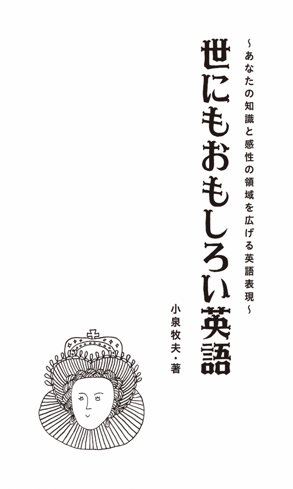
Prologue
「私は馬だ」とオバマは言った
私はその時、自宅の居間で妻と息子と一緒にCNNの英語ニュースを見ていました。アメリカ大統領選最後の週末、再選を目指すオバマが7州8か所での演説を行ったという、"弾丸ツアー"についてのニュースです。オバマは疲労も極限に達していたに違いありません。移動のためのジェット機の中で仮眠を取った以外は、ほとんど寝ていなかったでしょう。それでも疲れたそぶりも眠そうな顔も見せず、いつものように冷静で自信あふれた表情で演説を始めました。
その演説の冒頭を聞いたところで、息子が「あっ、今『私は小さな馬だ』と言った」と言うのです。彼はフリーターで、8か月にわたる世界一周の放浪の旅を終えて帰国したばかりでした。英語はまあまあですが、リスニングの力はかなりのものです。
私は、その突拍子もない解釈に驚きつつも「凄いなあ！」と褒めたのです。しかし、オバマの演説の出だしで、なぜ「私は馬だ」などというふうに聞こえたのでしょうか？
実は、そのくだりは"I'm a little bit hoarse."という文章でした。hoarseは形容詞で「声がかれた」という意味で、発音は「馬」のhorseと全く同じなのです。またa little bit「ほんの少し」のbitが聞き取りにくかったために、息子の耳には"I'm a little ... horse."「私は小さな馬です」と聞こえたというわけです。
このhoarseは一見簡単に思えますが、英語学習者なら誰でもが知っているという単語ではありません。上級者が覚える英単語といってもいいでしょう。
「声がかれている」という意味では、もっとわかりやすいフレーズがあります。それは何とI have a frog in my throat.「私ののどにはカエルがいる」という口語的表現です。これならすぐにイメージできますし、一度覚えたら決して忘れないでしょう。私もこの表現を知った時には、驚きを超えて感動すら覚えてしまいました。
英語には、このようにフォーマルな硬い表現に対して、それに相当するような軟らかくカジュアルな口語表現があるのです。
もうひとつ例を挙げましょう。大勢の人の前でスピーチをしたり、歌を歌ったり、演技をしたりする時には、とても「緊張する」ものです。そんな時、英語ではget stage frightという表現を使い（getの代わりにhaveを使うこともあります）、I get stage fright whenever I sing in front of a lot of people.「多くの人の前で歌う時は、私はいつもあがってしまう」などと言います。stage frightとは「ステージの恐怖」ということです。それだけでも十分興味をそそるのですが、同じ意味の口語表現にI have butterflies in my stomach.「私の胃の中に蝶々がいる」があります。日本語でも、緊張した時に「胸がドキドキした」などと言いますが、その「ドキドキ」をアメリカ人やイギリス人は「胃の中にいる蝶々の羽ばたき」にたとえたのです。
今、日本でも英語を"社内公用語"とする企業が増えています。外国人も積極的に採用し始めています。真の意味での「国際化」が始まっているのです。
しかし、日本人が英語をマスターするのは容易なことではありません。無味乾燥な単語や熟語、文法も覚えなくてはなりません。会話力やリスニング力を鍛えるには、長期間の実践的トレーニングも必要になります。「英語＝苦痛」と考えている人がほとんどでしょう。
英語を使って外国人とコミュニケートできる｢喜び」を知るようになるまでには、長期間の苦痛を味わわなければならないのです。日本では、英語を話せる人が尊敬され憧れの対象にもなります。特に留学とか海外に住んだ経験もなく、国内だけでコツコツ勉強して英語ができるようになった人などは、"崇拝"されるといっても過言ではありません。それは英語力が、難行苦行を乗り越えたという、ひとつの"勲章"と考えられているからです。
私は、これまで英語関係の雑誌や書籍の編集に携わってきました。日本人としては、英語を学ぶという点では、特殊な恵まれた環境にいたのかもしれませんが、それでも英語に悪戦苦闘する毎日でした。
そんな中で慰めとなり、英語を続けるモチベーションとなったのが、先に紹介したような「おもしろい」英語表現でした。英語そのものの中に、とても魅力的な世界が広がっていたのです。英語表現ひとつ覚えるたびに、知識だけでなく自分の感性の領域が広がっているのが実感できました。そして、その積み重ねは、私の人生観をもダイナミックで柔軟なものに変えてくれたのです。
本書では、私の心の琴線に触れた「世にもおもしろい」英語表現の数々を、人生・仕事・洒落た表現・恐怖表現・動物・人体・植物・色彩・人名・地名・数字といった章に分けて網羅しようと思います。それぞれの表現の語源や成り立ちから実際の使い方も、できるだけ詳しく解説します。そこには英語を話すアメリカ人やイギリス人の普段の生活振りから人生観、感性や知恵、歴史までも垣間見ることができるでしょう。そして、これはおまけですが、私自身の英語表現にまつわる鮮烈な記憶も語っていきたいと思っています。
この本のタイトルは「世にもおもしろい英語」です。日本語の「おもしろい」にはいろいろな意味が含まれています。「愉快な」「滑稽な」「ふざけた」「興味深い」「洒落ている」「楽しい」「絶妙な」「感動的な」「知的な」「趣のある」、ひょっとしたら「くだらない」や「恐ろしい」なども、また違ったおもしろさなのかもしれません。
この本には、そのような英語表現の持つ多種多様な「おもしろさ」が一杯詰まっています。英語のトレーニングに疲れた時、「全然上達しないし、英語なんてやめてしまえ！」と自暴自棄になった時、ぜひこの本を読んでみてください。英語という"砂漠"でみつけたオアシスのように、あなたの乾いた心に潤いを与えることができるかもしれません。
さあ、"やる気スイッチ"をオンにして、「英語の旅」を続けようではありませんか。
Have fun!
Contents
コウノトリが運ぶ／銀のスプーンをくわえて／昨日生まれた訳じゃない／「結婚」という結びつき／「つわり」は「朝の病気」／銃を持って結婚式へ／空想と現実のはざまで／Disneyland daddy／木の葉を裏返す時／不死鳥はよみがえる／先祖への合流／白鳥の歌
ヤクルトを嚥下する／クレーンは「鶴」だった／カラスを食べる屈辱／「カクテル」はオンドリの尻尾？／小鳥の便り／アヒルのようにduck down!／dog yearの1年／犬は惨めな動物なのか？／cats and dogsは「犬猿」の仲／犬は傍観者なのか？／犬のように働く／vealとbeer／「牛の相場」と「熊の相場」／馬の口から直接...／馬の色／川の途中で馬を代えるな／白い象は「無用の長物」／鯨の時間／「猿でもわかる」を英語で／「猿の結婚式」と「狐の嫁入り」
「内臓」と「根性」／腕と脚の値段／「手を貸す」はlend a hand／「親指」はfingerではない／中指の想い出／結婚指輪は右手の薬指に／長い顔は「浮かぬ顔」／「心」を食べる／「黄金の心」と「石の心」／英語でも「口にチャック」／「馬耳東風」を英語で／頼れる肩は「相談相手」／なぜneckが「障害」なのか？／鼻の差で勝つ／髪の毛1本／アキレスの弱点／新鮮なflesh／体内の「ティッシュ」
瞳の色／「赤い首」の記憶／黒字と恐慌／黒いマリア／オレンジ色の「ブラック・ボックス」／「赤」と「黒」／「白い嘘」と「黒い嘘」／「白い騎士」「黒い騎士」／白は「ブラック」だった／「白」と「黒」／「灰色」は「あいまい」の色／赤信号でも突っ走れ！／推理小説の「赤いニシン」／赤いカーペット／緑は「嫉妬」の色／「未熟」と「エコ」のgreen／幸せのgreen flash／「青」は高貴か猥褻か？／pinkは「元気」の色／「白い物」「黒い物」／brown noseがなぜ「ゴマすり」なのか？
John Bull誕生秘話／Uncle SamはU.S.から／「名なしの権兵衛」を英語で／「署名」はJohn Hancock／悲しきDear John letter／幸せな老カップル／Johnnyは「身許の知れない人」／覗き見するTom／英語版「浦島太郎」／Hobsonの選択／本物のMcCoy／Boycottは「ボイコット」された人／リンチ大佐の「私刑」／催眠療法の先駆者
トルコと七面鳥／フライド・ポテトとfrench fries／ビートルズの「ノルウェイの家具」／Tokyoiteは「東京人」／Shanghai「上海」が動詞になると／Newcastleに石炭を送る／「ミズーリ州」が意味すること／オランダ人への罵詈雑言／イギリスの敵対意識
「ゼロ」と「無」／「無効」の重複／グラウンド・ゼロの記憶／zero-sumという社会／number oneとnumber two／「ランボー」はFirst Blood／2＋2＝4と2＋2＝5／3人の賢者／「三猿」は外国から／4つの「自由」／アメリカと「言論の自由」／マスコミの階級／Take Fiveは「5分の休憩」／the Fifthは「黙秘権」／5本指のディスカウント／5つ目の車輪／6と7の混乱／ラッキー・セブン／7つの海／世界の7不思議／「9の雲」とは？／9日間の奇跡／10点満点の女性／モーセの十戒と大誤植／11番目の時間／13は不吉な数字／13恐怖症／13と４／15分間の名声／Catch-22という「ジレンマ」／聖なる数字／40エーカーとラバ1頭／49とゴールドラッシュ／411は「情報」の意味／小説家と2000ポンド／逆境は「姿を変えた幸福」／100万回の「ありがとう」
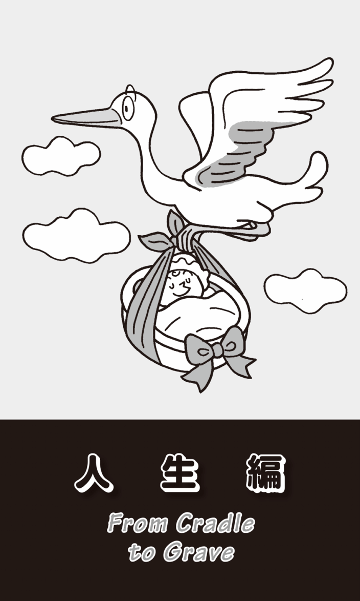
コウノトリが運ぶ
I was born in Japan.「私は日本で産まれた」──中学生の時、英語の授業で「受動態」を学んだ際に教科書に載っていた表現だ。先生が「これは『受け身』といって、be動詞＋動詞の過去分詞で表現する」と言った後に、「英語では、君たちは『産まれた』のではなく『産まされた』と考えるんだ」と説明した。思春期真っ只中の私はあらぬ妄想を膨らませてしまったのだが、授業の後にクラスメイトに聞いたら、みんな同じようなことを考えていたという。
bornはbearの過去分詞だ。しかし通常はbear-bore-borneと活用変化し、過去分詞はborneになる。だから「彼女は3人の子供をもうけた」は、She has borne three children.となる。ただし、be bornの場合は例外的に最後のeがなくなる。だが、これにも例外がある。byによって産んだ人が特定される場合は、Three children were borne by her.「3人の子供が彼女から産まれた」のように、be borneとなるのだ。一体、誰がこんな七面倒くさい文法を決めたのだろうか？
bearにはいろいろな意味があるが（ここでは「熊」を意味するbearのことは、ちょっと忘れてほしい）、大雑把にいうと3つに分かれる。「産む」と「運ぶ」、そして「耐える」だ。語源辞典をいろいろ調べてみたら、もともと5世紀の中頃から11世紀末まで使われていた古英語ではbearには「産む」と「運ぶ」という2つの意味があったという。ひとつの説では、子供を身ごもると、妊娠している女性がお腹の中の胎児を運ぶ。だからbearには「産む」と「運ぶ」両方の意味ができたというのだが、ちょっと信じがたい。
「産む」と「運ぶ」の関連については、もっとロマンチックな説もある。ヨーロッパには「コウノトリが赤ちゃんを運んでくる」という言い伝えがある。それで「運ぶ」と「産む」という意味が結びついたというのである。コウノトリにはCiconia Ciconiaというとっても素敵な学名があるが、通常はwhite storkと言われている。「コウノトリが赤ちゃんを運んできた」は、The white stork came bearing a baby.となり、この表現でもbearが「産む」というニュアンスを含んだ「運ぶ」という意味で使われている。
それでは、なぜbearには「耐える」という意味もあるのか？ 「産む」ことも「運ぶ」ことも、大変な苦痛に耐えなくてはならないからだということは容易に想像がつく。「運ぶ」ということを考えてみると、昔は今のようにトラックも鉄道も飛行機もない。重い荷物を背負って長距離を歩くことは大変なことだっただろうし、荷車に荷物を積んで運んだとしても、それを押して急な坂道を上らなければならなかっただろう。車輪がぬかるみにはまってしまったら、そこから抜け出すのも容易ではなかった。きっと「運搬＝苦痛＝忍耐」と考えられていたに違いない。
それに関連して、travailという単語がある。「骨折り」「苦痛」「陣痛（産みの苦しみ）」という意味だ。これはもとをたどればtravel「旅行」と同じ語だった。確かに、昔の「旅行」はほとんど徒歩で、大変な思いをしたことだろう。幾多の危険も待ち構えていたに違いない。乗り物といっても馬車や船くらいだった。船に乗ったとしても、嵐で遭難することも多かった。まさに命がけだったのである。「旅行」も「運搬」も「お産」も、困難や苦痛に「耐える」ことだったことが想像できる。
銀のスプーンをくわえて
友人のアメリカ人に子供が生まれたので「銀のスプーン」を贈った。英語で「裕福な家に生まれる」ことをbe born with a silver spoon in his /her mouthとも言う。「口に銀のスプーンをくわえて生まれてくる」ということだ。だからなのだろう、欧米では昔から「生まれた子供が一生食べ物に困らないように」という願いをこめて、出産祝いに銀のスプーンを贈るという習わしがある。この表現は、昔イギリスで洗礼の際に、godfather（名付け親）がスプーンを贈る風習があり、身分や貧富の差によって材質が異なっていたことからきている。
その友人は、お礼の言葉とともに"My son was born with a wooden spoon in his mouth, because I am not so rich."「僕はお金持ちじゃないから、息子は木のスプーンをくわえて生まれてきたんだ」とユーモアたっぷりのthank-you note「礼状」を送ってきた。
日本でも、この風習に倣って、誕生祝いに銀のスプーンをプレゼントする人が多くなっている。純銀のスプーンに赤ちゃんの名前や、生年月日・時間、体重や身長を刻印して贈ることもできる。
最近、裕福な人に銀のスプーンを贈ると、失礼にあたるという話を聞いた。きっと、もう銀のスプーンをくわえて生まれてきているので、必要ないということなのだろう。日本でも「櫛や鏡をプレゼントしてはいけない」とか「病気のお見舞いに菊を持っていってはいけない」などと言われるが、欧米の風習にもいろいろなタブーがあるのだ。
ちなみに、櫛は「苦死」に通じ、鏡は「割れる」ので縁起が悪いからだという。他の説では、「あなたは器量が悪いのだから、櫛と鏡でちょっとは身だしなみを整えなさい」と言っているようで失礼だからだ、と聞いたことがある。菊は「仏花」といわれ、仏様に供える花だから、病人のお見舞いには厳禁なのだという。
昨日生まれた訳じゃない
もうひとつbornを使った表現に、I wasn't born yesterday.がある。「昨日生まれた訳じゃない」ということで、「そんなことに簡単にだまされないぞ」「そんなことを知らない訳ないよ」「そんな初心じゃない」という意味である。
例えば、大法螺吹きという評判のある人から信じられないような話を聞いたとしよう。もうひとり別の友人から"Did you believe his story?"「彼の話を信じたのかい？」と聞かれた時、"Oh, come on. I wasn't born yesterday."「やめてくれよ。僕は昨日生まれた訳じゃないよ」と答えることができる。つまり「そんなことに、だまされたりしないよ」ということだ。
こんな状況でも、この表現を使うことができる。もしあなたが会社の同僚から"You should be polite when speaking to the boss's wife."「社長の奥様と話をする時には、丁寧にしなければいけないよ」と言われたら、"Hey, I know it. I wasn't born yesterday."「ああ、そんなことわかってるさ。僕はそんな世間知らずじゃないよ」と言うこともできる。
知り合いの日本人商社マンから、このI wasn't born yesterday.という表現で、大変な目にあったという話を聞いた。その人は、アメリカのSan Franciscoの路上でコイン・パーキングに車を停めたのだという。アメリカは道路が広いので、一番端の車線が駐車スペースになっていて、そこにパーキング・メーターがある（東京でも、最近そんな路上の駐車スペースを見かけるようになった）。
彼が用事を済ませて車に戻った時、すでに駐車時間が過ぎていて、メーターの赤いランプが点滅していた。コインを探したが、あいにく持ち合わせがなかったので、また次にその分を払えばいいと思い、車に乗り込みエンジンをかけた。車を発進させようとした時、ひとりの男が近づいてきて、窓をコツコツと叩いた。商社マンがウィンドウを下げると、男は声をかけた。「駐車時間が過ぎているのに、なぜ料金を払わないんだ」と。商社マンは「コインの持ち合わせがないので、今度払うことにした」と答えた。「自分はパーキング・メーターを管理している者だが、明らかに駐車違反だ。罰金として60ドル払え」と言う。身なりからしてどうやらホームレスのようだった。偶然そこを通りかかって、いいカモがいると思って、難癖をつけに来たことは明らかだった。
「身分証明書を見せていただけますか？」「オフィスに置いてきてしまったので、今は持っていない」などと、最初はお互い静かにやりとりしていたのだが、そのうちにだんだん口調が強くなってきた。その時、あの表現が商社マンの脳裏をよぎったのだった。一生懸命に暗記したのに、これまでに一度も使ったことがない。今だ、このチャンスを逃すと、一生口にせずに終わってしまう。"I wasn't born yesterday!"──商社マンがそう叫ぶと、突然男の表情が変わった。"Hey, you!"と叫んで、車窓から手を伸ばしネクタイをつかんできた。彼はその手を振り払い、車を急発進させて逃げたのだと言う。
その商社マンは、「I wasn't born yesterday.が、こんなにきつい表現だと思わなかったよ」と、その時のことを振り返っていた。言葉は、状況によって強さが変わる。気心が知れている友達や家族に軽口を叩くぶんにはいいが、I wasn't born yesterday.はあまり親しくない人には使わない方がいいだろう。
「結婚」という結びつき
「結婚する」はmarryだが、tie the knotという表現もよく使われる。knotとは「結び」「結び目」のことだ。日本語でも、「結婚」や「結納」などには「結」という漢字が使われる。tie the knotは、その昔、結婚式で新郎新婦の「結びつき」の象徴として、お互いの腕や衣服の袖にリボンを結んだことからきている。
knotは、船の速度を表す単位「ノット」と同じ単語だ。等間隔にknot「結び目」をつけた長いロープを巻いて船に乗せる。それを海に流しながら航行すると、ある一定の時間に流れていった結び目の数でスピードがはかれるのだ。それが「結び目＝ノット」という単位の由来である。ちなみに、1ノットは1時間に約1.85キロ進む速度で、20ノットはおよそ時速37キロになる。
結婚に関連する表現には、こんなものもある。always the bridesmaid, never the brideで、「いつも花嫁の付き添い役で、実際の花嫁にはなれない」という意味だ。「希望をかなえられそうになるものの、いつもかなえられない」とか「いつも2番手で、決して1番になれない」ということだ。出世しそうになるのだけれど、いつも最後にダメになってライバルに先を越されたり、賞をもらえそうになるのだが、いつも他の人が受賞したりする場合にも使われる、便利な言い回しだ。
「つわり」は「朝の病気」
「妊娠している」は英語でpregnantと言うが、他にもいろいろな言い方がある。She is going to be a mother.「彼女は母親になる」でもいいし、ちょっとふざけてShe's big with child.「彼女は、子供を身ごもっているので（お腹が）大きい」と言うこともできる。
他によく知られているのがexpectingという表現だ。She is expectingと言った場合、後にはa babyが続くが、これはよく省略される。子供が生まれることを待っている、楽しみに「期待している」ということだ。日本でもJRに乗っていると、シルバーシートに優先的に座れる人は、"elderly people, handicapped persons, expecting mothers"と英語でアナウンスされる。英語には、このような婉曲な表現が多い。
それでは、「つわり」を英語で何と言うかご存じだろうか？ 何とmorning sickness「朝の病気」となる。朝は空腹で吐き気をもよおすことが多いからだといわれている。しかし、「〈つわりで悩んでいる人のためのサイト〉若葉マークくらぶ」という日本のウェブサイトで、多くの妊婦に「いつが一番つわりが辛いか」というアンケートを取ったところ、「18時から24時」という回答が圧倒的に多かったという。もしそうなら、evening sickness「夜の病気」とした方がいいのではないか。
銃を持って結婚式へ
「妊娠」といえば、shotgun marriageという表現がある。shotgun weddingとも言う。あえて日本語にすれば「できちゃった結婚」となるが、われわれが考えるようなものではない。私は最初「精子がショットガンの弾のようなスピードで卵子に向かっていって、思いもかけず妊娠してしまう」とか「出会ってすぐに子供ができたことがわかって、スピード結婚する」ことを言うのではないかと思っていた。だが、いろいろ調べているうちに、これはいかにもアメリカ的な表現だということがわかった。
娘に妊娠を告げられた父親が、相手の男のところに行って、ショットガンをつきつけて教会に連れていき、有無を言わせず結婚を迫ることだったのだ。あるいは、結婚式に銃を"持参"して新郎が逃げ出せないようにしたことからきているという説もある。
なぜそこまでして新郎が逃げ出せないようにしたのか、それを説明する際に一番わかりやすいのが、映画「卒業」でダスティン・ホフマン演じる男が教会に乗り込んでいって花嫁を奪って逃げる有名なシーンだ。あれはギリギリのタイミングだったことがわかった人は、日本にどのくらいいるのだろう。教会で神の前で結婚を誓ってしまうと、それは「神との契約」ということになり、もう絶対に撤回できない。だから逃げるとしたら、祭壇で神父の前で神に誓う前になる。その後では、もう結婚は成立したことになってしまうのだ。
空想と現実のはざまで
「恋をする」はご存じのようにlove、「恋に落ちる」はfall in loveと言う。「（男女が）付き合う」はgo withとかgo out with、あるいはseeとなる。ふつうgoing with、seeingのように進行形にすることが多い。「会い続けている」ということだ。例えばYoko is going with John.「ヨーコはジョンと付き合っている」とか、Who is she seeing now?「彼女は、今だれと付き合っているの？」などと使うことができる。
おもしろいのが、恋に夢中になったり嬉しいことがあったりして、「足が地に着かない」という状態の表現だ。fall head over heels in love with her「彼女に恋をして頭がかかとの上に落ちる」は、宙返りしている状態のheels over headが、いつの頃からかhead over heelsと逆になったのだという。心どころか体まで、乱れに乱れている状況をよく表している。
Carpentersのヒット曲に"Top of the World"（Richard Carpenter作詞・作曲）がある。「世界の頂点」という意味だが、これも「有頂天になって」「成功して」ということだ。歌詞には"Your love's put me at the top of the world"、直訳すれば「あなたの愛が、私を世界の頂点に置いた」とある。つまり「あなたに恋をして、わたしは最高の気分になっている」ということだ。素敵な恋人ができて、天にも昇るような女性の気持ちを歌っている。
cloud-cuckoo landという表現もある。「雲の中のカッコーの国」ということだ。古代ギリシャ時代の喜劇作家、アリストパネスが紀元前5世紀に書いた『鳥』という劇に出てくる"空中の理想郷"のことだ。2人のアテネ人が、地上での生活に愛想をつかし、鳥たちを集めて空中に城を築いて「鳥の王国」をつくる。これがcloud-cuckoo landで、神と人の領域の中間にある国とされる。ここから、ちょっと皮肉を交えて「現実離れした気楽で幸福な場所」を意味するようになった。She is living in cloud-cuckoo land.と言ったら、「彼女は現実離れした夢想の中で生きている」ということになる。
やはりcloudを使った表現にcloud nineがある。I'm on cloud nine.と言ったら、「最高に幸せな」という意味だ。なぜだろうか？ 詳しくは数字編で述べたいと思う。
これまでの幸せを表す表現とは反対に、あまりにも現実の生活が惨めなので、空想の世界に逃避しているような場合もある。castle in the airは「空中の楼閣」、build castles in the airで「空中楼閣を築く」となる。つまり「現実には起こりえないことを空想する」「実現性のない計画を立てる」という意味だ。
あのミュージカル映画"Les Misérables"の中で、幼いコゼットが歌う歌に"Castle on a Cloud"（Boublil Alain /Natel Jean Marc作詞・Schonberg Claude Michel作曲）がある。「雲の上の城」という意味だ。歌詞の最初が"There is a castle on a cloud /I like to go there in my sleep"「雲の上にお城があります。夢の中で、そこに行くのが好き」となっている。惨めな境遇の中で、せめて夢の中だけでは幸せでいたいという思いを切々と訴える曲だ。
嬉しいか辛いかは別として、「心ここにあらず」を表す英語は多い。walk on air「空中を歩く」も、雲の上をフワフワしながら歩いているような浮遊感があり、現実感が希薄な表現だ。have one's head in the clouds「頭が雲の中にある」も同じニュアンスだが、それを応用したget one's head out of the clouds「頭を雲から出す」は「現実に戻る」ということだ。よくGet your head out of the clouds and get back to work.などと言う。「ぼんやりしてないで、仕事をしろ」「仕事に戻れ」という意味だ。
Wake up and smell the coffee.「起きてコーヒーの香りをかぎなさい」という表現もある。「現実に目覚めなさい」「今の状況を直視しなさい」ということで、「今起こりつつある問題に気づいて、早くそれに対処しなさい」というニュアンスになる。
さらにStop and smell the roses.「立ち止まって薔薇の香りをかぎなさい」というのもある。これは友達や家族が苦境にあったり仕事に熱中したりしていて、まわりが見えなくなっているような時に、「ちょっとリラックスして、もっと日常生活の楽しいことや美しいものに目を向けなさい」とアドバイスしたりするのに使う表現だ。
Disneyland daddy
「離婚する」はdivorce、「別居する」はseparateとなる。She has left her husband.というふうにleaveを使うと、「彼女は夫を捨てた」ということだ。恋人でも夫婦でも「別れる」はsplit upやbreak upとなる。ちなみにコンビやバンドが「解散する」場合も、この表現が使える。
「離婚」といえば、今でもカトリック教会は原則として離婚を認めていない（特別な例として「婚姻の無効」があるが、これは結婚成立の時点にさかのぼって、結婚の是非を問うもので、概念としては「離婚」とは異なる）。ワシントンDCからポトマック川を渡ってすぐのアーリントン墓地には、アメリカ元大統領J.F.ケネディの墓がある。ケネディはアイルランド系で、初めてのカトリックのアメリカ大統領だった。その隣には仲良くジャクリーン元夫人の墓が寄り添うように並んでいる。これを見た時、私はジャクリーンはケネディの死後ギリシャの海運王オナシスと再婚していたはずだ、と思った。前の夫と一緒に葬られていいのだろうか？
ネームプレートを首から下げた係員らしき人がいたので尋ねると、「ジャクリーンもカトリックだったが、ケネディとは離婚した訳ではなく死別だったので、宗教的には問題はない。再婚したオナシスとの仲は最悪だったといわれている。だから、ケネディの隣に埋葬されることを望んだのだろう」と親切に教えてくれた。
最近知って驚いた表現にDisneyland daddy「ディズニーランド・ダディ」というのがある。妻と離婚したり別居している場合、父親は一定の期間に回数を決めて子供に会うことができる。そういう場合には、特別に子供が大喜びするようなことをする。例えば「ディズニーランドに連れていく」ことだ。子供と父親にとっては悲惨なシチュエーションだが、何と洒落た表現ではないか？
この表現は、もともとzoo daddy「動物園ダディ」と言っていたのだが、人気のあるDisneylandがzooに取って代わったのだという。
木の葉を裏返す時
アメリカ人はmobile peopleと呼ばれる。確かに日本人と比べると、常に移動し仕事を変える人も多い。有名な英語のことわざにA rolling stone gathers no moss.がある。日本語では「転がる石には苔は生えない」などと訳す。生き方や仕事を頻繁に変えると得るものが少ない、つまり同じことをじっくりやった方が最終的には得をするという「忍耐」を重んじる表現だ。あるイギリス人に確認したら、「私の国でも同じ意味だ」と言っていた。
ところがアメリカでは、このことわざを全く逆の意味と理解している人も多い。動かないでいると、川の石のように苔のような余計なものがついてしまう、だから「いつも動き回って、常に身も心も新鮮でなければならない」という解釈だ。
アメリカ人の友人が、長年住みなれた日本を離れ「国に帰る」と言う。その時、彼は"I've decided to turn over a new leaf."と続けた。「新たな人生を歩み出す」という意味だ。何とロマンチックな表現だろう。この言葉を言われた時、私は紅葉の秋にベンチに腰掛けながら、ひらひらと舞い落ちてきた黄色い葉を手に取り、それをそっと裏返して、過去のしがらみをきっぱり捨てて新しい生活に思いを馳せる......などという、そんな静謐なひと時をイメージした。
だがいろいろ調べてみると、leafは「木の葉」のことではなかった。実は、本やノートのページのこともleafと言うのだ。１枚の紙や写真のことを日本語でも「1葉」と言うし、職場の会議やプレゼンなどでは、年配の人なら配布資料の次のページを見てほしい時に「次葉をご覧ください」と言ったりする。念のために、広辞苑でこの「葉」を引いてみると、2つ目の意味に「葉のように薄く平たいもの。また、それを数える語」とあった。
このturn over a new leafの意味を考える時、一番イメージしやすいのは、日記の何も書いていない真っ白いページを開くことだ。あるいは小説の次ページを開いて新たなストーリー展開を読むことである。それがturn over a new leafなのである。日本でも「青春の１ページ」などという表現があるが、英語にも同じ発想があることを知って、嬉しくなった。
不死鳥はよみがえる
人生には失敗がつきものである。「破産する」をgo under、「倒産する」はgo bankrupt、go out of businessなどと言うが、「借金などせず、挫折せずに生きる」ことをkeep one's head above waterと表現する。「頭（顔）を水の上に出したままにしておく」ということだ。
挫折しても、それに負けずにカムバックすることを、日本語で「不死鳥のようによみがえる」と言うが、英語でもrise like a phoenix from the ashes「灰の中から不死鳥のように再起する」となる。これは先に英語の表現があって、それが日本でも使われるようになったものだろう。子供の頃、手塚治虫の「火の鳥」を映画で見たが、燃え残った灰から不死鳥が再生して空高く飛び立つシーンがあった。
｢破産する」には、もうひとつgo belly upという表現があるが、これには同時に「死ぬ」という意味もある。魚が死ぬと「お腹を上に向ける」ことからきた表現だ。
先祖への合流
日本語でも、「死ぬ」という言葉には、数多くの類語がある。「亡くなる」「逝去する」「他界する」「事切れる」「永眠する」「成仏する」、悪い言葉になると「くたばる」などと限りがない。
英語で「死ぬ」はもちろんdieだが、婉曲表現ではpass awayとなる。事故や戦争などで「死ぬ」はbe killedだ。expireも「死ぬ」という動詞である。臨床的な言葉で「息を引き取る」「ご臨終」という意味だ。この単語には「期限が切れる」「失効する」というニュアンスがある。例えばパスポートには、Date of expiryという表現が印刷されている。expiryはexpireの名詞形で、契約や保証期限などの「満了」「終了」「消滅」のことで、「有効期間満了日」という日本語が添えられている。
アーノルド・シュワルツェネッガー主演でお馴染みの映画に「ターミネーター」がある。英語にすれば"The Terminator"、「抹殺者」という意味だ。動詞のterminateは「終わらせる」「解雇する」とか「暗殺する」という意味だが、terminate one's lifeとすると「死ぬ」ということになる。
他にも、return to dust「ちりに戻る」、breathe one's last「最後の呼吸をする」、go to one's final rest「最後の休息に入る」、end one's days「日々を終える」あるいはend one's life「人生を終える」など、「死ぬ」を意味するフレーズは多い。
pop offも「死ぬ」という意味で使われる口語表現だ。popはpopcorn（ポップコーン）でもわかるように、「ポン（と鳴る）」という意味だが、「突然現れる」「出て行く」という意味もある。offは「離れる」「消える」という副詞・前置詞なので、「急死する」ということになる。驚いたことにcheck outも「死ぬ」という意味になる。「ホテルをチェックアウトするように、この世を去る」ということだ。何と軽い表現だろうか。
聖書によく登場するgive up the ghostという表現もある。このghostは「幽霊」ではなく、「魂」「霊魂」ということだ。日本でも死ぬと霊が人体から抜け出すという考え方があるが、この英語も「霊を放棄する」「霊との関係を断つ」ということだ。他に、宗教的で厳粛な表現としてはbe called by God /Heaven「神・天に召される」、be called to Heaven「天国に召される」、be called to one's eternal rest「永遠の休息に召される」などがある。meet /go to one's Makerも「死ぬ」という意味なのだが、なぜかわかるだろうか？ Makerと最初が大文字になっているので想像できると思うが、これは「人をつくった創造者」つまり「神」のことなのである。「創造者に会う」「創造者の許に行く」とは「神のいる天国へ行く」ということだ。
join one's ancestorsも「死ぬ」を意味する。「先祖に合流する」ということだ。join one's dear husband「愛おしい夫と合流する」という表現もある。夫に先立たれた「未亡人が死ぬ」という意味になる。日本でも、よく芸能人の葬式などで、友人代表が弔辞で「私ももう少ししたら、あなたのところに行きます。その時は、ゆっくりお酒でも飲みながら語り合いましょう」などと言うことがある。「先に亡くなった人はあの世にいて、死ぬとその人と再会できる」という発想は日本と共通のようだ。
cash in one's checksも「死ぬ」という意味の口語表現だ。これについて、私は大きな勘違いをしていた。「小切手を現金に換える」という、そのままの意味で考えていたのだ。もし、あなたが小切手を持っていたとしよう。その小切手にサインした人が突然死んだと聞いたら、すぐに換金するのではないだろうか？ 親子や親戚の間で、遺産相続の話が進むかもしれない。だから、「小切手を現金に換える＝死ぬ」というのが、私の解釈だった。だが、英英辞典をチェックすると、「cash in one's checks＝cash in one's chips」となっていた。chipsとは「ギャンブルで掛け金の代わりに用いられるプラスチックの札」のことで、checksもこの同じ意味の「チップ」のことだった。つまり「ギャンブルで得たチップを現金に換えて清算する」ということが、「死ぬ」を意味するようになったのである。
ちょっと古い表現だが、buy the farmも「死ぬ」という意味になる。これは第一次世界大戦で死んだアメリカ人の遺族が「農園を買える」くらいの賠償金を受け取ったことに由来する。
「死ぬ」という意味のフレーズは、このようにたくさんあるが、極めつけはkick the bucket「バケツを蹴る」という口語表現だろう。なぜ、そう言うのかについては、後に恐怖表現編で詳しく触れたいと思う。
白鳥の歌
ちょっと気分を変えよう。とても詩的な言葉にswan songというのがある。白鳥は鳴かない鳥だが、たった一度だけ死に際に美しい声で鳴くという伝説がある。そこから、スポーツ選手の「引退前の最後の試合」や作家の「絶筆」、俳優の「最後の公演」などという意味で使われるようになった。
そういえば、はるか昔に庄司薫という作家の『白鳥の歌なんか聞えない』という小説があった。一読すると、若い男女の淡い恋愛物語のように思えるが、じっくり読んでみると、とても深い内容の小説であることがわかる。
間もなくこの世を去ろうとしている老人の頭脳には、膨大な知識が詰まっている。それが全て消えようとしている。広く深い知識を得ることが、人生においてどのような意味があるか？ 人生とは？ 死とは？ 知識とは？......など、多くのことを考えさせてくれる秀作だった。
庄司薫ももう60歳をとうに越えているだろう。老成した芥川賞作家の作品を読みたいと思っているのは、私だけだろうか。
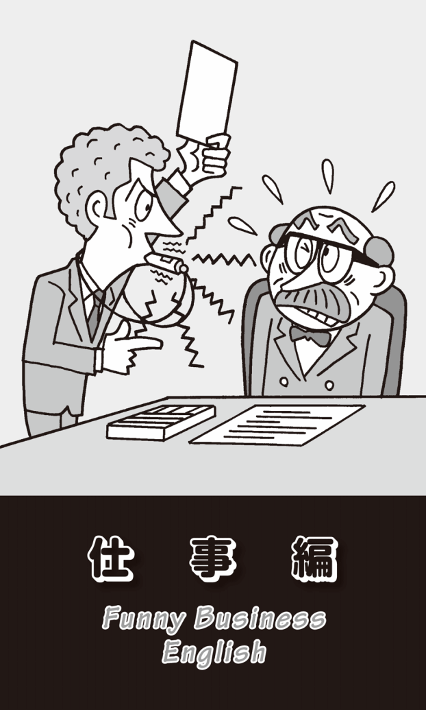
月光の下で働く
あるイギリス人の作家と一緒に原稿チェックをしていたら、いつの間にか深夜になってしまった。彼は時計を見て、私にLet's call it a day.と言ったことが、今も忘れられない。直訳すると「それを1日と呼ぼう」だが、これは「今日は、もう（仕事は）終わりにしよう」という意味だ。特に夜ならばcall it a night「それを夜と呼ぼう」と言うこともできる。そう、｢今夜は、もう終わりにしよう」ということだ。
夜といえば、自分の本職以外に「副業をする」「アルバイトする」ことをmoonlightと言う。夜、月の光の中で人目を避けてひっそり仕事をするということで、He is moonlighting as a bartender.「彼は夜間、バーテンのアルバイトをしている」となる。もともとmoonlightは「密造酒を売買する」という意味で、これはもちろん夜、人目につかないところで取り引きしていたからだ。名詞のmoonlightには「密造酒」という意味もある。
「副業をする」ことがmoonlightなら、「本業」（main job /regular work）はday jobとなる。同じdayがついてもday laborとなると「日雇い労働」、day laborerで「日雇い労働者」だ。
「一生懸命に働く」ことはwork hardだが、「長時間にわたって働くこと」はwork long hours、「残業する」はwork overtime、「休みなしに昼夜兼行で働く」「24時間ぶっ通しで働く」「四六時中働く」はclock（時計）を入れてwork around the clockとなる。「時間までにやり終えようと一生懸命に働く」となるとwork against the clockだ。時計の針の動きに逆らって、早くどんどん仕事を進めるということだ。ちなみに「決めたスケジュール通りに粛々と」という意味の表現にlike clockworkがある。「時計のように正確に」ということだ。
日本語でもよく忙しい時に「息つく暇もない」と言うが、英語にも同じ表現がある。例えばI hardly had time to breathe yesterday.と言う。文字通り訳せば、「昨日は（忙しくて）呼吸をする時間もなかった」ということだ。これも英語一流の誇張表現なのだろう。
難しい仕事、簡単な仕事
仕事には難しいものと簡単なものがある。難しかったりきつかったりする仕事はa tough jobやhard job、difficult jobだ（Jobの代わりにworkやtaskを使う場合もある）。ちょっと難しい表現だがformidable taskというのがある。「手に負えそうもない難しい仕事」のことだ。他にも、英語らしい洒落た表現にhigh wire actがある。high wireは「綱渡りの綱」のことで、high wire actとなると「綱渡りのような困難で危険な仕事」ということになる。
「やさしい仕事」はもちろんeasy jobだ。仕事だけではなく、テストでも何らかの資格を取ったりする場合でも、「そんなの簡単だよ」「朝飯前だよ」と言いたい時、一番知られている表現がa piece of cake「一切れのケーキ」だ。The entrance examination was a piece of cake.「入学試験はやさしかった」とか、Piloting a plane is a piece of cake.「飛行機を操縦するなんて簡単だ」と言うことができる。
なぜa piece of cakeが「簡単な」という意味になったのか、文献をいろいろ調べてみたが、ことごとく「由来は不明」と書いてある。よく言われているのは、「簡単にペロリと食べられるからだ」ということだ。つくるのは、それほどやさしいことではないと思うのだが、知り合いのアメリカ人（男性）は「僕は10分でケーキをつくれるよ。簡単だよ」と自慢していた。
同じ意味でas easy as pie「パイのように簡単な」がある。as American as apple pieと「アップルパイのようにアメリカ的」という表現もある。さらにAmerican mother and apple pie「アメリカの母親とアップルパイ」という決まり文句もある。日本で言えば「お袋と味噌汁」だ。
こういった表現を考えると、なぜpieが「やさしい」「簡単な」という意味になったのかが想像できる。アメリカ人の多くには、ちょっとお腹がすいた時に母親が慣れた手つきでアッという間にパイをつくって食べさせてくれたという思い出がある。パイはすぐにつくれて、すぐに食べられる食べ物として頭にインプットされているのだろう。
他にも、「やさしい」という表現は多い。a walk in the parkは、「公園を散歩するくらい簡単だ」という意味になる。Using a computer is a walk in the park.で「コンピューターを使うのは簡単だ」などと言える。
日本語でも、簡単なことをする時に「目をつぶってもできる」と言うが、英語でもI could do it with my eyes closed.と言う。日本語と同じ発想なのでホッとした。同じ人間だ、考えることはそれほど違わない。
もうひとつ、「そんなに悩むなよ。それほど難しいことじゃないから」などと言いたい時に使うおもしろい表現がある。It's not rocket science.「それはロケット科学ではない」。何と洒落ている言い回しだろう。そういうふうに言われたら、一瞬ではあろうが、肩の力が抜けて心が軽くなるのではないだろうか？
fireがなぜ「解雇する」？
「雇用する」はemployやengageさらにhireがある。誰でもそう思うだろうが、「雇用する」がhireで「解雇する」がfireだなんて、何と紛らわしいのだろうか。hとfでえらい違いだ。
そのfire「解雇する」だが、よくよく考えてみると、これは「火」という意味だ。なぜ「解雇する」「首にする」という意味で使われるのだろうか？ よく言われているのは、fireには「（銃の）発射」という意味もあり、「従業員を会社から外の社会に向けて発射する」ということで、「解雇」の意味になったということだ。
もうひとつdischargeという単語から、fireが「解雇する」という意味になったという説もある。dischargeは義務や勤務などから「解放する」という意味だ。そこから「解雇する」という意味でも使われるようになった。そして、このdischargeには、もうひとつ｢銃を撃つ」「発射する」という意味もあった。「銃を撃つ」は、別の言葉で言えばfireだ。このように、いくつかあるdischargeの意味のひとつの「解雇する」が、fireで代用されるようになったというものだ。私にはこの説の方が信憑性が高いように思える。
「解雇する」は他にもdismiss、sackなどがあるが、ax（イギリスではaxeと綴る）などという恐ろしい表現がある。axとは「斧」のことだ。いかにも「首を切る」という感じの単語である。
show someone the doorという言い方もある。これは経営者が従業員に「解雇」を言い渡した後で、「出口のドアを指し示す」ことだ。
「解雇通知」のことを、昔アメリカではpink slipと言った。今でも「彼は解雇された」をHe got his pink slip.「彼はピンクスリップを受け取った」と表現することもある。これは解雇通知が、昔ピンクの用紙だったことから言われるようになった。日本でも、戦時中に「召集令状」のことを「赤紙」と呼んだが、それを連想させる。
「一時解雇」のlayoff、「リストラ」（事業再構築）のrestructuringは、不幸なことに日本でもお馴染みの言葉になっている。「解雇」や「一時帰休」という意味では、もうひとつ、あまり馴染みのない英語だが、furloughという単語がある。海外勤務の軍人や公務員に与えられる「休暇」、あるいは一般の労働者の自己都合による「休暇」「休職」という意味もある。
それで思い出すのが、日本の「ハローワーク」だ。以前は「公共職業安定所」、略して「職安」と言っていたが、旧労働省が愛称を募集し「ハローワーク」という名前が使用されるようになった。英語にするとHello Workとなる。「仕事よ、こんにちは」というニュアンスもあり、なかなか洒落たネーミングだと私は思っていた。
だが、日本に長年住んでいるアメリカ人から「僕は、ハローワークってファーローワーク（Furlough Work）のことだと思っていたよ。日本語はhとfの発音の区別があいまいだからね」と言われた。「きっとHello Workという名前を考えた人は、furloughという単語を知っていたに違いない」と言うのである。私には、ちょっと深読みしすぎのような気もするが、偶然の一致だと思えなくもない。
内部告発者は笛を吹く
英語では「内部告発者」のことをwhistleblowerと言う。「内部告発する」と動詞になるとblow the whistleだ。スポーツの試合でレフリーが笛を吹くというところからきている。
組織の不正や悪事を公表した従業員は、逆訴訟を起こされたり報復人事をされたり、大きな不利益をこうむるケースも多い。そのような人を守るために、アメリカで「内部告発者保護法」が制定されたが、これはWhistleblower Protection Actと名付けられた。
内部告発とまではいかなくとも、やたら他人の仕事や人格を批判する人がいる。そのような人は必ずといっていいほど、「自分では何もやらないくせに......」と逆に批判されることが多い。「会社では批評家はいらない」とよく言われるが、英語でも「何もしないで、他人の批判ばかりしている人」のことをbackseat driverと言う。後部座席に座っていても、いちいち口うるさく注意する人のことだ。
fence-sitterという表現もある。「塀の上に座る人」ということだ。「塀の上に腰かけて高みの見物をしている人」といった方がわかりやすいだろう。「事の成り行きを見て、自分に有利な方につこうと形勢をうかがっている」というニュアンスがある。日本語でいえば「日和見主義者」とか「風見鶏」ということだ。He's still sitting on the fence.と言えば、「彼はまだ決めないで様子を見ている」という意味だ。
これに似た表現が、イギリスで使われているback-bencher「平議員」という表現だ。backbenchとは国会の議員席の後ろの方を指す。まだ経験の浅い平議員の座る場所だ。日本語では、このbackbencherのことを「陣笠議員」と言う。昔、合戦で足軽や雑兵には兜がないので、代わりに笠をかぶっていたことから生まれた言葉で、採決をする際の挙手要員、つまり人数合わせになっているだけで、自分で自発的に国を動かすようなことをせず、地元の選挙区からの陳情だけを受けているような小粒の議員のことだ。
armchair critic「アームチェアーの批評家」という表現もある。いつもアームチェアーにふんぞり返っていて、何もしないし、何もできないのに、口先では自分があたかも専門家であるかのように、一丁前に立派なことを言う人のことだ。
アメリカで使われる、もっとおもしろい表現がある。Monday critic「月曜日の批評家」だ。日曜日に行われたアメリカン・フットボールや野球の試合について、翌日の月曜日にあれこれ批評をする人のことを言う。似た表現にMonday morning quarterback「月曜の朝のクォーターバック」がある。アメフトではquarterbackは攻撃の司令塔で、プレーの起点となる重要なポジションだ。全くの素人が、いかにも偉そうに選手のプレーやコーチの戦術を批判している様子が思い浮かぶ。この2つの表現は、「後知恵や結果論で批判する人」という意味も含んでいる。きっとそんな人が、あなたのまわりにもいることだろう。
だが、会社にはそのようないいかげんな社員ばかりではなく、きちんと自分で責任を引き受けながら働いている人もいる。「責任を取る」は普通take responsibilityと言うが、他にもいろいろな表現がある。carry the weight of the world on one's shoulders「地球の重さを自分の肩で背負う」は、「責任をひとりで背負う」という意味だ。put one's shoulder to the wheelという表現もある。これは｢ぬかるみにはまった馬車の車輪に肩をあてがって押し出す」という意味で、言葉であれこれ言うのではなく「身を粉にして働く」ことだ。
「責任を取らされる」という意味でHe was crucified for making a big mistake.「彼は大きなミスを犯したので、十字架に磔になった」などと大げさに言うことがある。Heads will roll.「首が転がるだろう」という表現も怖い。大きなミスや大幅な業績ダウンがあった時に、社内で「誰かが責任を取らされるだろう」と噂されたりする時に使われる言葉だ。
deadlineは「死線」
日本でも、ビジネスの現場でいつの頃からか「デッドライン」という言葉が使われるようになった。初めてアメリカ人からdeadline「締切」という英語を聞いた時はちょっとショックを感じた。そうか｢締切」に間に合わないと、死んでしまうんだ。それくらい重い言葉なんだと思ったことを、つい昨日のように思い出す。
よく考えてみると、deadlineをそのまま日本語にすると「死線」となる。そう、もともとこの言葉は、まさに「死の線」を意味していた。アメリカで南北戦争が行われていた時のことだ。捕虜収容所では敵の捕虜を閉じ込めておく監獄から半径17フィートのところに線が引いてあり、捕虜がその線をちょっとでも越えると射殺されたことに由来する表現なのだ。それが、いつの間にか時間的な「締切」に変化したのだという。
黄金の手錠
他の会社から人材を「引き抜く」ことをheadhuntと言う。ヘッドハンティングを専門的に行っている会社もある。よく考えてみると、これもdeadlineに劣らず恐ろしい英単語だ。「首狩り」ということではないか！ headhunter「ヘッドハンター」は「首狩り族」ということだ。
それはともかく、どこの会社にも、他の人より抜きん出た有能な人がいるが、そのような人を他社に引き抜かれないようにするために、良い条件を提示して引き留める必要がある。1980年代後半のアメリカで、有能な社員に示す破格の待遇をgolden handcuffs「黄金の手錠」と呼ぶようになった。cuffとは「袖口」のことで「カフスボタン」という言葉もあるが、handcuffsとなると「手錠」のことだ。
特に契約更新の時に、このgolden handcuffが提示されることが多い。日本でも、プロ野球の選手がFA宣言した時、他の球団に行かないように破格の条件を提示することがある。これもgolden handcuffsの一例だ。
「頭」の中の「嵐」
グループの中で思いつくままにアイディアを出し合うことをbrainstorming「ブレーンストーミング」、日本語では略して「ブレスト」と言う。brainstormとは、直訳してみると「頭の嵐」だが、もともと「霊感」や「ひらめき」を指す言葉だった。
このbrainstormingは型どおりのセレモニー的な会議ではなく、何かを生み出そうとする創造的思考会議のことだ。1930年代後半に、アメリカの広告代理店で副社長をしていたAlex Osbornという人が考案したという。
このbrainstormingという会議には、いくつかのルールがある。まず参加者は思いついたことを何でも言ってよい、いや言わなければならない。そして、とにかくたくさんのアイディアを出す。一番気をつけなければいけないのは、地位や年齢、経験の違いは全く関係がないことだ。さらに重要なのは他の人の出した意見を批判してはいけない。よく日本の会議では、議事進行の流れがあって、それに沿って発言しないと、「あいつは空気の読めないやつだ」と批判される。しかし、このブレストでは｢起承転結」など関係ない。とっぴなアイディアも歓迎する。とにかく頭の中に思い浮かぶことを何でも口に出して言うのだ。このような方法で、最後に見込みのありそうなアイディアを選んで融合させて改良するのである。
委員会がつくった馬
このように何らかのアイディアを生み出す場合には、「ブレスト」でいいだろうが、私はみんなで集まって、ひとつひとつ確実に会社の方向性を決めていくような会議も必要ではないかと思う。大勢で、それぞれの仕事に関する経験とか知識とかを集約することによって、間違いのない判断ができるのではないだろうか。
しかし、知り合いに日本の会社にヘッドハントされたアメリカ人のエグゼクティブがいるが、彼は「日本の会社には、生産性のない儀式的な会議が多すぎる。そのムダな会議に出席している社員全員の給料を時間給に換算して計算したら、とんでもない額になったんだ。もっとスタッフひとりひとりの仕事が、そのまま直接収益に結び付くような合理的なシステムをつくらなければダメだ」と言っていた。
その言葉を聞いて思い出したのが、Too many cooks spoil the broth.という英語のことわざだった。「コックが多すぎるとスープをダメにしてしまう」という意味だ。日本語でいえば「船頭多くして船山に登る」ということになる。同じ意味で、驚愕のことわざがある。A camel is a horse invented by committee.だ。これは「ラクダは委員会によってつくられた馬だ」という意味である。大勢で話し合って、みんなが納得するような馬をつくろうとしたら、それがラクダのような奇妙奇天烈な形になってしまったという表現だ。なるほど！
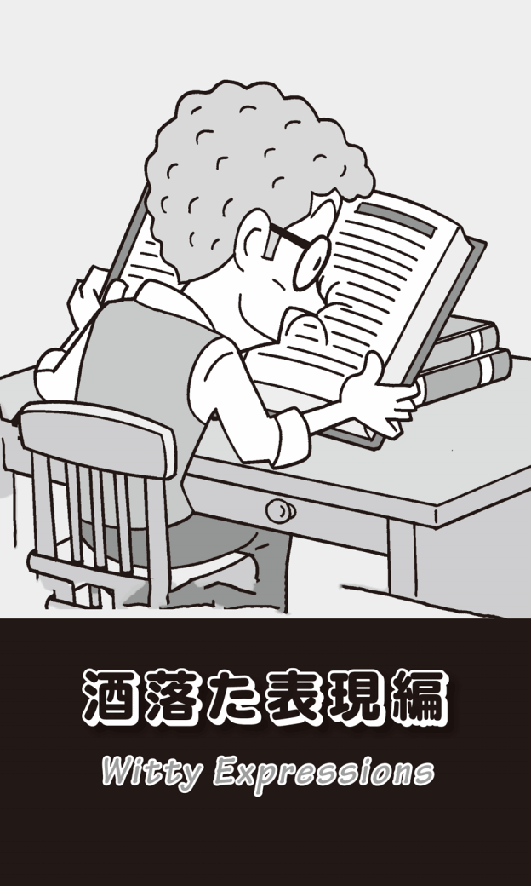
ゴムの首
英語には、思わず「座布団1枚！」と叫んでしまいそうなおもしろくて洒落た表現が多い。例えば主にアメリカで使われるrubberneck busという表現だ。これは｢観光バス」を意味する。rubberneckとは、直訳すれば｢ゴムの首」ということだ。観光バスでは、ガイドさんが「右をご覧ください」「左をご覧ください」などと言いながら、沿道にある有名スポットを説明してくれる。乗客はその説明に従って、いっせいに首を横に向ける。
「左をご覧ください」と言って説明している間に、その説明ポイントが後ろに流れていってしまうことがある。ガイドさんが「ああ、もう左後方になってしまいましたね」などと言うと、乗客は今度は首をもっと後ろに向ける。まるで首がゴムでできているかのように、みな一緒に左右、そして後方へと回るのである。これが「ゴムの首」の意味である。だから、「団体観光客」のことを、rubberneckとかrubberneckerと言うこともある。
このrubberneckを動詞で使うと、「覗き込む」という意味になる。特に「好奇心を持って、首を伸ばしたり回したりしてじろじろ見る」というニュアンスになる。例えば、空き巣が高い塀に囲まれた家の中の様子を首を伸ばしてうかがっているとか、ドライバーがゆっくり運転しながら横を向き、隣の車線の交通事故現場を見ているといった場合に使われることも多い。だからrubberneckには、もうひとつ名詞で「野次馬」という意味もあるのだ。
漫画のような表現
漫画のようなユーモラスな表現としてはcatch some Zsというのがある。これが何を意味するか、おわかりだろうか？ 先ほど仕事編で、深夜まで仕事をしていた時に、イギリス人から"Let's call it a day."「今日の仕事は、ここまでにしよう」と言われたと書いたが、彼はその次に"I want to go back home and catch some Zs."と続けた。「家に帰って寝たい」ということだ。英語の漫画では、いびきの「グーグー」という音を"Zzzzz ..."で表す。だから、複数形のZをcatchするとは「眠る」ということなのである。
ring off the hookという表現も漫画的でおもしろい。「電話のベルがひっきりなしに鳴る」「電話が殺到する」ということだ。昔の電話は、壁のフックにかかっていた。大きな呼び出し音がひっきりなしに鳴って、電話機がフックから飛び上がるように見えるという大げさな表現だ。offには「離れて」というニュアンスがある。
そういえば初期のディズニー・アニメなどでも、電話のベルが鳴ると同時に電話機全体がブルブル震えて、最後には飛び上がるようなシーンがあった。携帯電話を持ち始めた時、バイブ設定にしていたら、机の上でブルブルと振動し始めて動いたので感動したことがある。現実の世界が、やっと漫画に追いついたと思ったのだ。
電話に関する英語表現で、前から疑問に思っていたことがある。「電話を切る」ことをhang up the phoneとかhang up the receiverと言うのだ。なぜupなのか？ 「受話器を置く」のだからhang downではないのか？ そのまま暗記したが、どうしても納得がいかなかったので、「電話を切る」はput down the phoneなどの違う表現を使っていた。
これは昔の電話が、先ほどの説明のように壁のフックにかかっていたことからきている。つまり受話器を「下ろす」のではなく、受話器を「上げて」壁にかかっている電話機本体のアームに引っ掛けることが「電話を切る」ことだったのである。帽子やコートなどをハンガーなどに「かける」ことをhang upと言うが、それと同じ動作なのである。
携帯電話やスマホには受話器もダイヤルもない。そのうちに「電話を切る」という意味のhang up the phoneはもちろん、「ダイヤル（する）」のdialさえ、若い人には理解されず、死語になってしまうかもしれない。余談だが、私がCDのアルバムのことを「LP」と言ったら、娘に軽蔑されたことがある。
燃やすほどのお金
お金についても、ちょっとおおげさだが、洒落た表現が多い。have money to burnというフレーズの意味がおわかりだろうか？ He has money to burn.で、「彼は、お金を燃やすほど持っている」となる。日本語で言うところの「お金がうなるほどある」だ。
反対に、お金がなくていつも困っている人もいる。money burns a hole in somebody's pocketは「お金がポケットを焼いて穴を開ける」ということで、金を稼いでも稼いでも、その「穴」からお金がどんどん出ていってしまうというイメージだ。「お金を無駄遣いする」「お金が身につかない」という意味になる。だから、Money burns a hole in his pocket.と言ったら「彼には浪費癖がある」ということだ。
marry moneyという表現もある。読んで字のごとく「お金と結婚する」、つまり「金持ちと結婚する」ということだ。日本語でもよく「あの人はお金目当てで結婚した」などと言うが、それをとてもシンプルかつストレートに表現している。
鼻を本につっこむ人
have one's nose in a bookという表現も、なかなか洒落ていておもしろい。「鼻を本の中につっこむ」ということで、「本を夢中になって読んでいる」ことを描写する表現だ。もう少し目を本から離して読まないと目を悪くするのではないかと心配になってしまうが、これも英語特有の誇張表現なのである。
そういえば、日本語でも「本の虫」と言うが、英語でもbookwormと言う。これは偶然の一致なのだろうか？ 他にも「本好きの人」はbooklover（読書愛好家）とも言う。book addictも「本が大好きな人」「読書家」という意味だ。もともとaddictは、麻薬の「中毒」「常習者」のことだが、コーヒーが大好きな人のことをcoffee addict「コーヒー中毒」、野球が大好きな人をbaseball addict「熱狂的野球ファン」などと言ったりする。
freakも「麻薬中毒者」のことだが、これも「ファン」や「熱狂者」という意味でも使われる。だからspeed freakは「（スピードという）覚醒剤中毒」と「（車の）スピード狂」の両方の意味を持つ。junkieも「麻薬中毒者」から、ひとつのことにのめり込む「愛好家」「オタク」までを意味し、例えばcamera junkieといえば「カメラマニア」のことだ。
他にも「熱狂者」を表す英語はたくさんある。映画スターや歌手などの芸能人に熱狂している人はfanだし、政治や宗教などに熱中している狂信的な人はfanaticだ。enthusiastも、何かに熱中している人のことだが、日本では特に「車に熱中している人」のことを、いつの頃からだろうか「エンスー」と言うようになった。一般には通用していないが、car enthusiast「自動車愛好者」なら誰でも知っているお馴染みの表現だ。
geekというのもある。これをいくつかの英和辞典で引くと「（生きた鶏の頭をかみちぎるなど）グロテスクなことをする見世物師・芸人」「蛇使い」とある。でも、何人ものアメリカ人やイギリス人に聞いたが、そんなおどろおどろしいニュアンスはいっさい感じないと言う（確かに英英辞典には、そんな意味は記されていない）。彼らは口をそろえて「geekは確かに奇人・変人のことだが、パソコンやインターネットなどに長時間のめり込み、深い知識を持つ"ネット・オタク"のことだ」と言う。「よくcomputer geekなどと言い、hacker（ハッカー）がそのgeekの典型だ」とのことだった。
あるアメリカ人が"In a sense, dictionaries are graveyards full of dead words."「ある意味、辞書は死んだ言葉で一杯の墓場なんだ」と言っているのを聞いたことがあるが、まさにこのようなことを言っていたのだろう。
ページをめくる手がとまらない
先ほどのhave one's nose in a book「本を夢中になって読んでいる」に関連して、page-turnerという言い方がある。ページをめくるのももどかしいほどのおもしろい「本」のことである。日本語で言えば「読み出したらとまらない本」とでもなるだろうか。
似た表現にnail-biterがある。これも「爪をかむ人」という意味だが、「はらはらドキドキさせるサスペンス映画や推理小説」のことだ。知らず知らずのうちに「爪をかんでしまう」くらいおもしろくて人を熱中させる作品のことを言う。スポーツでも、手に汗握るような白熱した接戦のことをnail-biterと言う。「涙があふれてとまらない」ような感動的な映画や芝居、本のことはtearjerkerと言い、ちょっと皮肉を込めて日本語に訳すと「お涙頂戴の作品」ということになる。
このpage-turnerやnail-biter、tearjerkerは、アメリカやイギリスで出版される本の宣伝文（キャッチコピー）ではお馴染みで、例えば"This book is a real page-turner!"などという表現をよく見る。しかし、最近ではあまりにも頻繁に使われるせいか、以前ほどインパクトがなくなっているように思える。日本語の本でも「目から鱗」「珠玉のエッセイ」、「涙がとまらない感動の物語」などという宣伝文によく出会うが、手垢がつきすぎて、何とも思わなくなっている。
同じようにerを使った表現にeye-openerがある。アメリカの俗語で「（目覚ましの）朝酒」「シャワー」といった意味だが、「目を見張らせるもの」「目を見開かせるもの」という意味だ。ある真実を知って驚愕し「目が覚める」思いをしたような場合に、よくこの表現は使われる。
馬1頭食べられるか？
英語らしい洒落たフレーズの中には、実際にはありえないような大げさな表現も多い。そのひとつがI'm so hungry that I could eat a horse.「馬1頭食べられるくらいお腹がすいている」だ。canではなくcouldになっているのは、「食べようと思えば」「必要に迫られれば」、あるいは「もし誰か馬をさばいてくれる人がいるなら」という条件付きのニュアンスを含んでいるからだ。
この表現を初めて知ったのは、もうはるか前のNHKラジオ「英語会話」だった。この年の会話文は、雄二とリサという新聞記者がthe real America /Americanを探求して取材をするというもので、私に英語表現とアメリカに興味を持つきっかけをつくってくれた講座だった。
その雄二が、女性カントリー・シンガーの取材に行き、収録に立ち会った後、スタジオから出てきた彼女が言ったのが、このI'm so hungry I could eat a horse.だった。私は、この野生児のようなカントリー娘が、その時の自分の気持ちをそのまま自己流にアドリブで表現した乱暴な言い回しだとばかり思っていたが、その後「英語表現辞典」にもこのフレーズが載っていたので驚いてしまった。
その女性はとてもおっちょこちょいで、すぐに物をなくしてしまう。頭の中はカントリー・ソングの詩と曲のことで一杯で、それ以外のことには無頓着なのである。2人はスタジオを出て、レストランでインタビューを続けたのだが、彼女は自分の車を駐車場のどこに置いたのかわからなくなってしまう。その時に彼女が言った言葉がとてもおかしかった。それがI have to get my own head screwed on.「頭をしっかりとネジでとめておかなくちゃね」、つまり、そうしないと頭までどこかに行ってしまうという意味のセリフだった。これもちゃんと表現辞典に載っているフレーズで、「精神的にしっかりする」という意味だったのである。
日本語でも「ネジが緩んでいる」と言うが、英語でもhave a screw loose「ネジが緩んでいる」、be missing a few screws「ネジが少し外れている」などと言う。これは偶然の一致なのだろうか？
帽子を食べる
「馬を1頭食べる」ことができないように、「帽子を食べる」なんてありえないだろう。だが、何とeat one's hatという表現がある。I will eat my hat if ...というフレーズで、ifの後には絶対に起こりえないことが続く。例えばI'll eat my hat if he becomes a movie star.「もし彼が映画俳優になったら、僕は帽子を食べるよ」などと言うことができる。つまり「絶対に映画俳優になんてなれない」ということだ。
これは、後に地名編でも触れるが、似た表現にif ..., I am a Dutchman.という言い方もある。「もし〜だったら、私はオランダ人だ」ということだ。例えばIf that's gold, I am a Dutchman.で、「もしそれが金だったら、私はオランダ人だ」などと言う。つまり「絶対に金ではない」ということで、「オランダ人は信用できない」とされていたことからできた表現だ。日本語なら、「もし〜だったら、町中を逆立ちして歩くよ」とか「頭を丸めるよ」などと言うところだろう。
天井を打ちつける怒り
もうひとつ、ありえない表現にIt's so hot you could fry an egg on the sidewalk.がある。「とても暑いので、歩道で卵が焼ける」という比喩的表現だ。couldを使って「そうしようと思えばできる」というニュアンスを出している。
しかし、カリフォルニア州のDeath Valleyで、実際にレンジャーが地面に置いたフライパンに卵を入れて、目玉焼きを作る様子をYouTubeにアップしたことがある。かつて56.7度という世界最高気温を記録した場所だから、その異常な暑さを伝えたかったのだろう。もちろん、その発想のもとには、このIt's so hot you could fry an egg on the sidewalk.という表現があったに違いない。この映像が評判となり、訪れた多くの観光客が真似をして卵焼きをつくるという事態になった。中には車のボンネットや地面のアスファルトの上で直接卵を焼く人も出る始末で、この国立公園では「割った殻は持ち帰りましょう」という注意を喚起せざるをえなくなった。
人のいろいろな感情から生じる動作を表す場合でも、大げさな比喩的表現は多い。This comedy had them rolling in the aisles.と言ったら、「その喜劇はとてもおもしろかったので、観客は（劇場の座席から）通路に転がり出して大笑いした」ということだ。
拍手大喝采で会場が「どよめいた」ような時には、bring the house downと表現する。かなり大げさだが、会場が一度持ち上がってから落ちてきたような衝撃を感じさせる表現だ。
「怒る」という表現には、もっと誇張されたものが多い。lift the roofは「屋根が持ち上がるくらい怒り狂う」ということだし、hit the ceilingは「激しい感情が天井を打ち付けるくらい怒っている」ということになる。アメリカの開拓時代に生まれたfly off the handleという表現もある。これも「カッとなって自制心を失うほど怒る」ということだ。怒ってナタで相手に殴りかかったが、あまりにも勢いが強すぎて、刃の部分が柄からスポッと抜けて飛んでいってしまうという表現だ。怒っている人の激しい言葉が、ナタの刃のように相手に飛んでいって深く傷つけるというニュアンスもある。
「月を撃つ」という挑戦
このように英語には誇張表現が数多いが、その中には絶対に起こりえないこともある。get blood out of a stoneは、その最たるものだろう。「石から血が出る」ということだ。石から血が出るわけがない。だから「ありえない」「無理だ」「とても難しい」というニュアンスになる。It's easier to get blood out of stone than to get a donation from her.と言ったら、「彼女から寄付をもらうより、石から血を出す方が簡単だ」という意味になる。
ちょっと気分を入れ替えて、ロマンチックな表現を紹介しよう。cry for the moonというフレーズがある。これは「月がほしい」と大声で叫ぶことだ。月が自分のものになる訳はなく、「夢のような期待」「ないものねだり」のことを言う。
shoot the moon「月を撃つ」という表現もある。そんなことはできるはずがない。だから、この表現は「高い目標に挑戦する」という意味になる。また、「頑張れ！」といって人を励ます時にも、"Shoot the moon!"と言ったりする。
「雷箱」って何？
洒落た表現編の最後を、thunder boxという表現でしめたいと思う。thunderとは「雷」、boxは「箱」のことだ。だからthunder boxと言ったら、雷のような大音響を出すステレオラジカセのことになる。これはthunderbox radioとも言うが、イメージ的にはよくわかる。
しかしこのthunder box、オーストラリアではもうひとつ別の意味がある。それは何と「トイレ」のことだ。なぜなのか？ ちょっと想像してみれば理解できるだろう。何と普段の生活と密接に関わった"洒落た"表現なのだろうか。
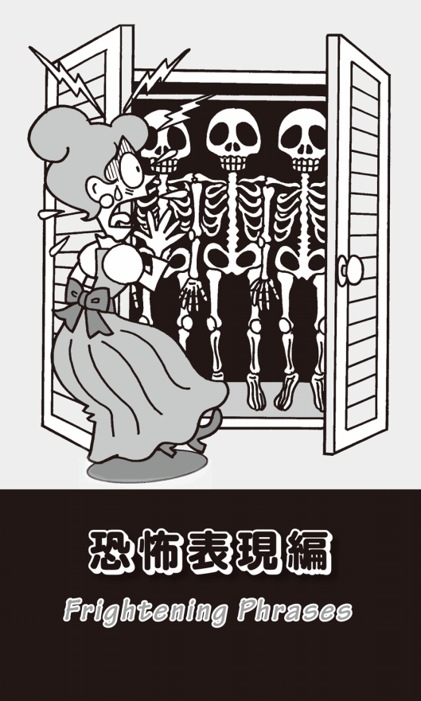
首のないニワトリ
英語には、恐怖でゾッとしてしまうような表現も多い。それも英語らしい表現といえばそうなのだが、血なまぐさい表現も多いので、気の弱い人は、この章は読まないでほしい。
まずは、run around like a headless chicken「首のないニワトリのように走り回る」という表現だ。likeの後がa chicken with its head cut off「首を切り落とされたニワトリ」となることもある。こちらの方が具体的で衝撃的だが、意味はよくわかるだろう。首を切られたニワトリが走り回るように、「あたふたと慌てる」という意味だ。
古い表現だが、pay through the noseというフレーズがある。意味は「法外の金をいやいやながら支払う」ということだ。この言葉が生まれた経緯はとても残酷なものだ。9世紀、アイルランドでは税金を払わない者に対して「鼻を裂く」という身の毛もよだつ罰が加えられたことに由来している。そんな痛い思いをするよりは、税金を払った方がいいので、仕方なく支払ったのだという。
tear one limb from limbという凄まじいフレーズもある。tearは「裂く」、limbは「手脚」だから、「手脚から手脚を切り裂く」ということで「八つ裂きにする」ことだ。実際には、「（人を）激しく攻撃する」という場合に使われる。stab one in the backという表現もある。stabは「刺す」「突く」という意味だから、文字通りには「人の背中を刺す」ということになるが、普通は「中傷する」「裏切る」を意味する。
cut one's own throatも見るだに恐ろしい表現だ。「自分の喉をかき切る」「自殺する」から「自滅を招く」という意味にもなる。He cut his own throat by cheating on an exam.「彼は試験でカンニングをして自滅を招いた」などというふうに使える。他にもharm oneself「自分自身を傷つける」やshoot oneself in the foot「自分自身の足を撃つ」がある。どちらも「自らぶち壊しにする」「台無しにする」という意味だ。
ax(e)は「斧」のことだが、前述のように「解雇（する）」という意味もある。give someone the axというフレーズも「（人を）解雇する」だ。これには「退学にする」「（恋人などを）振る」という意味もあり、例えばShe gave him the ax.と言ったら「彼女は彼を振った」ということになる。
同じaxを使った表現にhave an ax to grindがある。grindとは「研ぐ」という動詞なので、他人の知らないところで「斧を研いで、いつか使おうとしている」という不気味で恐ろしいニュアンスがある。これは「密かな企みがある」「（誰かに）遺恨を抱いている」という意味で、I suspect he has an ax to grind.で「私は彼が腹に一物あるとにらんでいる」などとなる。
バケツを蹴る
人生編でも触れたが、「死ぬ」という意味でkick the bucket「バケツを蹴る」という口語表現がよく使われる。自殺をしようとしている人が、裏返したバケツの上に立ち、上から下げたロープを首に巻いて、バケツを蹴ったことからきている。このkick the bucketは「私刑」や「死刑」の方法でもあった。この場合は、死刑執行人がバケツを蹴ったのである。
もうひとつ説がある。昔のブタの屠殺方法に関連する表現だったというのだ。ブタの喉を切り裂いて瀕死の状態にしておいて、後ろ足を四角い木の枠にくくりつける。この木枠は滑車に取り付けられていて、ブタの体は木枠ごとスルスルと上に上がる。それが井戸から水をくみ上げる桶（バケツ）を連想させたので、この木枠はbucketと呼ばれるようになった。そしてブタに最後のとどめを刺すと、暴れてこのbucketを蹴って息絶えたのだという。
このkick the bucketは、今では「死ぬ」という意味で一般に使われるようになっている。この表現をよく使うアメリカ人の友人がいるが、私はいつもpass awayとか、何か別の表現を使ってくれないかと言っている。
赤い手で
私が最初に英語って何と凄い言葉なんだろうと驚いたのは、red-handedという表現を覚えた時だった。この表現と出会わなかったら、私の人生は全く違ったものになっていただろう。
red-handedは「赤い手で」ということだが、何とこれは「現行犯で」という意味なのである。The police caught him red-handed.｢警官は彼を現行犯で捕まえた」などと言う。殺人や傷害で相手を傷つけ、犯人の「手が血で赤く」なっている情景が生々しく思い浮かぶ。日本語の「現行犯」は法律用語だが、このような簡単な単語を使えば、素人にも容易に意味がわかる。
その時、ふと疑問に思ったのは、この表現が人を傷つけるような殺人や傷害の時だけに使われるのだろうか、ということだった。いろいろ調べてみると、盗難や強盗、麻薬所持、密輸、贈収賄でも、このred-handedが「現行犯で」という意味で使われることがわかった。つまり殺人や傷害で「手が血で赤く｣なっていなくとも「現行犯で」という意味で使われるということだ。The guards caught the thief red-handed.「守衛が泥棒を現行犯で捕まえた」とか、The man was caught red-handed smuggling drugs.「男は麻薬密売の現行犯で捕まった」というふうに言うこともできる。
小部屋の骸骨
skeleton in the closet「クローゼット（小部屋）の中の骸骨」という表現も恐ろしい。なにかヒッチコックの映画「サイコ」を髣髴させる。これは「人に絶対に知られたくない個人や家庭の秘密」のことだ。
その表現の出所には2つの説がある。ひとつは「何の悩みも不自由もない幸せな生活をしていると思われた家庭で、妻が夫からクローゼットの中にしまってある骸骨に毎晩キスをするように強要されていた」という話からきたという説だ。
もうひとつは『眠れる森の美女』や『長靴をはいた猫』を書いたシャルル・ペローの『青ひげ』という作品に、この表現のルーツがあるという説である。青いひげを生やした金持ちの男がいた。それまで6回も結婚したが、妻たちはみな行方不明になっていた。しかし、青ひげはある娘に恋をして7度目の結婚をすることになる。結婚して少し経った頃、青ひげはしばらくの間、遠出することになり、「この小部屋にだけは入らないように」と言い残して旅に出る。妻が誘惑に負けてその部屋を開けると、前妻6人の虐殺死体があったという話だ。
こんないわれもあり、Every family has a skeleton in the closet.「どんな家庭にも、他人には知られたくない秘密がある」などと言われるようになったのである。
体の穴に月光が...
まだまだ驚きの恐怖英語がある。初めてこの表現を見る人は、"気を確かに"持ってほしい。それはI need ... like I need a hole in the head.という文で、私もこれを知った時には、かなりのショックを受けた。a hole in the headが何かというと、「銃で撃たれて頭部（顔）に空いた穴」のことだ。
この文を素直に解釈すると、「私の顔に（銃で撃たれた）穴が必要なように、私には〜が必要だ」という意味だ。何と恐ろしい表現なのだろう？ 実は、これは反語的表現で、「〜」には絶対に必要でないもの、あるいは自分にとって絶対に嫌なものが入る。だから、どちらのneedも意味的に言えばdon't needなのである。
例えばI need more work like I need a hole in the head.と言えば、「私の顔に（銃で撃たれた）穴が必要でないように、私にはこれ以上の仕事は必要でない」ということになる。つまり、もう勘弁してほしいということだ。
次にとても優美な恐怖表現を紹介しよう。moonlight「月の光」と言えば、とてもロマンチックな表現だ。ベートーベンのピアノソナタ第14番"Moonlight Sonata"（月光）はいうに及ばず、グレン・ミラー楽団には"Moonlight Serenade"（ムーンライト・セレナーデ）という素敵なスタンダード・ナンバーもある。音楽だけではない。moonlight and rosesというフレーズは「ロマンチックでセンチメンタルな雰囲気」を意味する。
ところが、moonlightを使った驚きの表現もある。それがlet moonlight into a personだ。これは何と「人のどてっ腹に風穴をあける」という意味なのである。なぜかおわかりになるだろうか？ 銃を撃って人の体に穴があくと、「月の光がその穴を通って人の体に入る」というイメージのフレーズなのである。
先ほどのI need ... like I need a hole in the head.もとんでもない表現だが、この本来ロマンチックなmoonlightを使って、こんな恐ろしいことが言える英語って、本当に奥が深くて"おもしろい"。
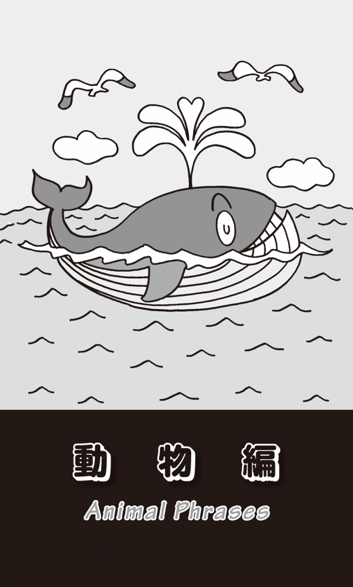
ヤクルトを嚥下する
私のアメリカ人の友人にヤクルト・スワローズの大ファンがいる。日本留学中に、神宮球場の外野席で「東京音頭」を歌いながら応援するファンの姿に魅せられて、いつの間にか自分もその仲間入りをしていたのだという。
彼がヤクルト・スワローズのファンになった理由のひとつは、そのチーム名にある。「チーム名がとてもシャレている」というのだ。swallowは｢ツバメ」のことだが、他に動詞で「飲み込む」という意味もある。「このチーム名を考えた人は、なかなかセンスがある。きっとヤクルトを『飲む』ということも掛けて、ダブル・ミーニングにしたに違いない」というのが、このアメリカ人の推理なのである。
確かに、日本語でも「飲み干す」ことを「嚥下する」とも言う。「嚥」は、口偏に燕（ツバメ）だ。親ツバメがクチバシを大きく開けているヒナの喉の奥に、餌を差し込んで食べさせている映像をよく見る。ヒナは、その餌を咀嚼せずに「飲み込む」。まさにあれが「嚥下」なのではないか。
きっと英語でも、そのような発想で、swallowが名詞の「ツバメ」と動詞の「飲み込む」の両方を意味するようになったに違いない。そう思って、英和辞典をチェックしてみたところ、「飲み込む」がswallo1、「ツバメ」がswallow2となっていて、違う項目になっている。ということは、この2つは全く異なる別の単語だということだ。語源辞典をチェックしてみると、「ツバメ」が古英語でswealweなのに対して、「飲み込む」はswelganとなっている。両方の意味がswallowとなったのは偶然の一致なのだろうか？
さらに、数多くの語源辞典をチェックしてみたが、結論を言うとよくわからなかった。例えば、研究社の『英語語源辞典』では、「飲み込む」の項に「語形上『ツバメ』の意味のswallowの影響も考えられる」との説明があったが、「ツバメ」の項目には「swel-が『飲み込む』を想定する説もあるが疑問」と、1冊の辞書の中で矛盾する記述があった。私は、"英語の迷宮"に入り込んでしまったような気がした。
クレーンは「鶴」だった
最近、「鶴」のcraneが起重機の「クレーン」と同じだということを知り、とても感動してしまった。工事現場などで、クレーンが動いているのを見ると、鶴が長い首を伸ばして前を見たり、餌をついばんでいる姿を連想させる。
友達にこの話をしたら、「そんなこと誰でも知ってるよ」と言われてしまった。でも私はなぜそれを長い間、気づかなかったのだろうか？ いろいろ考えた末に、その理由がわかってきた。いつも英語の校正でお世話になっていたJean Craneさんというアメリカ人がいた。シラキュース大学でジャーナリズムを専攻した本格的なEnglish proofreader（英文校正者）だ。
もちろん彼のラスト・ネームは「鶴」という意味で、それは十分にわかっていた。その人に封書を送る時には封筒に「ジーン・クレイン様」と宛名を書いていた。そして、「鶴田さん」という人を紹介した時には、「この方も『クレイン』なんです。『クレイン・フィールド』です」と説明したことがある。そう、私は彼のことをカタカナ表記で「クレイン」と思っていたのだ。「クレーン」ではなく。それが、これまで「鶴」と「起重機」を別な英語と考えていた理由だった。鶴は「クレイン」、起重機は日本語で「クレーン」とカタカナで書くので、全くの別物だと信じ込んでいたのである。
ちなみに、フランス語では「鶴」はgrueだが、これはやはり「起重機」の意味でも使われる。イタリア語でも「鶴」も「起重機」もgruだ。ドイツ語では、「鶴」がKranich、「起重機」はKranとなる。
カラスを食べる屈辱
カラスも身近な鳥のせいか、いろいろな表現がある。as the crow fliesは「直線距離で」という意味になる。「カラスが飛ぶように真っ直ぐに」ということだ。My house is about 15 miles from the station as the crow flies.「私の家は駅から直線距離で15マイルのところにある」などと使う。童謡「ゆうやけこやけ」のように、真っ直ぐに森の巣に飛んでいく姿が思い浮かぶ。
昔、ジーン・ハックマンとアル・パチーノ主演で"Scarecrow"という映画があった。scarecrowは「カラスを怖がらせる」ということだが、「案山子」とか「こけおどし」「みすぼらしい人」をも意味する。"The Wizard of Oz"（オズの魔法使い）に登場する「案山子」の名前も、このScarecrowだった。
カラスは黒くて不気味な鳥だが、口語でeat crow「カラスを食べる」という気持ち悪い表現もある。「自分の非を認め、甘んじて屈辱を受ける」という意味だ。
19世紀初期、米英戦争の時に実際にあった話だ。この戦争の休戦期間中に、アメリカ人の兵士が猟をしていてうっかりイギリス軍の陣営に迷い込んでしまい、そこで1羽のカラスを撃ち落とした。近くにいたイギリスの将校が銃声を聞きつけてやってきた。アメリカ兵の射撃術を褒めた後、親しげに「その銃をちょっと見せてくれないか」と言った。アメリカ兵が信用して銃を渡すと、イギリス人将校の態度がガラリと変わった。銃を突き付けて「そのカラスの肉を食べろ」と強要したのである。アメリカ兵は最初嫌がっていたが、しぶしぶカラスの肉を食べたのだった。その後で、イギリス将校がアメリカ兵に銃を返すと形勢は逆転した。今度はアメリカ兵が銃を突き付け、イギリス将校に残りのカラスの肉を食べるようにと脅したのだ。
翌日、イギリス将校がアメリカ側に抗議し、アメリカ兵が上官から取り調べを受けその事実を認めた。だから、このエピソードがきちんと記録に残り、eat crowという表現が現在までに伝わることになった。
この表現に関しては、こんな話も残っている。1948年のアメリカ大統領選はハリー・トルーマンとトーマス・ドゥーイの争いだった。全てのマスコミがドゥーイの勝利を予測したが、番狂わせが起こった。実際に勝利したのはトルーマンだったのである。ワシントン・ポストがトルーマンに電報を送った。その内容というのが、"You are hereby invited to a 'Crow Banquet'."「あなたを"カラスの祝宴"にご招待します」というものだった。電報の続きには「パーティには、わが社を初めとする新聞記者、政治評論家、世論調査製作者、ラジオコメンテイターも招待されています」とあった。「トルーマンが負ける」と予想した人たちを集めて、「カラスの肉を食べさせます」、つまり「間違いを認めさせ、屈辱を味わわせます」というジョークだったのである。
「カクテル」はオンドリの尻尾？
昔、名通訳で知られた國広正雄氏の本を読んでいたら、イギリス人に「なぜカクテルはcocktailと言うのか」と聞いたら「よくわからない」と答えたという話が載っていた。cocktailとは「オンドリの尻尾」のことだから、それがなぜ酒のことになったのかきっと不思議だったのだろう。
カクテルは「混合酒」のことだが、その由来を調べていたら、とても多くの説があることがわかった。その中からいくつか紹介してみたい。
まず、その昔アメリカで雑種の馬の尻尾を切り、オンドリの尾のように短くして他の馬と区別したことから、「雑種」→「混血」→「混合酒」と意味が変化したのだという説がある。また、18世紀のニューオーリンズにフランス系のAntoine Peychaudという酒や薬を扱う商人がいた。彼は、いろいろと混ぜ合わせた酒をフランス語でcoquetier（コクチエ）と呼ばれる底の広いカップに入れて出した。この容器が古い英語のcocktay（コクテ）を経てcocktailとなり、それが中身の酒を指すようになったという。
もうひとつは、メキシコのアステカ時代に実在したXockitl（ホックトル）という王妃の名前からきているという説だ。彼女の父親はアルコールと果実酒を混ぜて調合した酒を王様に献上していた。それを王様に届けていたのが、このXockitlだった。王様はその酒だけでなく娘のことも気に入って結婚した。その酒を彼女の名前にちなんで「コクトル」と名付けたのだという。
これもメキシコ由来の説なのだが、19世紀前半にユカタン半島の港町の酒場で、バーテンダーがドリンクを混ぜるのに、木のスティックやスプーンではなく植物の根を使っていた。その植物は「オンドリの尻尾」に形が似ているので、tail of a cockと呼ばれていた。その町に駐留していたイギリス人の水兵が、「それは何か」と尋ねると、バーテンダーは「かき混ぜている植物の根」のことを聞かれたと思ってcock's tailと答えた。水兵がその飲み物を口にするととてもおいしかったので、それ以降、cock's tailという植物の名前がcocktail「混合酒」の意味になって広まったのだという。
小鳥の便り
「噂」は英語でrumorと言うが、「噂では〜と言われている」はThe rumor is that ...というかたちで表現することができる。例えばThe rumor is that he fell in love with her.「噂では、彼は彼女に恋をしたそうだ」などと言える。
同じ意味を「小鳥」を使ってA little bird told me that ...「小鳥が私に言うことには〜」と言うことができる。何と洒落た言い回しではないか。例えばA little bird told me that they divorced.「噂では彼らは離婚したそうだ」と言える。日本語の「風の便りでは」が、英語では「小鳥が言うことには」となるのだ。
アメリカでは、毎年11月の第4木曜がThanksgiving Day「感謝祭」になっている。17世紀にヨーロッパからアメリカ新大陸に渡った清教徒が、移住後初めての収穫を神に感謝したことから始まった祝日だ。その時、アメリカ大陸に数多く棲息していたturkey「七面鳥」を焼いて食べたと言われ、いまでも感謝祭には七面鳥の肉を食べる習わしがある。
そのためか、英語にはturkeyを使った表現が多い。アメリカではsay turkeyで「愛想よく話す」「気持ちのよい話し方をする」ということになるし、walk turkeyは「気取って歩く」「威張って歩く」、つまり「肩で風を切って歩く」という意味だ。
もっと知られているのが、talk turkeyという表現だ。白人とネイティブ・アメリカンが、獲物を2人で平等に分けるという約束で猟にでかけた。その日は、3羽のカラスと2羽の七面鳥を捕まえたのだが、白人がまず"A crow for you, a turkey for me."と言って、カラスをネイティブ・アメリカンに渡し、七面鳥を自分の袋に入れた。次にまたカラスをネイティブ・アメリカンに渡して、七面鳥を自分で取った。その時、ネイティブ・アメリカンが"I will talk turkey."「七面鳥のことを話したい」と言った（take turkey「七面鳥を取る」を間違えてtalk turkeyと言ってしまったという説もある）。このエピソードからtalk turkeyが、仕事について「率直に話す」「現実的に話し合う」という意味になり、今もビジネスの世界で使われているのである。
もうひとつ、ボーリングで3回連続のストライクのことをturkey「ターキー」と言うが、これは昔あるボーリング場が賞品として七面鳥の肉を出したことから、こう言われるようになったのだという。
アヒルのようにduck down!
鳥に関係のある英語表現は他にもたくさんあるが、duck「アヒル」という単語には鮮烈な思い出があり、決して忘れることはできない。duckは動詞では「ひょいと屈む」「頭をひょいっと引っ込める」という意味になる。よくduck downというフレーズで使われる。アヒルが魚などの餌を食べる時に水中に頭を突っ込む姿からの連想らしい。
アメリカ北部のシカゴにはthe Loop「ループ」と呼ばれるビジネスの中心地域がある。そこを取り囲むように高架鉄道が走っていて、サンフランシスコのケーブルカーほどではないが、観光客にも人気の乗り物となっている。
あれはNBA（全米バスケットボール協会）でシカゴ･ブルズが全盛の頃だから、かなり前のことになる。私がその高架鉄道に乗っていると、道を走っている車という車が、いっせいにクラクションを鳴らし始めた。シカゴ・ブルズがNBAファイナルで優勝したからだ。四方八方から聞こえる支離滅裂な大音響は、なかなか鳴り止まない。
その時、車掌のアナウンスが聞こえた。「Duck down! Duck down! 立っている方は、頭を引っ込めてください！ 屈んでください！ 沿線で銃をぶっ放している人がいます！」
この時、かろうじてduck downの意味を知っていたから、その指示に従ったが、もし知らなかったら、私は弾に当たって死んでいたかもしれない......というのはちょっと大げさだが、英語を知っていると知らないで、生死が分かれることがあるのかもしれないと、この時、私は強く思ったのだった。
戦々恐々としながら目的地の駅で降りたが、銃声は聞こえなかった。ただ、相変わらず、クラクションを鳴らした車が、何台も行き交っている。なんと赤信号を無視して突っ走っている車もある。左右6車線の広い道路で、交差点でも左右を十分見渡せるから、安全を確認しながら"信号無視"ができる（？）が、日本だったら絶対に事故になっているだろう。
地元チーム、ブルズの優勝に歓喜していることはわかるが、何てはた迷惑な連中なんだろう、と思った時、私の頭にひとつの英語フレーズが思い浮かんだ。それはbull in a china shopという表現だった。「はた迷惑な乱暴者」「無神経な奴」という意味だ。bullは「雄牛」のことだが、その雄牛がchina shop（陶器の店）に侵入し食器を壊しまくっている様子を髣髴させる。
ここはChicago Bullsのフランチャイズ、まさにはた迷惑なbullたちが「陶器の店」ならぬ「シカゴの街中」で大暴れしている。なぜこんなに乱暴なのだろう。よくよく考えてみたら、bullとは「去勢していない成長した雄牛」のことだったのである。
dog yearの1年
動物の中でも、もっとも人間との関係が深いのが犬であろう。英語でもman's best friendと言われ、ペット、番犬、猟犬などいろいろな役割で人間と関わっている。犬に関する英語の表現を考えると、これまでの人と犬との繋がりや、あるいは人が犬についてどのように考えてきたのかがわかる。
犬といえば、何といっても人間に忠実な動物である。形容詞でdoglikeと言うと「犬のように忠実な」という意味になる。また「長い年月」のことをアメリカではa dog's ageと言い、I haven't seen you in a dog's age.は「ずいぶん久しぶりだね」ということになる。しかし、なぜa dog's ageが「長い間」という意味になったのだろうか？ いろいろ調べてみたがわからなかった。ただ、ある辞書でこのdog's ageの項を引いてみると、「長い間。cf. donkey's ears」と解説されていたのである。この「ロバの耳」という表現も「長い時間」という意味だった。ロバの耳は長い、そのdonkey's earsから同じ発音のdonkey's yearsを連想して、「長い年月」という意味になった、ということなのだが、ほとんど日本の"おやじギャグ"ではないか。
話をdogに戻すと、根拠がはっきりしている表現としてdog yearというIT用語がある。日本語でも1990年代の初めからよく使われるようになった。犬の1年は人間の7年に相当すると言われている。そのことから、技術革新が速く動きの激しいIT業界の、アッという間に過ぎ去る「1年」のことを「ドッグ・イヤー」と言うようになったのである。
犬は惨めな動物なのか？
ここまではいいとしても、やはり犬に関連する英語表現には悪いイメージのものが多い。日本語でも、人のことを軽蔑したり嫌悪したりして「犬」と言うことがある。「あいつは権力の犬に成り下がった」などと言う。英語でもdogには、同じように「奴」「卑劣な男」などという意味がある。形容詞を加えたlazy dogは「ものぐさな奴」、selfish dogは「身勝手な奴」で、そのままの意味なので理解しやすいだろうが、ちょっと意味が取りにくい表現としてはunderdog「敗残者」がある。さらにdead dogは「死んだ犬」から「役に立たない奴」という意味になる。die like a dogで「惨めな死に方をする」「何の役にも立たない死に方をする」という意味になる。日本語にも「犬死に」という表現がある。
dogを使った悪いイメージの言葉は枚挙に暇がない。lead a dog's lifeは「苦労の多い人生を送る」、go to the dogsは「ダメになる」「破滅する」だし、in the doghouseと言えば「面目を失って」「嫌われて」の意味になる。dog-eat-dogという表現もある。これは「共食い」「仲間どうしの食うか食われるかの争い」ということだ。動詞でもdogは「尾行する」という怪しげな意味になる。
hair of the dog「犬の毛」という変わった表現もある。これは狂犬病の治療法からきている。民間療法というか、おまじないのようなものだが、狂犬病にかかった犬に噛まれた時に、その犬の毛を燃やして傷口に置くと治ると言われていた。日本語に訳せば「毒をもって毒を制する」となる。
このhair of the dogが、何と「迎え酒」の意味でも使われる。酒を飲んで二日酔いになっている訳だから、酒でそれを治すというのである。だから昼間から酒を飲むことの言い訳にも、この表現が使われる。I need the hair of the dog for my hangover.「二日酔いには"犬の毛"が必要なんだよ」などと言いながら、まだ明るいうちに酒を飲むのだ。
cats and dogsは「犬猿」の仲
いつか、イギリス人に「どしゃぶりの雨が降っている」という意味で、It's raining cats and dogs.と言ったら、「何でそんな凄い表現を知っているんだ」と驚いていた。「rain cats and dogsは、日本の受験生なら誰でも知っている有名な表現なんだ」と説明したら、「日本の英語教育は、何と進んでいることか」と驚いていた。
犬と猫が喧嘩して大暴れしているイメージから「物凄い音を立てて雨が降っている」という意味になったのだろうが、次に彼の口から飛び出した言葉には、驚きを越えて感動すら覚えてしまった。「これは北欧の神話に由来する表現なんだ」と言うのである。「昔、北欧では猫が雨を降らせ犬が風を起こす力があると信じられていた。そこからきた表現なんだ」
その説は説として、やはり「猫と犬が喧嘩して大騒ぎしている」と考える方が自然ではないだろうか。catとdogを使った表現にfight like cats and dogsというのがある。これは「しょっちゅう喧嘩をする」という意味で、日本語でいえば「犬猿の仲」のことだ。日本語の「犬猿」が英語では「犬猫」になる。
犬は傍観者なのか？
人や物の性格や状態をわかりやすく形容する時に、動物の性質を比喩として使うことがある。as strong as a lion「ライオンのように強い」、as hungry as a bear「熊のように腹ペコ」、as gentle as a lamb「仔羊のように従順な」などが、その例である。それでは犬については、どのような比喩的な表現が使われるのだろうか？ よく言われるのは、as sick as a dog「犬のように気分が悪い」というフレーズだ。「体調が悪い」「意気消沈している」という場合にも使われる。そう言われてみれば、犬にはだるそうに寝そべっているイメージもある。
ギリシャ哲学にcynicism「シニシズム」という言葉がある。「その時々の時流や社会通念を無視して、世の中の動きに直接関わらずに遠巻きに見てあざ笑う」といった「われ関せず」の主義思想だ。その哲学の一派をCynic「キクニ派」「キュニコス派」と言い、犬のように道端にいて、そこの樽の中に住んだといわれるディオゲネスが代表的な哲学者だ。
「シニシズム」という言葉は、フランス語のchien（シェン＝犬）と同じ語源で、日本語でも「犬」に儒教の「儒」と書いて「犬儒主義」と言う。犬が道端に寝そべっていて何もしないように、この学派の哲学者たちも何らかの行動をすることがなかった。そこから「シニシズム」（犬儒主義）と名付けられたのである。
犬のように働く
The Beatlesの初期のヒット曲に"A Hard Day's Night"（John Lennon /Paul McCartney作詞・作曲）という歌がある。ちなみに、日本語のタイトルは「ビートルズがやって来る ヤァ！ヤァ！ヤァ！」と言う。これはビートルズの映画が日本で上映された際に、映画会社の宣伝部にいた水野晴郎（後に映画評論家・映画監督。故人）がつけたタイトルで、それがそのまま同時に発売されたテーマ曲のタイトルにもなったのだというが、今この日本語のタイトルで呼ぶ人は皆無である。
それはともかく、"A Hard Day's Night"の歌詞は"It's been a hard day's night（とてもつらい1日が終わって夜になった）/And I've been working like a dog（犬みたいにハードに働いた）/I should be sleeping like a log（丸太みたいに眠りたい）"となっている。いうまでもなく「犬のように働く」（working like a dog）と「丸太のように眠る」（sleeping like a log）がdogとlogで韻を踏んでいるのだが、古代ギリシャで寝そべっていた犬とは、えらい違いである。
そうなのだ。ビートルズを生んだイギリスは牧羊の国、羊を走って追いかけまわし、人の思う方向に群れを追い込むのはsheepdog「牧羊犬」の仕事だ。イギリスでは犬は「働く」動物なのだ。
犬はこれまで人間の役に立ってきた。ペット犬を"猫かわいがり"して心の支えとしている人も多い。dogを使った英語表現に、もっと肯定的なものがあってもいいのではないかと思い、いろいろ調べてみたら、アメリカの口語でput on the dogという表現を見つけた。「見栄を張って優雅にふるまう」という意味だ。
今では、そのように考える人は少なくなったかもしれないが、昔アメリカ人は自分たちのことを田舎者だと思っていて、ヨーロッパのお金持ちの立ち居振る舞いや習慣を真似ることで、優雅にみせかけようとした。その方法のひとつが、小犬を飼って膝の上に乗せるということだった。She is putting on the dog.と言ったら、「彼女は見栄を張って優雅に振る舞っている」ということになる。
vealとbeer
牛にはいろいろな種類がある。cowという単語が一番よく知られているが、厳密に言えば雌の乳牛のことだ。牛を集合的に言う場合はcattleで、前述のように去勢していない雄の成牛はbullだ。去勢した雄牛はbullock、メスの子牛はheifer、一般的な子牛はcalfだ。このcalfの肉をvealと言う。私もよく海外ではvealを食べる。日本人の友人と一緒にレストランに入って、酒が飲めない私がvealを注文すると、「あれ、お酒飲みましたっけ？」などと聞かれる。ビールは英語でbeerだ。英語で「ヴィール」と言ったら、何か他の意味だと思ってほしいが、日本人にはvとbの違いは難しい。
普通「牛肉」と言えばbeefだ。このbeefを動詞で使ってbeef upとすると「強化する」ということになる。This country beefed up its defenses.「この国は国防力を強化した」などと、よく国際ニュースでも使われる。これは牛にたくさん餌をやって太らせて、おいしい肉にすることから「強化する」という意味になった。
「牛」にはもうひとつoxがある。食用の去勢された雄牛のことだが、水牛や野牛なども含めた牛の総称ともなっている。複数形はoxenとなる。歳がわかってしまうが、昔グループサウンズにOxというグループがあった。「スワンのなみだ」などのヒット曲がある。"Tell Me"という曲を歌うとボーカル兼オルガンの赤松愛が舞台上で失神する。すると、それにつられて会場のファンもどんどん気を失い運び出され、大きな社会問題となった。このグループ名は、TigersやSpidersが複数形なのだからOxenとすべきではないかなどと、子供ながらに友達と大激論を交わしたことがあった。
Pink Ladyも2人いるのだからPink Ladiesではないかと言ったが、これはそういう名前のカクテルなので単数のLadyでいいと言われ納得した。
「牛の相場」と「熊の相場」
話を牛に戻すと、野球場で控えのピッチャーが投球練習をする場所をbullpenと言う。penとは家畜などを入れておく「囲い」のことだ。昔は、遅れて野球場にやってきた観客をロープを張った囲いの中の立見席に入れたのだが、それをbullpen「牛の囲い」と呼んだ。その後、そのbullpenが、救援予定の投手が肩を慣らす場所になったのだという。
やはりbullには「強い」というイメージがある。金融・経済用語でも、「強気の相場」「上げ相場」のことをbull marketと言う。これは牛が「角を突き上げて戦う様子」から来ている。
これに対して、「弱気の相場」「下げ相場」はbear marketだ。熊もとても強くて獰猛な動物だと思うのだが、なぜ「弱気」なのだろうか？ 経済の動きを表すグラフを見ると、急激に右肩下がりになっていることがある。これを熊の腕が振り下ろされる動きにたとえたのだ。株式市場が「弱気な」ことをbearishと言うが、これもbearからきた形容詞だ。
ちなみに、「経済の停滞」「不況」という意味では、他にsluggish market、sluggish economyがある。slugとは「ナメクジ」のことだ。sluggishとは「ナメクジのように動きがのろい」ということから、「怠惰な」「ものぐさな」ともなる。
同じく動きののろい小動物というとsnail「カタツムリ」だ。私はbusiness mailを書く時に、しばしばこのsnailを使う。emailではなく郵便を送ると言いたい場合、mailと書いてしまうと、相手はEメールだと勘違いしてしまうかもしれない。そんな時に、I will snail mail you.とすると、「ああ、Eメールではなく郵便を送ってくるんだな」とわかってもらえる。最近ではsnail mailの代わりにsmailやs-mailを使うこともある。もちろんemailに対してのsmailだ。
馬の口から直接...
英語ニュースを見ていたら、経済ニュースの中で突然アナウンサーが"Straight from the horse's mouth ..."「馬の口から直接〜」と言った。何で「馬」が経済に関する話題に登場するのだろうと思って調べてみたら、これは「確かな筋からの情報では」「消息筋からの情報では」ということであるのがわかった。「情報源（ソース）は明かせないが、このことを身近でよく知る人からもたらされた情報である」ということで、ニュースでは頻繁に使われているフレーズだ。
テレビ局や新聞社、通信社は、重要な出来事に関する正確な情報を喉から手が出るほど欲しいが、もし誰がそれを言ったかわかってしまったら、誰も取材に応じてくれなくなるだろう。記者に正直に話してくれなくなるのだ。そのような情報源と取材記者との信頼関係の中でニュースは作られ流される。よく裁判などで取材者が情報源を明らかにすることを求められるが、決して明かしてはならないというのが、マスコミの厳しいルールとなっている。
ところで、なぜstraight from the horse's mouthが「確かな筋からの情報では」という意味になるのだろうか？ これは昔、馬の売買をしていた頃、売り主は少しでも高く売ろうと馬の年齢を少なめに言うことが多かった。しかし、ベテランの買い主が実際に馬のところに行って、口を開けて下顎の歯をチェックすれば、その馬の歳はもちろん、健康状態まで「正確な」ことがわかったということに由来している。
これは私の想像なのだが、競馬情報が「馬の口から出た」ということからきているのではないかとも思う。競馬に出走する馬の調子を外部に漏らした関係者が、「いや、それは馬が話したんじゃないか？」などと言ってごまかすようなことは、決してありえないことではない。
look a gift horse in the mouthという表現もある。「贈り物のあら探しをする」という意味だ。これも、やはり贈られた馬の歯の状態をチェックして、歳や健康状態を確認したことからきている。プレゼントなのだから値踏みなどせずに、気持ちよく受け取ればいいと私は思うが。
馬の色
どうも馬にまつわる表現には、ごまかしたりごまかされたりという表現が多い。horse of a different color「違う色の馬」も馬の売買から生まれた言葉で、生まれた時と売買の時点で馬の色が違うということだ。若く精悍で健康に見せるために、売り主が馬体を染めたのである。だから「全く別の物」という意味になる。例えばWriting a script is not that hard, but publishing it is a horse of a different color.「原稿を書くのはそれほど大変ではないが、その本を出版するとなると、それはまるっきり別の話だ」などと言うことができる。
put the cart before the horseという表現もある。「馬の前に馬車をつける」とは、「物事を進める時の順番を間違える」ということだ。You are putting the cart before the horse. You should marry first and then have a baby.「順序があべこべだ。先に結婚してから子供を産むべきだ」などと、保守的な人なら言うだろう。
もうひとつ、「順番が逆だ」という表現にlock the stable door after the horse has goneがある。goneではなくbolted「飛び出した」と言うことも多い。「馬が逃げてしまった後で、馬屋のドアのカギを閉める」ということで、「後の祭り」といった意味合いでもよく使われる。
ちょっと蛇足になるが、よく入試などにも出題されるのが、ここで使われているstableだ。「馬屋」という意味だが、形容詞で「安定した」という意味でも使われるので注意が必要だ。ちなみに「牛舎」はcowshedである。このshedは小屋や物置のことで、「自転車置場」はbicycle shedと言う。豚小屋はstyやpigpenとなる。penは「家畜などを入れる小さな檻」のことで、先ほど説明したbullpen「ブルペン」にもこの単語が使われている。
川の途中で馬を代えるな
change horses in midstream、あるいはswap horses while crossing a streamという表現もおもしろい。midstreamとは「流れの中ほど」、swapは「取り代える」「交換する」という意味で、「川の流れの中ほどで馬を代える」とは「途中で急に方針を変える」ことだ。これは1864年に第16代大統領Abraham Lincolnが行った演説からきている。共和党内の大統領指名争いに勝利したリンカーンであったが、党内部にも南北戦争における彼の政策に不満を持つ者が少なくなかった。そんな時に"It was not best to swap horses while crossing the river."「川を渡っている時に馬を代えるのは最善ではない」と述べて、一致団結して民主党の大統領候補と戦おうと促したのである。
hold one's horsesは「手綱を締めて馬を落ち着かせる」ということで、「はやる気持ちを抑える」という意味になる。「あせらないで」と言いたい時には、人間であってもHold your horses!と言える。
馬に乗ると頭の位置はかなり高くなる。なんだか世の中を見下ろしているような気分がして、自分が偉くなったような錯覚に陥る。そのせいかget on one's high horse「高い馬に乗る」は「傲慢な態度をとる」「高飛車に出る」ということになる。反対はget off one's high horse「高い馬から降りる」で、これは「謙虚になる」「傲慢な態度を改める」を意味する。
2012年のスピルバーグの映画に"Warhorse"いう作品があった。もちろん戦争で使われた「軍馬」のことだが、人間にたとえると兵隊なら「古参兵」「歴戦のつわもの」、スポーツ選手なら「ベテラン」という意味になる。老いてもまだまだ元気で大活躍しているような人のことを言う。
warhorseには、もうひとつ別の意味がある。それは音楽やテレビ番組、映画、演劇などの「定番」「マンネリの作品」のことだ。だが、これは決して「退屈でつまらない」という意味ではない。例えば、シェイクスピアの「ロメオとジュリエット」や日本の「忠臣蔵」などのように、何度もリメイクされる作品のことをいう。たとえストーリーを知っていても、おもしろいからこそ、新しい脚本、監督、俳優で制作されるのである。
白い象は「無用の長物」
これまで「鳥」「犬」「牛馬」と、動物にまつわる表現を紹介してきたが、もっと巨大な動物について書いてみたい。
まずは「象」についてだ。see the elephant「象を見る」で「壮絶な体験をする」ということになる。私は動物園の象しか見たことはないが、確かに野生の象を目の前で見るというのは、決して忘れられない凄い体験だろう。この表現は「厳しい教訓を学ぶ」「世間の厳しさを知る」「人生経験を積む」という意味で、特に新兵が初めて戦場に行った時のような「凄まじい経験をする」ことを指す。
a memory like an elephantも、象という動物の特徴をよく表現している。「象のように非常によい記憶力」ということだ。象は60年以上生きると言われている。旱魃になった時、若い象だけの群れは全員が死に絶えてしまったのに、年老いた象のいた群れは、その長老がはるか遠くの水場を覚えていたため生き延びることができた、というような話が数多く伝わっている。また、これも有名な話だが、サーカスの象が、子供の頃に自分をひどい目に遭わせた人間を覚えていて、大人になって仕返しをしたという。だからなのだろう、オーストラリアのアルツハイマー協会は、「いつまでも記憶を保てるように」という願いを込めて象をシンボルとしている。
white elephantという表現もある。「白い象」とは「高価だが厄介な持ち物」のことだ。今のタイがシャムと言われていた頃、王様が気に食わない家来に「白い象」を与えて追い出したという話からきている。白い象はいわば慰労金のようなものかと思ったが、そうではなかった。白い象は神聖視されていたために、丁重に扱わざるをえず、世話にとてもお金がかかったために所有者は破産したというのだ。
別の説では、野生の白い象は目立つために、敵やハンターに狙われやすい。そのためになかなか生をまっとうできず、仲間にも迷惑をかける。だから「無用の長物」という意味にもなる。The vacation house has turned out to be a white elephant.と言ったら、「別荘は無用の長物であることがわかった」という意味だ。バブルの頃に勢いに乗って別荘を買ったはいいが、今ではほとんど行くことがない。中古別荘の価格も驚くほど下がっているので、売ろうにも売れないという人もきっといることだろう。
鯨の時間
「鯨」を使った表現にはa whale of a timeがある。「素晴らしい時間」という意味だ。確かに鯨を見るということは、素晴らしく感動的な体験だろう。だからI had a whale of a time.と言ったら、「私は素晴らしい時間を過ごした」という意味になる。
私は、アメリカのサンディエゴでwhale-watching boatに乗ったことがある。「もし鯨が見えなかったら、お金を返す」という書類を渡されて船に乗り海に出ると、突然"Three o'clock!"というアナウンスがあった。船首を時計の12時として、「3時の方向」に鯨が見えるということだ。白い波が立っているようには思えたが、遠すぎてよくわからない。
ビデオカメラのズームを最大に拡大して、自分の目と心に焼きつけ映像にもおさめようとした。"Ten o'clock!" "Seven o'clock!"などとアナウンスがあるたびにレンズの方向を変えるが、はるか遠くで微かに白い潮が吹き上がり、その後で黒い尻尾がちょこっと見えるだけだった。そのうちに船酔いがひどくなってしまい、撮影をあきらめざるをえなかった。船から降りてもしばらく気分が悪かった。これが私のa whale of a timeで、「素晴らしい」どころか「最悪の時間」だったのである。このような体験をしているからだろうか、このa whale of a timeというフレーズを見るだけで、今でも気持ちが悪くなる。
後から聞いたのだが、船は鯨から50ｍ以上離れなくてはいけないという決まりがあったのだ。鯨の方で"気をつかって"くれてボートに近づいてくるのなら問題ないのだという。よくテレビで、鯨が船に寄り添い潮を吹き上げて乗船客にかかるという映像を見るが、これは例外的な出来事だったようだ。
「猿でもわかる」を英語で
monkeyという単語でまず思い出されるのが、名翻訳家として著名な柴田元幸・東京大学元教授が編者になって発行した"monkey business"という文芸雑誌だ。タイトルを訳すと「猿の仕事」ということだが、これは「いんちき」「いかさま」という意味である。
「猿でもわかる〜」というタイトルの本もたくさん発行されている。英語では、これをどのように言うのかと思い、いろいろ調べてみたら、研究社の『新英和大辞典』には「猿でもわかる経済学」が"Economics even a mug can understand"と紹介されていた。mugとは、ビールを飲む時などに使う「取っ手のついたジョッキ」のことだが、「まぬけ」「だまされやすいやつ」という意味もある。
If you pay peanuts, you get monkeys.という表現もある。peanutsとは「わずかな金額」「はした金」ということだ。経営者が「わずかな給料しか払わないなら、猿しか雇えない」ということで、日本語にも「安かろう、悪かろう」という言葉がある。
まだまだある。monkey withは「改竄する」という意味になる。また、猿は道化をする動物でもあるので、人を「笑いものにする」「バカにする」という意味のmake a monkey (out) ofがある。make a fool ofと同じような意味だ。
イギリス英語で、brass-monkey weatherという表現がある。「真鍮の猿の天気」ということだが、「もの凄く寒い天気」のことを指す。これはcold enough to freeze the balls off a brass monkey「凄く寒いので、真鍮の猿（の像）から睾丸が凍って落ちてしまう」という卑猥で下品な表現からきていると言われている。だが、他にもこんな説がある。
大航海時代のこと、船には他国船や海賊との戦闘に備えて大砲が据えつけられていた。その傍らには、すぐに装填できるように、たくさんのcannonball「砲弾」がラックに並べられていた。ラックの端には真鍮製の2本のレールがあり、船が揺れても砲弾が外に出ないようになっていた。このラックのことをbrass monkeyと呼んだのである。天気が良ければ問題ないのだが、海が荒れて船が大揺れしたり、寒くて真鍮のレールが縮んだりすると、このbrass monkeyから砲弾がこぼれ落ちることになる。これがcold enough to freeze the balls off a brass monkeyというフレーズの由来だとされている。「凍るほど寒いので、ラックが縮んで砲弾が落ちる」ということだ。だが、よく考えてみると、どんなに寒さが厳しくても、真鍮がそんなに簡単に縮むのだろうか？
monkeyには「麻薬」という意味もある。もちろん俗語だが、have a monkey on one's back「猿が人の背中にいる」という表現がある。「困った癖がついてしまった」「面倒なことになった」という意味だが、これは主に「麻薬中毒になっている」ということで、get the monkey off「猿を降ろす」となると「麻薬をやめる」という意味になる。
猿は他にも「厄介なもの」というニュアンスもあり、アメリカの俗語でmonkey on the house「家の中の猿」は「家のローン」のことだ。特にmonkey with a long tail「長い尻尾の猿」といったら、「返済期間の長いローン」のことになる。
「猿の結婚式」と「狐の嫁入り」
先ほど、brass-monkey weather「もの凄い寒さ」という下品な言葉を紹介したが、もうひとつ南アフリカで使われるmonkey wedding「猿の結婚式」という天候に関する表現がある。これは「晴天の時に降る雨」、つまり「天気雨」のことだ。
日本にも「狐の嫁入り」という言葉があり、普通は「夜、山野に出現する不思議な火の玉」のことを言う。それを「狐が嫁入りする際の提灯の行列」と考えたことから生まれた言葉だ。「狐火」と呼ばれ、実際には燐化水素が自然発火する現象なのだそうだ。
だが実は、「狐の嫁入り」はもともと「日が照っているのに雨の降る天気」のことだった。それなら、何とmonkey weddingと同じではないか。だから、1日の中で「日が照ったり、雨が降ったり」という天候を「狐日和」と言ったりもする。
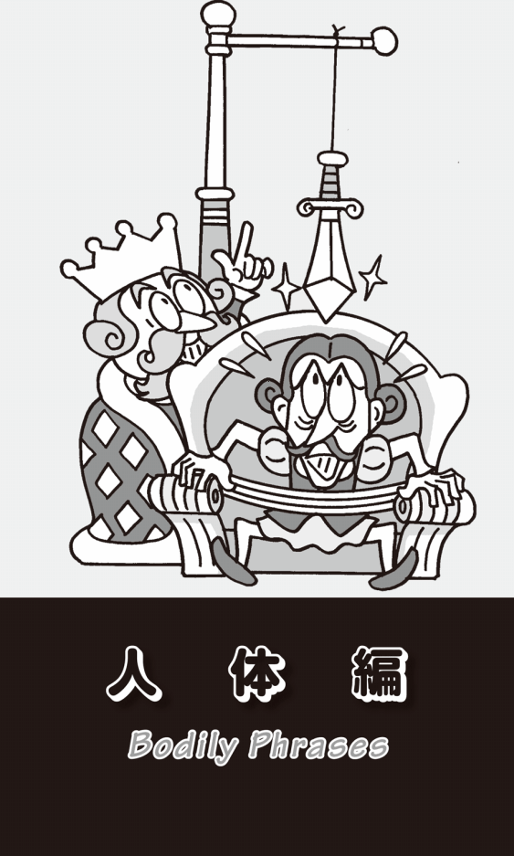
「内臓」と「根性」
「内臓」のことは通常、英語でinternal organsと言うが、口語ではgutsという単語が使われる。「ガット」という言葉で一番身近な日本語は、バイオリンの弦やテニスラケットに張ってあるコードのことだろう。ギターにもガットギターというのがある。これは、もともとバイオリンが動物の腸を取り出して「弦」にしていたことからできた単語だ。ちょっと詳しく説明すると、腸の粘膜には消化液を出す細い管状の「腸線」と呼ばれる分泌腺があるが、それが弦になったのである。
hate someone's gutsという表現もある。「誰かの内臓を嫌う」という意味で、「人のことを心から嫌悪している」ことを言う。日本語でも「坊主憎けりゃ袈裟まで憎い」と言うが、その人の持ち物まで嫌いになってしまうことだ。
これ以外にgutという単語には、「根性」「勇気」という意味もある。日本語でも「彼にはガッツがある」などと言い、He has guts.と言ったら、英語でも同じ意味になるし、He has the guts to take that risk.なら、「彼には危険を冒す勇気がある」となる。また、gutには「本能」という意味もあり、「直観」という意味でgut feelingなどと言う。脳で理論的に考えるのではなく、身体の芯（内臓）で感じる感覚のことなのだ。
ちなみに「ガッツ・ポーズ」という言葉があるが、これはご存じの方も多いと思うが、Japanese Englishだ。昔、ボクサーのガッツ石松が勝利して、世界チャンピオンになった時、リング上で「俺は強い」とばかりに拳を握り両腕を突き上げたことから、そう呼ばれるようになった。この「ガッツ・ポーズする」をあえて英語で表現すると、raise his fists in triumphなどとなる。fistとは「拳」のことだから、直訳すれば「勝って両方の拳を突き上げる」ということになる。あるいは、thrust his fists in the air「拳を空中に突き出す」と言ってもいいだろう。
腕と脚の値段
身体というのは、人にとってもっとも大切なものである。そんなことからかcost an arm and a legという表現がある。「腕と脚くらいの価格がある」とは、「ばか高い」「法外な大金がかかる」ということである。College tuition cost me an arm and a leg.「大学の授業料はとても高かった」などと言うことができる。
同じような意味で、give one's right arm to ...「右腕を犠牲にしても〜する」がある。「〜するためには、大きな犠牲もいとわない」というニュアンスだ。ほとんどの人が右利きであり、その大切な右手を犠牲にしても、何かをやり遂げたいという強い願望を表す表現だ。
out on a limbで「危険な状況で」を意味する。go out on a limbで「危険を冒す」ということになり、I don't want to go out on a limb.で「私は危険なことはしたくない」となる。tear one limb from limbが「手脚を裂く」ということで、「八つ裂きにする」つまり「人を激しく攻撃する」という意味なので、私はこのout on a limbのlimbも「手脚」のことだと思っていた。自分の手脚の届く範囲で物事を進めていれば問題ないが、その範囲外に出ると自分では処理できない困難で危険なことが起こるかもしれないということだと理解していたのである。
しかし、この場合のlimbは「手脚」のことではなく、「木の枝」のことだった。木に登って、その木から伸びている「枝」の外に出ると、下に落ちてしまうから危ないということなのである。
ところが、risk life and limbという言い方もあって、この場合のlimbは「手脚」のことになる。「大きな危険を冒す」という意味だが、読んで字のごとく「命や手脚をかけるほど危険なことをする」ということだ。
「手を貸す」はlend a hand
hand「手」にまつわる英語表現には、日本語と同じ発想のものが多い。例えばトランプの持ち札やマージャンの配牌のことを「手」と言う。「今日はついていない。なかなかいい手が来ない」などと嘆くことがある。その「手」は英語でもhandである。I was guessing he had a good hand.「私は彼が良い持ち札を持っていると思った」などと言う。また自分の「手の内」のこともhandで、I don't trust Bill. I never show him my hand.「ビルは信用できない。私は決して彼に手の内を見せない」と言ったりする。
日本語になっているhandを使った言葉で、一番身近なのはsecondhandかもしれない。よく「セコハン」と略して言う。英語では「中古の」「お古の」という形容詞で、secondhand clothes「古着」とかsecondhand book「古本」などと言う。
このsecondhandは、文字通りに解釈すると「第2の手」ということだが、「間接的な」という意味もあって、secondhand smokeで「間接喫煙の煙」ということになる。「非喫煙者が吸い込む他の人が吸うタバコの煙」のことだ。最近では、この間接喫煙の害が声高に叫ばれるようになった。
日本語でも人を助ける場合に「手を貸す」というが、英語でもlend a handあるいはgive one a handと表現する。have clean handsは「きれいな手を持っている」、つまり「犯罪や不道徳なことをしていない」「清廉潔白だ」ということだ。get one's hands dirtyとなると「手を汚す」、つまり「違法行為をする」「品位を汚すようなことをする」を意味する。しかし、この表現は全く逆に正しい行為を表すこともある。「手が汚れることも厭わず一生懸命に働く」ということにもなるのだ。
日本語では、悪事に手を染めるのをやめたり、ある世界から抜け出すことを「足を洗う」と言う。これが英語ではwash one's hands「手を洗う」となる（もちろん本当に「手を洗う」や「トイレに行く」という意味もある）。だからHe washed his hands of politics and became a professor.と言ったら、「彼は政治から足を洗って教授になった」ということになる。
これも日本語だが、「たくさん仕事があって忙しい」ことを「手が一杯だ」と言うことがある。英語でもhave one's hands fullとなる。I have my hands full with the new project now.「私は今新しいプロジェクトで手一杯だ」などと言う。My hands are full.「私の両手は一杯だ」も「私は手一杯だ」ということだ。
free hand「フリーハンド」も、最近は「自由裁量権」という意味で日本語になっているが、反対に「行動を規制する」「自由を奪う」ことをtie someone's handsと言う。もちろん「両手を縛る」ことで、The new rule tied their hands.「新しい決まりが彼らの自由を奪った」などと言う。さらに「人のコントロールができないこと」をout of controlと言うが、これも「手」を使ってout of handと表現することもできる。
日本でもよく使うスローガンにhand in hand「手に手を取って」がある。多くの人に協力や連帯を呼びかける時の合言葉だ。また、offhandという言葉もビジネス・シーンで使われるようになっている。「即座に」「用意なしに」ということだ。
このようにhand「手」にまつわるフレーズは、とっても多い。これは人の体で手が一番使われるからなのかもしれない。
「親指」はfingerではない
次は「指」についての英語である。日本語では手には5本の指があると考えるが、英語の発想では特別な場合を除いてthumb「親指」が1本で、それ以外の4本がfingersなのである。
thumbにまつわる表現にはいろいろあるが、まずgreen thumb「緑の親指」という有名なものを紹介しよう。have a green thumb「緑の親指を持っている」で、「植物を育てるのが上手な人」「園芸の才のある人」ということになる。いつも緑色の植物に触れているので、親指が緑になったという、ちょっと大げさな表現だ。
all thumbsという表現もお馴染みだ。「不器用な」という意味で、これは普通clumsyという形容詞を使うが、口語ではI'm all thumbs.で「私は不器用だ」と表現することもできる。確かに指が全て親指のように短く太かったら、細かな作業はできないだろう。
ちなみにデンマークの童話作家、アンデルセンが書いた話に「親指姫」がある。英語のタイトルではThumbelinaとなる。thumbはもちろん「親指」、belinaは日本語でいえば「〜ちゃん」という親しみを込めた呼び方だ。だからThumbelinaは「親指ちゃん」とか「親指っ子」ということになる。
thumbs up /thumbs downという表現も興味深い。古代ギリシャの円形競技場で、グラディエーター（剣闘士）どうしが戦いを繰り広げた。負けた方は殺されることになるのだが、もし観客が敗者が勇敢に戦ったと認めた場合には、4本の指を閉じて親指を上に上げる。そうすると命が助かったのだ。反対に下に向けた場合には殺された。故にthumb upは「承認」、thumb downが「否決」という意味になった。映画や演劇などが「評価」された時にもthumbs upだし、「酷評」された場合にはthumbs downとなる。
この表現はビジネスの現場でもよく使われ、例えばThis project plan got the thumbs up.なら「このプロジェクト計画は承認された」となる。反対にOur proposal got the thumbs down.と言ったら、「我々の提案は否決された」である。もちろん、先ほどのグラディエーターの話にもあったように、turn /put one's thumb up「親指を上に向ける」で「承認する」「賛成する」、turn /put one's thumb down「親指を下に向ける」で「拒否する」「反対する」ということになる。
そういえば、ヒッチハイクする時も、親指を上に向けて運転手に示すのが万国共通の合図となっている。thumb a rideで「ヒッチハイクをする」ということになる。この場合には、自分の行きたい方向に親指を向けるのがルールだという。
中指の想い出
「人差し指」はforefingerと言う。もうひとつ「人差し指」に相当する英語にはindex fingerがある。indexはラテン語のindicareからきた単語で、これはpoint out「指し示す」を意味する。ということは、日本語の「人差し指」と同じ発想ではないか。
「中指」はmiddle fingerとなるが、この中指については、私自身とても嫌な記憶がある。それはニューヨークに向かう飛行機の中で起こった。離陸して水平飛行に移ると、まずフライトアテンダントから手を拭くための熱いおしぼりが配られる。今ではちょっと濡れた消毒用のペーパータオルが多いが、以前は熱いタオルだった。このおしぼりを返す時、あなたはどのように持って差し出すだろうか？ 私は常に相手の立場に立って行動することをモットーとしているので、クルクルと巻いて棒状にして返すようにしている。その方が、フライトアテンダントが受け取りやすいからだ。だがその際、手前の方を握ると、先っぽ、つまりフライトアテンダントが受け取る側がだらりと下を向いてしまう。これでは、相手はうまく受け取ることはできない。そのために、棒状のおしぼりの手前側を握り、人差し指で支えて渡そうと思ったのだが、人差し指は短く、どうも安定感がない。
そのために、おしぼりを中指で支えて、他の指で端を握って渡したのだが、女性のフライトアテンダントがそれを取った瞬間、中指だけが伸び、それ以外の指が閉じられている状態になった。ご存じの方も多いだろうが、中指を立てると、とても卑猥なサインになる。決して人前でやってはいけないしぐさだ。フライトアテンダントの顔には、明らかに怒りの表情が浮かんだ。
それからが大変だった。飲み物や食事のたびに私は順番を抜かされたのだ。「何を飲むか」とか「beefにするか、chickenにするか」とか尋ねてももらえず、完全に無視された。私を抜かして、次の人に食事を出している時に、"I didn't receive the meal!"と言うと、その時に初めて気づいたようなふりをして、必ず遅れて食事をサーブするのだった。
何度かそんなことを繰り返していたのだが、人間とは学ぶものである。そのフライトアテンダントが隣の席の人に"Beef or chicken?"と聞いた瞬間に、私も同時に"Chicken!"と答えるようにしたので、仕方なしにといったふうに食事を出してくれた。しかし、なんという子供じみた嫌がらせだろうか？
フライトアテンダントがおしぼりを受け取りやすいように考えた思いやりが、とんでもないことになってしまった。これが私の最悪の「中指の想い出」である。それ以来、この航空会社の飛行機には一度も乗ったことがない。
結婚指輪は右手の薬指に
「薬指」はring fingerとかwedding fingerと呼ぶこともある。これはもちろん結婚指輪をはめる指だからだ。ふつう左の薬指にはめる。心臓が左にあるので、「一生愛し続ける」という「心」の象徴である結婚指輪も心臓から近い左手の薬指にするのだ。また、左手の薬指から心臓にかけて非常に繊細な神経が走っているからだとか、"愛の血管"と呼ばれる血管が通っているからだという説もある。
だが、フランスやドイツなどのヨーロッパでは、wedding ring「結婚指輪」は、左手ではなく右手の薬指にはめるということをご存じだろうか？ 遠藤周作のフランスを舞台にした小説に「結婚指輪を右手の薬指にはめた」という描写が出てくる。ドイツ人と結婚したアメリカ人にこれを確認してみると、「そうなんだよ。だから僕はドイツに行く時に、飛行機の中で指輪を左から右手の薬指にはめ直すんだ」と言っていた。それは、意外と多くの日本人には知られていない。
話を指に戻すと、最後の「小指」はlittle fingerだ。スコットランドやアメリカ、カナダでは、口語でpinkie、あるいはlittle pinkieとも言う。これはオランダ語で「小指」を意味するpinkからきているのだという。
長い顔は「浮かぬ顔」
顔にまつわる表現もおもしろい。long faceで「浮かない顔」「不機嫌な顔」となる。「あごが伸びて長くなった顔」のことだが、なぜそれが「浮かない顔」になるのか、日本人的な感覚からすると、わかるようなわからないような微妙な表現だ。have a long faceで「浮かない顔をしている」となる。
faceも先ほどのhandと同じように、日本語に似通った表現が多い。lose face「顔を失う」とは「面目をなくす」「体面を失う」という意味で、反対にsave faceは「体面を保つ」ということだ。
日本語でも「あの人には裏表がある」とか「二面性がある」などと言う。ちょっと古い日本語なら「二心のある」という表現もある。これは英語ではtwo-facedと言い、「偽善的な」という意味もある。
ちなみに「偽善的な」はhypocriticalとも言う。「偽善者」はhypocrite、「偽善」はhypocrisyである。これはもともとギリシャ語で「計算ずくの行為」という意味だ。よく古代ギリシャの医者、ヒポクラテスからきているといわれているが、実際はギリシャ語で「演技」を意味するhypokrisisや「俳優」の意味のhypokritesに由来するという。
それで思い出したが、ローマ神話にはJanus「ヤヌス」という2つの顔を持った神様が登場する。ひとつの顔が前を向き、もうひとつが後ろを向いている「二面神」「双面神」で、「物事の始めと終わりをつかさどる」神とされていた。顔が前と後ろを向いているということで、時間的に過去を振り返り将来に思いを馳せることも象徴している。1年のうちで、過去と将来をじっくり考えるのはいつかというと、それは正月なのである。そう、1月のJanuaryはこのJanus「二面神」からきているのだ。
「心」を食べる
ご存じのように、heartには「心臓」と「心」という意味がある。from the bottom of my heartはそのまま日本語にすれば意味が取れる。「心の底から」という意味だ。I appreciate your concern from the bottom of my heart.「ご心配いただき、心の底から感謝しています」などと言う。
at heartは「心は」「心の中では」ということで、I am young at heart.「私は気持ちは若いんです」などとも言うことができる。もちろん「老いた外見とは違って......」というニュアンスだ。
「暗記する」は普通memorizeだが、heartを使ってlearn ... by heartで「〜を暗記する」、know ... by heartで「〜を暗記している」という意味になる。ちなみに「暗唱する」はreciteだが、say by heartとも言う。
これは「洒落た表現」か「恐怖表現」の項で紹介するべきだったのかもしれないが、my heart is in my mouthあるいはhave my heart in my mouthという表現がある。恐怖や心配で「心臓が口まで上がってきた」ということだ。日本語でも、緊張している時に「心臓が口から飛び出しそうだ」などと言うが、英語の場合は「非常に心配している」「怖がっている」ということで、例えばMy heart was in my mouth as I watched the plane rapidly descending.「飛行機が急激に落ちていくのを見て、とても怖かった」などと言うことができる。
日本語でも、びっくりした時に「一瞬、心臓が止まるかと思った」などと言うが、英語でもone's heart skips a beatという表現がある。skipは日本語にもなっていて「スキップする」と言う。「抜かす」「飛ばす」という意味だ。My heart skipped a beat when I heard the news.「そのニュースを聞いた時、私の心臓の鼓動は一瞬止まった」などと言う。
先日、イギリス人から「子供の時にやってみたかったことは何だった？」と聞かれた。私の子供の頃は日本はとても貧しかった。私と同世代の人とは、よく「バナナなんて、葬式の時以外には食べられなかった」などと思い出話をする。それを思い出して、「バナナをお腹一杯食べてみたかった」という意味で、I wanted to eat bananas to my heart's content.と答えた。「お腹一杯食べる」は一番常識的なeat as much as I wantをはじめ、eat until my stomach bursts「胃が裂けるまで食べる」とか、eat my fill「一杯食べる」、have plenty of ...「〜を十分に食べる」などいろいろな表現があるが、その時の私の気持ちでは「心ゆくまで」というto my heart's contentが一番しっくりきたのだ。この表現は「何かを思う存分にやってみたい」と言いたい時に、とても便利な表現なので、ぜひ覚えてほしい。I want to study English to my heart's content.なら「心ゆくまで英語を勉強したい」ということだ。
eat one's heart outという表現がある。これには「悲しんでくよくよする」と「うらやましがる」という2つの意味がある。My son is eating his heart out over his lost dog.は「息子は犬がいなくなったので、すっかりしょげている」という意味だ。
また、命令形でEat your heart out !とすると、「悔しいだろう」「ざまあみろ」となる。これはshow businessの世界でよく使われ、売れない芸能人が大スターに向けて、悔し紛れに自分のパフォーマンスの素晴らしさを自画自賛する時の表現だ。例えば無名の歌手が、Eat your heart out, Michael Jackson!「ざまあみろ、マイケル・ジャクソンも真っ青だろう」などと言って観客を笑わせたりする。
「黄金の心」と「石の心」
これもまた日本語と同じだが、heavy heartは「重い心」、light heartは「軽い心」となる。I went home from the funeral with a heavy heart.「私は重い心で葬式から家に戻った」とは、「とても悲しい気持だった」ということだ。
my sweetheartと言ったら、「私の愛おしい人」ということだが、sweetheart deal、あるいはsweetheart contractという表現がある。文字通り訳せば「恋人の契約」となるが、決して「愛人契約」のことではない。労働組合と会社が馴れ合って、どちらかに「甘い労働協約」を結ぶことを言うのだ。
heart of goldという素敵な表現もある。「黄金の心」とは「思いやりのある優しい心」のことだ。ニール・ヤングが作詞・作曲して歌った「孤独の旅路」という曲がある。1972年に発表されて全米ヒットチャートの1位になった有名な歌だが、その原題が"Heart of Gold"だ。メロディーを聞けば誰でも「ああ、あの曲か」とすぐにわかる。歌詞は、miner（金を掘り起こす坑夫）が「私はheart of gold（優しい心）を求めて旅している」という内容になっている。miner（坑夫）とgold（金）をかけているのだ。この歌を聞くたびに、よく日本語のタイトルを「黄金の心」としなかったなと思う。日本語タイトルの「孤独の旅路」の方が、詩と曲の内容にぴったりだからだ。
正反対の表現に、heart of stone「石の心」がある。「冷たい心」「非情の心」のことだ。これは旧約聖書のEzekiel（エゼキエル書）の"I will remove your heart of stone and give you a heart of flesh."「私はお前たちの体から石の心を取り除き、肉の心を与える」という一節から生まれた表現である。
heartには、もうひとつ「中心」「真ん中」という意味がある。例えばMy office is in the heart of Tokyo.「私の会社は東京の中心にある」と言う。だから「中心」と「心」をかけることも可能になり、例えばThe Heart of Siberiaと銘打つツアーがあったら、「シベリアの中心部を訪れる」と「シベリアの心に触れる」という両方のニュアンスが感じられる。何と魅力的な旅ではないか？
さらにheartには「核心」という意味もあり、the heart of the problemで「問題の核心」となる。この使い方を知っていれば、The detective got to the heart of the mystery.「探偵は謎の核心にたどりついた」などという文章も理解できる。
英語でも「口にチャック」
loudmouthは「大きな声でしゃべる人」という意味だ。He is a loudmouth.と言ったら「彼はおしゃべりだ」「（秘密が守れない）口の軽い人だ」ということになる。
反対に、「黙っている」はkeep one's mouth shut「口を閉じている」と言う。おもしろいのは、日本でも口にチャックをするしぐさをするが、英語にもzip one's lips「自分の唇にジッパー（チャック）をする」という表現があることだ。また、余計なことをうっかり言わないように「自分の唇を噛む」ことはbite one's lipとなる。「舌を噛んで」言わないようにするなら、bite one's tongueだ。
「馬耳東風」を英語で
これもちょっと大げさな表現だが、「私はあなたの言うことを一生懸命に聞いていますよ」と言いたい時に、I am all ears.「私は全て耳だ」と言うことがある。これに似た表現にI am all yours.があるが、これは「私はすべてあなたの思いのままです」「あなたの言うことは何でも聞きます」という意味だ。
I am all ears.とは反対に、人の言うことが耳に入らない、つまり人の忠告に従わないことをfall on deaf earsと言う。We've given our daughter lots of advice, but it's fallen on deaf ears.なら｢娘にいろいろ忠告したけれど、聞く耳を持たなかった」となる。日本語の四文字熟語で言えば「馬耳東風」ということだ。
頼れる肩は「相談相手」
イギリスのWham!の大ヒット曲に"Last Christmas"（George Michael作詞・作曲）がある。今でもクリスマス・シーズンには、山下達郎の「クリスマスイブ」と並んで流される曲の代表となっている。有名な曲なので、歌詞をご存じの方も多いかもしれないが、去年のクリスマスの翌日に振られた彼女に対しての心残りを歌った曲だ。
その中に"I guess I was a shoulder to cry on"という一節がある。a shoulder to cry onは「泣く時にもたれかかる肩」のことで、詩の意味は「僕は悩みを打ち明ける相手だったんだね」ということだ。恋人だと思っていたのに、単なる相談相手だったということは、よくあることだ。単語の順番を入れ替えて、cry on someone's shoulderとすると「誰かに悩みを訴えて泣き叫ぶ」ということになる。
shrug one's shoulderという表現もある。「肩をすくめる」ということだが、よく外国人がやるちょっと首をひねって肩をすくめ、両手を上にして広げて肩より低い位置でとめるしぐさだ。「お手上げ」という気持ちを表す時に、このジェスチャーをする。
give someone the cold shoulderと言う場合のcold shoulderは「冷たい肩」のことだが、これは人の肩ではなく、羊の肩の肉のことだ。イギリスでは訪問者を歓迎する時に上等なロース肉を出すが、長居していて早く帰ってほしい人には一番安い「肩肉」、それもcold shoulder「冷えた肩肉」を出したという風習からできた表現で、「人を冷たくあしらう」という意味なのである。日本でも、京都では客に早く帰ってほしい時には、玄関先に箒を逆さまにして立てかけておくという。遠く離れていても、似たような風習があるものだ。
なぜneckが「障害」なのか？
risk one's neckは「首を危険にする」ということで、「首をかける」「危険を冒す」ということである。前に紹介したrisk life and limbと同じ意味だ。
stick one's neck outも「大きな危険を冒す」という意味だが、これには「自ら身を危険にさらす」というニュアンスがある。ニワトリが首を落とされる時に、台の上で自分から首を伸ばすことのたとえからきているとも、ボクサーが相手に向かっていって、両腕でガードもせずに首を前に出すことからきているとも言われている。
up to one's neckで「アップアップしていて余裕がない」という意味になる。水が首のところまで来ていて、すぐに口や鼻まで達しそうな状況を形容する表現だ。それで思い出したが、日本語がペラペラのアメリカ人と久しぶりに会った時に「お元気ですか？」と聞かれて、「もうアップアップしていますよ」と答えたことがある。日本人と同じくらい自然な日本語をしゃべれる人だから、当然知っていると思ったのだが、「えっ？ アップアップって何ですか？」と聞かれた。
私は"I am very, very busy with a lot of projects. I am like a drowning man. In Japanese, this situation is called 'up up'."「たくさん仕事があってとても忙しい。そういう状況を日本語で、溺れている人にたとえて"アップアップ"と言うんです」と長々と説明したが、彼は「そうなんですか。アップアップはとても元気なことかと思いましたよ」と言っていた。確かにupには、形容詞で「高揚した」「ハイになって」という意味がある。この時にup to my neckという表現を知っていれば、"I am up to my neck in projects."とシンプルに説明することができたのだ。
pain in the neckという表現は、「首の痛み」から「嫌なもの」「悩みの種」という意味になる。日本語で言えば「喉に刺さった小骨」「目の上のたんこぶ」ということだ。neck and neckという表現もある。「互角に」「負けず劣らず」という意味で、They were neck and neck in the debating contest.「ディベイトコンテストでは、彼らは両者互角だった」などというふうに使える。
The neck of the bottleなら「いちばん苦しい時」という意味になる。これを使えば、Once we get out of the neck of the bottle, everything's going to go well.で「一度いちばん苦しいところを通り抜ければ、全てがうまくいくようになるさ」などと、人を励ますことができる。
さらにneckには「障害」という意味もある。これは日本語にもなっているが、bottleneck「ボトルネック」という単語からきている。ビンの首はくびれている。道路にたとえてみれば、広い道が急に狭くなっていて、車が集中して交通渋滞を起こしてしまう箇所にあたる。そのように「ビンの首」が、何かを進めるうえで邪魔になるもの、つまり「障害」という意味になったのである。
鼻の差で勝つ
nose「鼻」も顔の真ん中にあるためか、英語でもよく使われる。have one's nose in the air「鼻が空中にある」と言ったら、「鼻高々で、偉ぶってまわりの人たちを見下すような態度をとる」ことだ。look down one's nose at ...は「鼻先から〜を見下ろす」で「見下す」となる。
牛や馬の鼻には鼻輪がついていて、飼い主はその鼻輪をつかんで引っ張ったり横に引いたりして巨体を自由に動かす。そこからlead ... by the nose「〜を鼻で導く」という表現ができた。「自分の望むように（他人を）操る」ということだ。
日本では競馬で「鼻の差で勝った」などと言うが、英語でも同じくnose out「鼻の差で勝つ」と言う。win by a noseも同じ意味だ。もっと差がないのはwin by a hair「髪の毛1本の差で勝つ」だ。
動詞のnoseには、「においをかぐ」という意味もあり、nose around「鼻でかぎまわる」から「捜索する」ということになる。noseの形容詞でnosyあるいはnoseyという単語をご存じだろうか？ これも｢鼻を突っ込む」ということで、「おせっかいな」「詮索好きな」という意味である。curious「好奇心の強い」と同じような意味だが、nosyには他人のプライバシーなど余計なことを知りたがるというネガティブなニュアンスがある。
だからなのか、日本語では自ら何かに関わることを「顔を突っ込む」というが、英語ではnoseを使ってstick one's nose into ...で「いらぬおせっかいを焼く」と言う。また、トラブルを起こさないようにすることをkeep one's nose clean「自分の鼻をきれいにしておく」と言う。「いかがわしいことに関わらない」「巻き込まれない」という意味だ。
髪の毛1本
hairはとても細い。だから先にwin by a hairで「髪の毛1本の差で勝つ」という表現を紹介したように、a hairで「ほんのわずか」とか「ギリギリ」という意味になる。a hair's breadthと言うと「髪の毛1本の幅」、by a hair's breadthは「危機一髪で」「ギリギリで」ということになる。
英語の校正記号には#hrという印がある。#はspaceを意味しhrはhairを略したものだ。日本語にはない校正記号だが、英語では、word（語）ではなくletter（文字）とletterがくっついて見えてしまうことがある。そのスペースを「髪の毛１本分だけ空ける」という意味なのである。
hang by a hairは「髪の毛1本でぶら下がっている」ということで、「非常に不安定な状況にある」ということを意味する。「王様は本当に幸せでいらっしゃいますね」と言った家臣に対して、王はその家臣を王座に座らせ、その頭の上に刀剣を髪の毛1本で吊るした。王位にはいつも、大きな危険がつきまとっていることを示したという故事からきた表現だ。
not harm a hair on someone's head「頭の毛を1本も傷つけない」という言い方もある。これは「全く危害を与えない」ということだ。Don't let harm a hair on my son's head.「私の息子を決して傷つけないで」などと言う。
tear one's hair outは「髪をかきむしる」という意味だ。ヒット映画「ALWAYS 三丁目の夕日」で吉岡秀隆が演じる売れない作家の茶川が、いつもイライラして髪の毛をかき乱している。それがtear one's hair outだ。この表現には、別に「ひどく心配する」「悲しむ」「大いに憤慨する」という意味もあって、Bob's tearing his hair out worrying about entrance exam.「ボブは入試のことをとても心配している」などと言うことができる。
ちょっと雰囲気を変えて、hair「髪」を使った、のんびりした表現を紹介しよう。let one's hair downと言ったら、「くつろぐ」ということになる。女性が家に帰って、ピンやリボンや櫛などで留めていた長い髪を下ろすという様子から生まれた表現だ。
アキレスの弱点
人体にはいろいろな部位があり、内臓や骨や筋肉もある。さらにそれらの各部分にも細かく名前がつけられているので、本当にキリがないのだが、もう少しだけ紹介したい。
まずはAchilles tendonだ。tendonは医学用語で「腱」のことだが、Achillesはギリシャ神話に登場する英雄で、ホメーロスの叙事詩『イーリアス』の主人公「アキレス」のことだ。とても足が速く、俊足のアキレスと言われた。日本のシューズ・メーカーにも「アキレス」があるが、これはこの韋駄天アキレスの名前から拝借したものだという。しかし、このアキレスにも弱点があった。それが脚の裏側のふくらはぎから踵にかけての部分だったのだ。
アキレスが生まれた時、母親は彼を冥府を流れるステュクス川に浸した。その川の水には、不死をもたらす特別な力が宿っていたからだ。だが、母親はアキレスの踵をつかんでいたため、そこだけは水に浸からなかった。アキレスは、多くの軍勢を率いて参戦したトロイア戦争で、その部分を矢で射られたことが原因で死んだ。それがAchilles heel、あるいはAchilles tendon「アキレス腱」という言葉の由来となっている。tendonという発音もおもしろい。私はAchilles tendonという表現を見るたびに、「アンパンマン」に出てくる「てんどんまん」を思い出してしまうのである。
新鮮なflesh
fleshは「新鮮な」（fresh）ではなく、人間や動物の体中の「肉」という意味だ。だからmeat「食肉」の意味でも、人間の体内の「肉」「筋肉」という意味でも使う。食べる肉のfleshなら、flesh and bonesで「骨のついた食肉」という表現があるし、例えばダジャレでfresh fleshと言ったら「新鮮な肉」のことだ。人間の肉のことなら、gain fleshでget fat、gain weightと同じ「太る」だし、lose fleshで「痩せる」ということになる。There is no flesh on him.は、「彼は肉がなく骨と皮だけだ」ということだ。
聖書では、人を肉体と精神に分けて描かれることが多い。「肉体」はbody、「精神」はmindだが、the flesh、the spiritとした方が、なぜか心に響いてくる。例えば新約聖書の「マタイによる福音書」には、The spirit is willing but the flesh is weak.という一文がある。日本語にすると「心は燃えても肉体は弱い」となる。「そうしたいのはやまやまですが、体がいうことを聞かないんです」ということで、人からの頼みごとを断る時の言い訳にも使える表現だ。聖書には、I am not with you in body, but I am with you in spirit.「体は離れていても、心はあなたと共にあります」という一節もある。
このfleshは動詞としても使われる。flesh upやflesh outで「肉づけする」という意味になる。もちろん人間や家畜を「肉をつけて太らせる」ということだが、例えば芸術家が、作品がある程度仕上がった後で細部にわたって手を加えることも意味する。The novelist fleshed out the story.「小説家はそのストーリーを肉づけした」と言うこともできる。
体内の「ティッシュ」
体の中にtissue「テイッシュ」があると言ったら、ちょっとびっくりするかもしれない。これは体内の「組織」のことなのだ。「神経組織」ならnervous tissueだし、「脳組織」ならbrain tissue、「筋肉組織」ならmuscular tissueとなる。日本でも最近、tissue engineeringという言葉を耳にするようになった。「再生医学」「再生医療」のことで、iPS細胞やEC細胞（やSTAP細胞？）など、生きた細胞を使って人工臓器や組織をつくる学問分野のことだ。
もちろん「ティッシュ・ペーパー」も、英語で同じtissueだから安心してほしい。もともと「薄紙」とか「織り込んだ繊維状のもの」を意味していたものが、体の組織も同種の細胞の集合体が織り込まれて繊維状になっているために、そう呼ばれるようになったのである。ちなみに英語ではtissue以外にKleenexもティッシュ・ペーパーを意味する。これは製品名が普通名詞としても使われるようになった代表的な例である。
人体編の最後にnoseに話を戻して、brown noseという凄まじい表現にちょっと触れてみたい。これはflatteryやapple polishing、soft soap、buttering upと同じ「ごますり」「おべっか」という意味だ。brown noseがなぜそんな意味になるのかは、後ほど色彩編で詳しく説明したいと思う。それを知れば、あなたの英語に対する考えが根底から覆されるだろう。
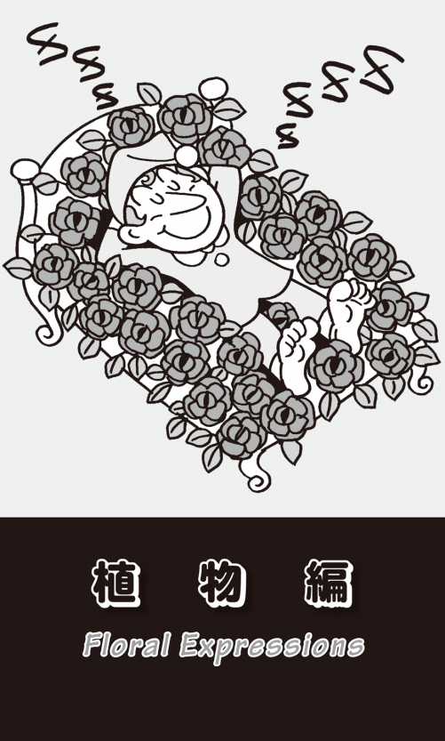
「バラはバラだからバラなんだ」
私は以前から、ある英単語がなぜそのように言われるようになったのか、その由来や語源について興味を持っていて（だからこのような本を書いているのだが）、イギリス人やアメリカ人の友人に会うたびに尋ねて迷惑がられた。日本人でも、私たちは普段は語源など考えずに日本語を話している。彼らも同じ感覚で英語を話しているのだ。さぞかし迷惑だったことだろう。
あるアメリカ人は、いつも"A rose is a rose."と言って、私の質問をやんわりと退けた。「バラはバラだ」とは、「明確に説明することができない」「それはそうなんだから、そうなんだよ」という決まり文句だ。A rose is a rose is a rose is a rose.という、もっとしつこい表現もある。「バラがバラであることは、バラがバラであるということだ」とは、つまり「物事はあるがままであって、それ以上でも以下でもない」という意味だ。
roseは「安楽」「楽しい」というニュアンスのある花で、a bed of roses「バラのベッド」「バラが敷き詰められたベッド」という表現もある。「安楽な時間や状態」のことで、だいたい否定を伴ってMarriage is not a bed of roses.「結婚はバラのベッドではない」、つまり「結婚とは楽なものではない」などと言う。
それで思い出したが、昔"The Days of Wine and Roses"「酒とバラの日々」という映画があった。1962年にアメリカで制作され、ジャック・レモンが主演している。徐々に酒に溺れていく新婚夫婦の物語で、同名のテーマ曲は、ヘンリー・マンシーニの作曲で、アンディ・ウィリアムスが歌って大ヒットした。以降スタンダード・ナンバーとして多くのシンガーがカバーしている。
come up rosesという表現は、「成功する」「うまくいく」という意味で、Everything's coming up roses.「全てうまくいっている」などと言う。似た表現で、come up smelling like a roseがある。これは「バラのように匂って出てくる」ということで、「悪いことが起こっても、かつての名声を傷つけることなく立ち直る」というニュアンスの表現だ。「幸運な人は、たとえ肥だめに落ちても、出てきたらバラのような匂いがする」というところからきた表現なのである。
Tudor Roseは「紅白のバラ」
The Wars of the Rosesとは、読んで字のごとく「バラ戦争」のことだ。イングランドで1455年から30年間続いたヨーク家とランカスター家の戦いである。ランカスター家が「赤バラ」、ヨーク家が「白バラ」を紋章としていたので、後にそう呼ばれるようになった。
イギリスには、多くのpub「パブ」があるが、その地の歴史や事件から命名したものも多く、pub sign「パブの看板」にもそれが描かれていてとても興味深い。看板に「赤いバラ」を描いた「ランカスター亭」「赤バラ亭」、そして「白いバラ」の「ヨーク亭」「白バラ亭」などという名前のpubがたくさんある。おもしろいのは「赤バラ亭」が多い地域と「白バラ」が多いところに分かれることだ。これで、その地域がバラ戦争の時に、どちらの勢力下にあったかがわかるのである。
そして「赤バラ」のランカスター家と「白バラ」のヨーク家が和解して成立したのが、Tudor dynasty「テューダー朝」だ。その紋章は赤と白の花びらを合わせたバラであり、パブの「テューダー亭」「紅白バラ亭」の看板の絵も、「赤と白の花びら」が描かれている。中には、「赤」と「白」の花びらが交互に並んでいるものさえある。
Every rose has its thorn.という表現がある。thornとは「トゲ」のことだ。日本語には「きれいなバラにはトゲがある」ということわざがあるが、英語では「どんなバラにもトゲがある」ということになる。これは「良いと思われることにも、危険が潜んでいる」という警告の言葉なのである。「この世の中には完璧な幸福はない」ということだ。
ユリの肝臓
lily「ユリ」を使った表現も興味深い。lily-livered「ユリの肝臓の」という表現が何を意味するかおわかりだろうか？ 昔、脾臓が憂鬱などの悪い感情の源だと考えられていたのに対して、肝臓（liver）からは勇気という感情が湧いてくると信じられていた。その勇気の強さ弱さは肝臓の中を流れる血液の量によって決まると考えられていて、臆病な人の肝臓は血液が少なく「ユリのように白い」ということから、lily-liveredは「臆病な」「情熱や勇気に欠けた」という意味になった。
lily-whiteという表現もある。もちろん「ユリのように白い」という意味だ。Her skin is lily-white.「彼女の肌はユリのように白い」などと言う。しかし、ユリは白いものだけではない。黒ユリだってあるし、赤・ピンク・黄色などいろいろな色のものがある。白い花びらに赤い筋や斑点があるもの、花弁が血のように真っ赤になっているユリもある。
ヨーロッパで、なぜユリが「白い」というイメージなのかを考えていくと、Madonna lily「マドンナのユリ」という表現に行きつく。キリスト教において純潔の象徴となっている白ユリだ。Madonnaとはもちろん聖母マリアのことで、受胎告知を行った天使ガブリエルは、聖画にこの白ユリを持った姿で描かれている。「受胎告知」とは、受胎つまり妊娠を告げるということだ。聖母マリアは純潔のまま、つまり処女のままキリストを身ごもって出産した。「マドンナの白ユリ」が聖母マリアのvirginity「処女性」の象徴となっているのである。
ユリに金メッキ
gild the lilyというフレーズもある。gildとは「金箔を貼る」「金メッキをする」という意味だから、「ユリに金箔を施す」ということになる。ユリはそれだけで十分にきれいな花なのに、「わざわざ余計なことをして、美しさを台無しにしてしまう」ことを言う。
シェイクスピアのKing John『ジョン王』の一節にある表現をアレンジした表現だ。わかりやすい文になっているので、その箇所をそのまま紹介しよう。
"To gild refined gold, to paint the lily, /To throw a perfume on the violet, /To smooth the ice, or add another hue /Unto the rainbow, or with taper-light /To seek the beauteous eye of heaven to garnish /Is wasteful and ridiculous excess."
「純金に金メッキをし、百合の花に絵具を塗り、スミレの花にかぐわしい香水をふりかけ、氷にすべりやすいよう鉋をかけ、虹の七色にさらに一色を加え、美しく輝く大空の太陽に蝋燭の光を添えようとするにも似て、むだで、滑稽で、よけいなことだと申せましょう」
（小田島雄志訳・白水社Uブックス）
英語の原文では、最初が"To gild refined gold, to paint the lily"となっている。その真ん中をカットしてアレンジしたgild the lilyが一般的になったのだが、そのままのpaint the lily「ユリに絵具を塗る」という表現も、全く同じ意味で残っている。
oliveは「平和」の象徴
The olive branch is an emblem of peace.は「オリーブの枝は平和の象徴である」という意味だ。もちろん、これは旧約聖書の「創世記」の一節から来ている。大洪水の中で、陸地を探そうとノアが放ったハトが「オリーブの枝」をくわえて帰ってきたことから、平和と安寧の象徴となったのである。国連の旗は、北極の上から見た世界地図をオリーブの枝が囲むという構図になっている。
hold out the olive branchは「オリーブの枝を差し出す」ということだが、「和解の申し出をする」という意味になる。After we quarreled, I'm the one who always held out the olive branch.と言ったら、「喧嘩をした後は、いつも僕の方から折れた」となる。
よくマラソンで優勝者の頭に月桂樹の冠をかぶせる。これは、もちろん古代ギリシャで競技の勝利者に月桂冠を授けたことからきている。「月桂樹」を英語でlaurelと言う。今はもう製造していないが、日産の「ローレル」という高級車があった。やはり名誉ある地位の象徴として命名したのだという。このlaurelを使った表現に、gain laurelsがある。「月桂樹を得る」とは「栄光を得る」「称賛を博す」ということである。もうひとつ、rest on one's laurels「月桂冠の上で休む」とは、「過去の栄光にあぐらをかく」あるいは「現在の栄光に満足する」ということになる。
ちなみに、このlaurelの派生語でlaureateという単語がある。これは形容詞だと「月桂冠をいただいた」という意味だが、名詞では優れた業績を上げて「名誉を受けた人」「受賞者」という意味になる。だから通常は「受賞者」はwinnerで、gold medal winner「金メダル受賞者」などと言うが、ノーベル賞受賞者は特別にlaureateと呼ばれる。Professor Nakayama is a Nobel laureate.「中山教授はノーベル賞受賞者である」などと言うことができる。
溺れる者は...
ムギなど穀物のわらのことをstrawという。ジュースなどを飲む時に使う「ストロー」である。今はプラスチックで片方が曲がるようになっていて、口許にもってきやすいようになっているが、私が子供の頃はストローは本当の「わら」を使っていた。
このstrawを使った表現もたくさんあるが、微かで微小で頼りない物のたとえとして使われることが多い。例えばa straw in the wind「風の中のわら」は、「風に吹かれて微かに揺れるわらが風の方向を示している」ことから、「微かな予兆」を意味する。
catch at a strawは「わらをつかむ」ということで、「窮地に立たされて無駄な努力をする」「災難から逃れるためには、どんなささいなチャンスをもつかまえる」ということになる。catchの代わりにclutchやgraspが使われることもあるが、これはA drowning man will clutch at a straw.「溺れるものはわらをもつかむ」ということわざからきている。
straw manという言葉もある。イギリスではman of strawが一般的だ。strawは「頼りない」というニュアンスで、直訳すると「わら人形」のことだが、「役に立たない見かけ倒しの人」や「架空の敵」のことを言う。
このstraw manにはもうひとつの意味がある。議論をする場合に、相手の意見を正しく引用せずに内容を歪めて対立意見を述べることを言う。例えば「犯罪が増えているので、あらゆる場所に防犯カメラを取り付けた方がいい」と意見を言う人に対して、「あなたはトイレや更衣室にまでカメラを付けろと言うのか」などと、論理のフレーム（枠組み）を変えたり、相手の論拠を無理やり自分の都合のいいように解釈して反論することだ。日本語にも「牽強付会」という言葉があるが、このような議論をstraw man argumentと言う。「議論をすりかえないでくれ」と言いたい場合には、Don't straw man me.のように動詞としても使うことができる。
strawは昔、アンケートで統計を取る際にも使われた。take a straw pollは「非公式の世論調査をする」という意味だ。昔、世の中のおおよその動向を知るために「わら」を使って投票したことから、こう言われるようになった。
「わら」はくじを引く時にも使われ、draw the short straw「短いわらを引く」という表現もある。くじには短いわらと長いわらが混ざっていて、短いわらを引いた人が負けになったことから、「他人がやりたがらない仕事をする」という意味にもなった。日本語でも「貧乏くじを引く」という、まさにぴったりの言葉がある。
放蕩のオートムギ
ムギにはいろいろな種類がある。もっとも一般的なのがwheat「コムギ」で、barleyは「オオムギ」、ryeは「ライムギ」、oatは「オートムギ」（からす麦）だ。
最後のoatを使ったsow one's wild oats「野生のオートムギの種を蒔く」という表現がある。10世紀のイギリスでは戦争が多く、ほとんどの男性が戦に駆り出されていたため、農地は長く休耕状態にあった。そのためオートムギが野生化してしまった。野生のオートムギは穂が小さく、苦労して育ててもほとんど収穫できず、収入も得られなかった。野生のオートムギの種を蒔くことは、とても無駄でばからしいことだったのである。
そこから、若者が「多くの異性と性交渉する」、つまり「放蕩の限りを尽くす」ことをsow one's wild oatsと言うようになった。無駄な種（精子）をたくさん、いろいろなところで蒔き散らすからだ。
「オートムギ」は馬の餌にもなっていた。これを食べた馬は精力がつき性的にも元気になって飛び回ったという。そんなことも、この表現が誕生した理由のひとつだろう。最初にこの表現を使ったのは、古代ローマ時代の喜劇作家、プラウトスだと言われている。そんな古くから使われていた表現だったのだ。
バナナに狂喜する
果物を使った表現もいろいろある。sour grapes「酸っぱいブドウ」という言葉を聞いたことがあると思う。「負け惜しみ」のことだ。「イソップ物語」のキツネとブドウの話はよく知られている。キツネが熟したブドウを食べようとしたが、高い場所になっていたので届かなかった。その時、キツネが「あのブドウは酸っぱいに違いない」と言ったという話である。cry sour grapesと言えば「負け惜しみを言う」ということで、Everything he said about not missing his ex-girlfriend was just sour grapes.「元カノと会えなくてもさびしくないなどと彼は言っているが、それは全くの負け惜しみだ」などと言える。
バナナを使った表現も紹介しよう。go bananas「バナナに向かって行く」とは「熱狂する」「気がおかしくなる」ということだ。もともと猿がバナナを食べて大喜びしている様からできた言葉だという。しかし、この表現は「喜ぶ」だけでなく「激しく怒る」場合にも使え、My wife went bananas when I lost my wedding ring.「私が結婚指輪をなくした時、妻は激怒した」などと言うこともできる。
「壁の花」は女性
日本でもパーティなどで、知り合いもなく壁に背をもたせてたたずんでいる人のことを「壁の花」と言う。英語でもwallflowerと言うと同じ意味になる。
実は、実際に春先に咲くwallflowerという花があり、日本語では「ニオイアラセイトウ」と言う。どこにでもあるような一般的な花ではないし、もちろん壁や石垣に咲く花ではないという。
人に使われるwallflowerは、英語ではダンスパーティの時に、踊りに誘われないで壁のところにポツンと立っている「女性」のことを指す。だから「壁」のwallと「女性」を称えた「花」flowerがドッキングしてできた単語なのであり、ちょっと日本の「壁の花」とはニュアンスが異なる。
日本なら、パーティ会場で知り合いもいなくて、ひとり酒を飲んだりタバコを吸っているような男性を想像する。私も立食パーティに出席したはいいが、主役以外に知り合いがいなくて、ひとり黙って食事をして帰ってきたことがあった。こういう時は、パーティのホストは大勢の知り合いが来ているので、出席者ひとりひとりに気をつかって丁重に扱うことはできないものだ。
私がまだ若い頃、アメリカ出張中にパーティに招待されたことがある。会場はロサンジェルスの郊外、ディズニーランドのあるアナハイム市のヒルトンホテルだった。ニューヨークの番組製作会社が主催するパーティで、社長以外には知り合いがいなかったが、思い切って行くことにした。社長と知り合いといっても、日本に来た時にちょっと挨拶をした程度の間柄だ。
会場のホテルの部屋に着くと、入口に社長がいて、笑顔で迎え入れてくれた。すぐに社員を何人か呼んでくれて一度に数人を紹介してくれた。ひとりの女性が飲物の並ぶテーブルに案内してくれ、私はオレンジジュースを頼んだ。そして、彼女から次の人へ、その人からまた次の人へと紹介が続き、どんどん知り合いが増えていった。
その部屋は、かなり上の階にあったが、そのまま中庭に出られるようになっていて、そこにはプールがあった。日本人は私だけだったが、ジュースを飲みながら、他の人たちとプールサイドで話していると、何かの映画のパーティ・シーンの中に紛れ込んだのではないか思ったくらいだ。この時ほど、苦しんで英語をやってきて本当に良かったと思ったことはなかった。
このパーティでは、私は「壁の花」になることもなく、お開きになる頃には、ほとんどの人と顔見知りになっていた。パーティへの招待者をwallflowerにしないようにするのは、ホストの一番大きな役割だということを、日本に帰ってきてから知った。
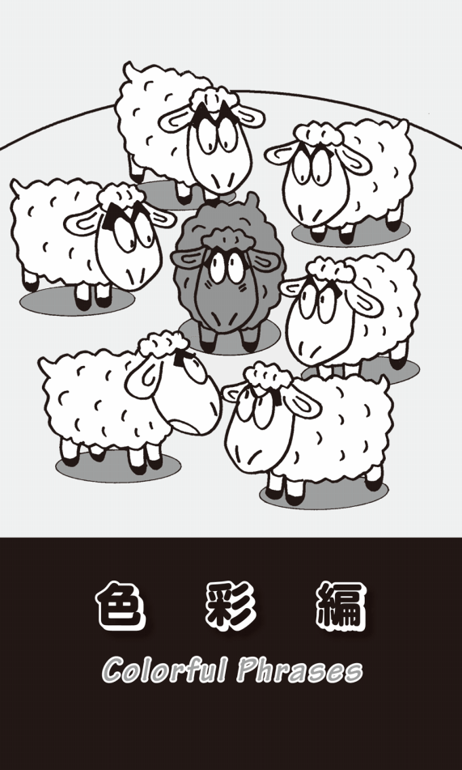
瞳の色
いつかアメリカ人が私の編集オフィスに来たとき、「天井のライトが明るすぎて眩しい」と言う。「よくこんなに明るい部屋で仕事ができるね」と驚いていた。そういえば、ニューヨーク郊外にも日本人が多く住む地域があるが、日本人の家は外から見てもすぐにわかるのだという。内部が異様に明るいのだ。欧米人は間接照明を好む。ライトを天井に向けて、その反射照明の明るさの中でテレビを見たり、本を読んだり、食事をしたりして生活している。
よく白人は、真夏だけでなく冬でも日差しが強い日にはサングラスをかけているが、あれは決してカッコつけているのではなく、本当に眩しくて仕方ないのだという。やはり目の虹彩の色がブルーだったり緑だったりして、黒や茶色の日本人と比べたら光を通しやすいからなのだろう。
最近読んでとてもおもしろかった小説に「孤愁 サウダーデ」（文藝春秋）がある。作家・新田次郎が執筆途中で亡くなったために未完となっていたこの作品を、次男の藤原正彦氏が書き継いで完成させたものだ。明治時代に徳島に住んだポルトガル人、モラエスの物語だが、隣家に住む橋本という大工が初対面の時に、こんなことを言う場面がある。
「『いゃあ、青と茶のまじったような目をこんなに近くから見るのは初めてだ。それでも物が見えるんだ』と言った。モラエスが『はい、見ることができます』と微笑むと、橋本が『おまんまが妙な色になんてことはねえんだろうな』と言った。モラエスが笑いながら『黒い目だとおまんま、黒いですか』と言ったので四人が爆笑した」
ここは小説の後半で、正彦氏の執筆箇所である。モラエスについては何冊かの文献や史料が残っているが、ウイットに富んだ正彦氏のことだ、自らイマジネーションを膨らませて書いたものではないかと思う。あるいは、アメリカやイギリス留学中に、同じような体験があったのかもしれない。
「赤い首」の記憶
「色」を使った英語の表現の中で、私が真っ先に思い出すのがwhite-collar worker、blue-collar workerである。collarという単語をよく見てほしい。color「色」ではなくcollarになっていることがおわかりだろうか？ 日本語では「白色」とか「青色」「緑色」とか言うが、英語ではwhiteだけで「白色」、blueだけで「青色」、greenだけで「緑色」という意味で、「色」という意味がすでに含まれている。
collarとは「襟」のことだ。私が中学生や高校生のころ着ていた学生服の詰襟の内側に白く細長いプラスチックをはめていた。あれが、日本人の私にとって一番理解しやすい「カラー」であるが、英語では普通のシャツの「襟」もcollarなのである。
ご存じのように、「ホワイトカラー」はオフィスで働く事務職のことで、上着の下に白いシャツを着ていることが多かったので、「白い襟の労働者」という意味でwhite-collar workersと呼ばれるようになった。「ブルーカラー」は工場労働者で、作業着やツナギの下に青っぽいシャツを着ていたから、「青い襟の労働者」blue collar workersとなったのである。
最近になってpink-collar workerという言葉があることを知った。看護師、秘書、小学校教師、受付など女性がつくことの多い職業のことだ。女性の看護師さんがピンクのユニフォームを着ることが多くなったことから、この表現が生まれたのだという。
「色」と「労働者」に関して、私には決して忘れられない記憶がある。講談社現代新書に『不思議の国アメリカ』という名著があった。著者は松尾弌之上智大学教授（現・名誉教授）だ。その本の中に、「アメリカの南部では、白人の農場労働者のことをレッドネックという」といった文章があった。redneck、つまり「赤い首」だ。
私があるアメリカ人女性と雑談していた時、どういう話の流れだったかは忘れたが、「アメリカ南部では、農場で働く白人のことをredneckと言うんでしょ」と言って、自分の英語の知識を披瀝した。きっと「よくそんなことまで知っているわね」と感心してくれると思ったのだ。しかし、その言葉を言った瞬間、彼女は驚愕と困惑の表情を見せて小声で怒鳴った。「ダメ、そんな言葉を使っちゃ。もしアメリカでそんなことを言ったら、半殺しの目に遭うわよ」。redneckは、人を傷つけるとても差別的な表現なのだと言うのだ。
この表現に関して興味を持ち、いろいろ調べてみたら、ある文献に「乱暴で頑固な貧しい南部の白人。偏屈な考えで凝り固まった人」とあった。もちろん、日差しの強いアメリカ南部で、屋外で働くために首筋が日に焼けて赤くなっていることからきた言葉だが、さらに自分たちの土地への侵略者に対する怒りで「首が赤くなっている」というニュアンスもあるという。さらに、もうひとつ意味があった。「首にウロコ状の赤い疱疹ができる『ペラグラ』という病気にかかっている人」のことだとも言うのである。
どちらにせよ、非常に失礼な英語表現であることは間違いない。このことを教えてくれたそのアメリカ人には感謝しなければならない。
黒字と恐慌
経済・経営用語ではin the blackと言えば「黒字で」ということで、これは日本語も同じだ。これに対して「赤字で」はin the redと言う。これは帳簿に書き込む際に、貸し方は黒いインクで書き、借り方は赤いインクで書いたことによる。だからOur company was in the red last year.と言ったら、「私たちの会社は去年赤字だった」となる。
最初を大文字のBにしてBlack Mondayとすると、1987年10月19日に株が大暴落した「暗黒の月曜日」という意味になる。その58年前の1929年10月24日にもアメリカ・ニューヨークの証券取引所で株価が大暴落し、世界的な金融大恐慌のきっかけとなったが、この日は木曜日だったので、Black Thursday「暗黒の木曜日」として知られている。
それよりはるかに昔のことになるが、1869年9月24日の金曜日にも、ニューヨークのウォール街で金買い占めの失敗による金融恐慌が起こった。金曜日だったので、Black Fridayと呼ばれている。しかし、最近ではこのBlack Fridayが、全く違う意味で使われるようになっている。それは11月第4木曜の「感謝祭」の翌日の金曜日のことで、毎年この日からクリスマス・セールが始まる。どうにか店を「黒字」に持っていこうと願いを込めて、こう呼ぶようになった。このように「黒」には、プラス・イメージもあることを忘れてはならない。
黒いマリア
アメリカでは囚人の護送車をblack Mariaと言う。これは19世紀にボストンに住んでいたMaria Leeという黒人女性の名前からきている。体が大きく快活な女性で、みんなから親しみを込めてBlack Mariaと呼ばれていた。彼女は船員のための宿屋を経営しており、多くの船員の面倒をみたり相談に乗ったりしていた。同時に、酔っぱらって乱暴を働いた宿泊客を警察に連れて行ったり、身元引受人となっては引き取っていた。なかなか面倒見がよく、警察からも信頼されている女性だったという。そこから、囚人を乗せて走るバスのことをBlack Mariaと言うようになった。
black sheep「黒い羊」という言葉もある。群れの中に1頭だけ黒い羊が混じっていると目立つので、「仲間はずれ」「異端者」といった意味になる。羊の毛はwoolというが、白い羊の毛ならどんな色にも染めることができるが、黒い羊の毛は他の色に染めることができないので価値が低かった。また、黒い羊の毛には悪魔が宿っているという言い伝えもあったという。故にblack sheepは「厄介者」という意味になり、「名家において名声を汚すような厄介者の道楽息子」のこともblack sheepと言うようになった。
オレンジ色の「ブラック・ボックス」
black boxという表現もよく耳にする。飛行機に備えつけられている航路や速度、高度などのフライトデータやコックピット内での会話などが記録されている"箱"だ。航空機事故が起きた時、回収されて、事故原因の究明のために重要な役割を持つ機器で、どんな強い衝撃でも壊れないようになっている。しかしこのblack box、遠くからでも見つかりやすいように、「オレンジ色」になっている。
black boxにはもうひとつ別な意味もある。使う人には内部の構造や仕組みがわからなくても、容易に使いこなせる機器のことだ。例えば、私にとってはテレビがblack boxだ。どのような構造になっていて、どのような仕組みで映像が映るのかわからないが、リモコンのスイッチを入れれば番組を見ることができるし、チャンネルも変えることができる。
パソコンも同じで、どのような仕組みで文字が打てて、どのようにしてメールが送られるのか、どうやってインターネットにアクセスできるのか全く理解できない。コンピューターの発達によって、世の中にはこのblack boxがどんどん増えている。
計算する時に電卓を使うが、これもなぜ数字や＋、−、×、÷のキーを叩くだけで、あんなに早く計算ができるのか、その原理がわからない。しかし算盤はどうだろうか。全てが見えていて、どう玉をはじけばいいのかを習えば計算ができる。ただ、早く計算できるようになるまでには、かなりの練習が必要となる。特に子供は、そのようなトレーニングをすることが必要だ。ただ単に、ここを押せば答えが出るということでは、子供たちの将来が心配になってくる。
「箱」から「穴」に話を移そう。black hole「ブラック・ホール」という言葉もある。天文用語で、重力が強いために光や熱など全ての物質が脱出できず、全てのものが吸い込まれていく天体のことだ。日常の言葉でも「お金や品物がすべて消え去ってしまうような状況」のたとえとなっている。All of my money has gone down a black hole.「お金がみんなブラック・ホールに入ってしまった」なら、「私のお金は全部跡形もなく消えてしまった」という意味だ。
「赤」と「黒」
フランスの小説家、スタンダールが書いた『赤と黒』（Le Rouge et le Noir）という作品がある。ジュリアン・ソレルという青年が、権謀術数を駆使しながら社会での成功を得ようとする物語である。題名は「赤」が軍服、「黒」が僧服という、その当時の野心の目標を象徴している。
これもフランスの小説家だが、文豪ヴィクトル・ユゴーの大河小説に『レ・ミゼラブル』（Les Misérables）がある。この小説を原作としてミュージカルが制作され、1985年にロンドンの劇場で初上演されて以来30年近いロングランとなっている。2012年に映画になり、大ヒットしたので、ご覧になった方も多いと思う。
このミュージカルの中で、革命を目指す学生たちが歌う"ABC Café --- Red and Black"（Boublil Alain Albert作詞・Schonberg Claude Michel作曲）という希望の歌がある。その詩の中に"Red --- the blood of angry men! /Black --- the dark of ages past! /Red --- a world about to dawn! /Black --- the night that ends at last!"という一節がある。訳してみれば、「赤、それは怒れる人の血潮。黒、それは過去の年月の闇。赤、それは世界の夜明け。黒、それはついに終わる夜」となるだろうか。
"I Dreamed a Dream"も"Do You Hear the People Sing?"も素晴らしい感動的な歌だと思うが、私はこの"Red and Black"が一番好きだ。
「白い嘘」と「黒い嘘」
よく「アメリカ人はYes、Noをはっきりと言う」などと言われる。また「それがどんなに相手にとって嫌なことであっても、はっきりと正確に真実を伝えることが、アメリカ流のsincerity（誠意）だ」という話も聞いたことがある。しかし、私は多くのアメリカ人と一緒に仕事をし、友達にもなってきたが、そのように思ったことはない。その証拠に、英語にはwhite lie「白い嘘」という言葉があるのだ。これは「好意的に、相手のためを思ってつく嘘」ということだ。日本語でも「嘘も方便」という言葉があるように、状況によっては嘘をつかなければならないことがあるのは、アメリカ・イギリスも同じだ。その反対にblack lie「黒い嘘」という言葉もある。これは「相手を陥れるために、悪意を持ってつく重大な嘘」ということだ。
そういえば、日本語にも「真っ赤な嘘」という表現がある。この「真っ赤な」は「まぎれもなく〜」「まるっきり〜」という意味だ。もともと「正反対な」という意味で「真っ返さま」「まっかいな」という言葉があった。これが色の「赤」と混同されて使われるようになったものだ。
「白い騎士」「黒い騎士」
何年か前に、日本でもwhite knight、black knightという言葉がクローズアップされた。これはM & A「企業買収」の際によく使われる用語だ。A社という企業がB社という企業に敵対的買収を仕掛けられている時に、A社と友好的な関係にあるC社がA社を買収することによって救うことがある。そのようにA社にとって有利な条件で好意的に買収を進めてくれるC社のような会社をwhite knightと言う。「白い騎士」のことだ。もしA社が敵対するB社に買収されてしまうと、A社の経営陣はすべて追い出される恐れもある。だが友好的なC社が買収してくれるなら安泰だし、これまでと同じ方針で経営を続けられる可能性が高い。
反対に、A社に敵対的買収を仕掛けているB社が、別のD社に協力してもらいA社の株式を買い集めて買収を推し進める場合がある。この場合D社はA社のblack knight「黒い騎士」ということになる。
blackmailという単語もある。「恐喝」「ゆすり」という意味だ。昔、スコットランドの農地はほとんどが英国貴族の不在地主が所有し、とんでもなく高い借地代を農民に課していた。不在地主だけではない。山賊たちも、庶民の命と土地を守る代わりに「金銭」や「貢物」を強制的に徴収していた。その「金品」は、古代スコットランド語でmael「契約」と呼ばれていた。そこから「税金」「年貢」という意味のmailという言葉が生まれた。
不在地主や山賊への税金の払い方には2種類あった。ひとつはwhite mail「白地代」と言って「白い銀貨」で支払う方法、現金のない者は「黒い牛」や「作物」などで支払っていたのだが、これをblack mail「黒地代」と呼んだのである。だが、これは「白地代」に比べて価値が明確でなかったために、不在地主や山賊は異様に高い「黒地代」を搾り取った。そんなところからblackmailが「ゆすり」「たかり」の意味になったのである。
mailの流れで話を続けると、「色」は変わるが、greenmailという言葉もある。これは先ほど説明したM & A用語のblack knightやwhite knightとの関連が深い。ある会社が、他の会社を買収するのに十分なくらい株を買い占めた後、高値で引き取らせ、差額を得るという戦術のことだ。敵対的買収をされるくらいなら、高値であっても株を買い戻す方がいいと考える企業も多い。アメリカのドル紙幣は裏が緑色のことからgreenbackと呼ばれるが、そのgreenと「恐喝」「脅し」を意味するblackmailにひっかけてできた言葉だ。
白は「ブラック」だった
最近、おもしろいことに気がついた。英語のblackがフランス語で「白」を意味するblancに似ていることだ。Mont Blanc「モンブラン」は「白い山」という意味だし、これはスペイン語だがCasablanca「カサブランカ」も「白い家」ということだ。
もともと古英語ではblæcが「黒」でblacが「白」だった。何と「白」も「ブラック」だったのである。bleach「漂白する」は、このblacからきているという。「空白」はblankと言うが、これも「白く」空いているスペースなのに、blackという単語によく似ている。
一方、whiteの語源はこれとは全く関係なく、古英語のhwit（明るい、輝かしい）からきているのだという。
「白」と「黒」
black and whiteはもちろん「白黒の」という意味で、black-and-white photoは「白黒写真」のことだ。monochrome photoとも言う。chromeとは「色」「色素」のことで、色がmono（ひとつ）ということだ。だから黒一色だけでなく、青一色も赤一色もmonochromeになる。
black and whiteには｢白か黒かのはっきりした区別｣という意味があり、そこから「単純で簡単な」ということにもなる。a black and white issueというと、白黒がはっきりしていて「簡単に解決できるやさしい問題」だし、He tends to think about things in black and white.という文なら「彼は物事を割り切って単純に考える傾向にある」ということになる。
さらにin black and whiteは、「（言葉ではなく）書面で」「印刷されて」という意味になる。You need to submit the plan in black and white.と言えば、「企画を（言葉でなく）書面で提出する必要がある」ということだ。
他にも「黒」と「白」といえば、ポール・マッカートニーとスティーヴィー・ワンダーが歌った"Ebony and Ivory"（Paul McCartney作詞・作曲）という曲がある。ebonyとは黒檀を意味し、ピアノの「黒鍵」のこと、ivoryは象牙で「白鍵」のことだ。白人のポールと黒人のスティーヴィー・ワンダーが一緒に「ピアノの黒鍵と白鍵でメロディーを奏でるように、白人と黒人・有色人種が仲良く調和する世界を作ろう」と歌い上げる曲だ。
「灰色」は「あいまい」の色
日本語でも、白黒つかない「あいまいな」ことを「グレー」と言う（アメリカ英語ではgray、イギリスではgreyとすることが多い）。gray areaで「あいまいな部分」「グレーゾーン」というのは日本語と同じだ。おもしろい表現にgray matterがある。「灰色の物質」ということだが、これは脳内の「灰白質」という部分のことで、そこから「頭脳」「知能」という意味になった。use gray matterといったら「頭を使う」という意味で、例えばHow can you solve those math problems if you don't use your gray matter?「頭を使わなかったら、どうやってあのような数学の問題を解くことができるのか？」などと言うことができる。
もちろんgrayは「灰色」ということだから、He led a gray life.と言えば「彼は灰色の人生を送った」ということになる。The sky is gray.なら「空は灰色だ」ということだ。
The Mamas and Papasの"California Dream-ing"（Michael Gillian /John Phillips作詞・作曲）という歌があった。この出だしが"All the leaves are brown and the sky is gray"となっている。一瞬で聞く人をこの歌の哀愁の世界に引き込む素晴らしい歌詞とメロディーだ。
日本では、例えば「シルバーシート」のように高齢者のことをsilverで表すが、英語ではgrayを使う。白髪もシルバーを使わずにgray hair（あるいはwhite hair）と言う。grayは形容詞では「老齢の」「白髪の」、動詞では「白髪になる」とか「高齢化する」という意味になる。だからgray householdは「高齢者世帯」だし、the graying of Japanと言ったら「日本の高齢化」という意味になる。graying societyとなると「高齢化社会」だ。
赤信号でも突っ走れ！
redが「危険」を意味するのは英語も同じだ。交通信号もred lightはもちろん「止まれ」の意味だが、これに関しては強烈な記憶がある。かなり前のことだが、アメリカのフロリダ州マイアミでドイツから来た夫婦がレンタカーを運転していて赤信号で停まった時に、横に並んだ車から数人の男が飛び出してきて、銃をつきつけ金品を奪ったあげく暴行を加えるという事件が起こった。
強盗はレンタカーに乗っている旅行者なら、たくさんお金を持っていると考えたに違いない。もし外国人なら、警察の事情聴取を受ける暇もなく帰国してしまうかもしれない。何かあっても、「命だけは助かって帰ってきたのだから、保険も降りるし、まあいいか」などと諦める人も多いだろう。レンタカー強盗は、そのあたりを承知のうえで襲ったのかもしれない。この事件を受けて、フロリダ州政府は、レンタカー・ナンバーを廃止した。それまではナンバーでレンタカーであることがすぐバレてしまったのだが、それをわからないようにしたのだ。
この事件が起こったのが、世界中から出版関係者が集まるブックフェアの少し前だったために、出版関係の情報誌"Publishers Weekly"には、そのような被害を防ぐためのcaution「注意」が掲載されていた。そこには驚くことが書かれていた。「もし、不審な車に追いかけられたら、絶対に停まらないこと。もし交差点で赤信号に引っかかったとしても、突っ走ってください」と言うのだ。このrun a red light「赤信号で突っ走る」という表現は、決して忘れられない。それにしても「信号を無視して走る」ようにアドバイスするとは、何という雑誌なのだろう。
日本なら問題になって、編集長が「お詫び会見」をするはめになるかもしれない。でも確かに"赤信号強盗"に遭って殺されでもしたら、交通法規がどうのこうのという話どころではない。
推理小説の「赤いニシン」
赤は興奮を呼び起こす色だ。see red「赤を見る」と言うと「突然怒り出す」という意味になる。be like a red rag to a bull「牛にとっての赤い布のようだ」とは「必ず怒らせるものだ」という意味で、例えばThis kind of joke is like a red rag to a bull for him.「こういったジョークは彼を必ず怒らせる」と言ったりする。
もちろん、闘牛で牛が赤い布に向かって興奮して突進する様子からできた表現だが、牛はそれほど色の識別がつかないという。むしろ人間が興奮する色だから赤にしているのだという。それに広い闘牛場でも赤は目立つし、闘牛士の洗練された華麗な動きも赤い布によって強調されるからだ。
red herring「赤いニシン」という英語らしい表現がある。ニシンは、新鮮なうちは白いが、酢やスパイスをまぶして干して燻製にすると赤くなり、同時に臭いもかなりきつくなるという。イギリスでは昔からキツネ狩りが盛んだが、動物虐待だということで反対する住民も多い。また、キツネを追いかけている最中は許可なく他人の敷地に入ってもいいことになっている。だが、やはり自分の土地を他人に荒らされるのは気持ちのいいものではない。そのようなキツネ狩り反対論者が、意地悪をして「赤いニシン」を撒いておくと、キツネを追いかける猟犬の嗅覚がおかしくなり獲物を追えなくなった。このようにして狩猟を混乱に陥れたのである。
そこから推理小説家が、読者の推理を事件の核心からそらして混乱させるために書くストーリーラインのことをred herringと言うようになった。読み進むうちにこの登場人物が犯人かなと思っていると、だいたい次に殺される。では、一体誰なんだろうと思って読み進んでいくと、話が意外な展開を見せ、謎がますます深まっていく。そのような「真相から目をそらせる筋立て」がred herringなのである。
だから、このred herringには「嘘の情報」「ガセネタ」、あるいは「本質とは関係のない事実や情報」という意味もある。会社の会議などでも、議論しているうちにいつの間にか中心のテーマから外れていくことがある。そんな時には、例えばThe questions about the cost of the new project are a red herring.「新しいプロジェクトの経費についての問題は、テーマの本質とは関係ない」などと言うことができる。
赤いカーペット
ハリウッドで行われる映画祭には、世界的大スターが大勢招待される。リムジンから降りると、ファンの歓声を浴びながら、赤いカーペットの上をゆっくりと歩いて会場に入る。このことから、「豪華で丁重な特別扱い」のことをthe red carpet treatmentと言う。「丁重な扱いをする」はgive someone the red carpet treatmentあるいはroll out the red carpetと表現する。roll outは「ロール状のものを広げる」という意味だ。
映画祭の準備をしているところを少し想像してみてほしい。ロール状になったカーペットを何人かのスタッフが中腰になって押して広げている情景が思い浮かぶだろう。それがroll out the red carpetだ。長さが何十メートルにもなると、歳を取った人だったら腰も痛くなるに違いない。そこまでして、スターを丁重に迎え入れるのである。ちなみに、roll outの反対はroll upで「巻き上げる」という意味だ。巻物などをくるくると巻くところを想像してみれば、すぐにイメージが湧くだろう。
最近、東京国際映画祭では、赤ではなく緑のカーペットを敷くようになったようだ。これがきっかけとなって、green carpet treatmentと表現が変わるかもしれない。
カーペットではなく、red tape「赤いテープ」という表現もある。昔イギリスでは、役所の公文書は「赤いテープ」で綴じられていた。そのためにred tapeが、怠惰で不効率な「お役所仕事」、堅苦しく面倒な「官僚の形式主義」「官僚的で面倒な手続き」のことも意味するようになった。だから"I ran into all kinds of red tape."と言ったら、「煩わしいお役所の手続きに悩まされたよ」ということになる。
もうひとつ「赤」を使った表現を紹介しよう。red-eye flightという言葉だ。「赤い目の飛行」とは「夜行便」、つまり「機中1泊の飛行便」のことだ。夜飛んだので、乗客だけでなくパイロットや客室乗務員も、目が充血して赤くなっていることから、このような表現ができた。私も最近、羽田国際空港から深夜の便でアメリカに行くことが多くなった。そんな時には、I took the red-eye flight from Tokyo to San Francisco.「私は、東京発サンフランシスコ行きの夜行便に乗った」などと言える。
緑は「嫉妬」の色
ちょっと本格的に英語をやった人なら、緑という色が「嫉妬」を意味するということをご存じだろう。例えば、green with envyで「とても嫉妬している」「うらやましがっている」という意味になる。When his colleague got promoted, Jack was green with envy.と言えば、「同僚が昇進した時、ジャックは嫉妬した」ということだ。しかし、なぜ「緑」が「嫉妬」の色なのだろうか？
男と女の間の「嫉妬」を考えてみよう。異性に好意を寄せて燃え上がるような感情を「赤」にたとえるなら、反対に相手に憎しみを抱く暗い感情は「青」だろう。「嫉妬」とは、この「赤」と「青」の感情がないまぜとなったもので、この2つの色を混ぜれば「緑」になるではないか......などと、私はずっと考えてきた。
ところが、いろいろな文献に当たっていたら、信頼に足る説が出てきたのである。古代ギリシャには「四体液説」という理論があった。人間には「血液」「粘液」「黒胆汁」「黄胆汁」の4つの体液が流れていて、そのバランスが崩れると病気になると考えられていた。その体液のバランスは、人間の気質にも影響を与えており、血液が多い人は楽天的、粘液が多い人は鈍重、黒胆汁が多い人は陰鬱、黄胆汁が多い人は短気だと言われていた。
そして、その時々の気分もそれぞれの体液の分量に影響して、「嫉妬」という感情にとらわれると、緑色の「黄胆汁」の過剰な分泌によって顔色も緑に変わるとされていたのだった。そんなこともあって、古代ギリシャの女流詩人サッフォーが、失恋し嫉妬に狂う人の顔色を「緑」と描写した。それ以降、詩や文学において「緑」が「嫉妬」「妬み」の色として盛んに使われるようになったのである。
その「嫉妬」のgreenは、シェイクスピアの戯曲にいくつも登場する。『ヴェニスの商人』にはこんな一節がある。"How all the other passions fleet to air, ... And shuddering fear, and green-eyed jealousy."「ああ、数々の悩みが融け去るように空に消えてゆく......胸を締め付ける不安も、緑色の目をした嫉妬も」（福田恆存訳・新潮文庫）
また、『オセロ』にも"O' beware, my lord, of jealousy! /It is the green-eyed monster which doth mock /The meat it feeds on."「嫉妬はこわいものでありますな、閣下。そいつは緑色の目をした怪物で、人の心を餌食にして、苦しめるやつです」（三神勲訳・角川文庫）という文がある。
猫やライオン、虎など「緑の目」をした動物は、獲物にする生き物をすぐに殺して食べずに、じっくりもてあそんで苦しめる。人の嫉妬も同じで、相手を愛すると同時に、憎んでなぶり苦しめたいという感情に強くとらわれるのである。
「未熟」と「エコ」のgreen
日本語でも「未成熟な若者」について「あいつはまだ青い」とか「青二才だ」などと言うが、英語ではgreenが「未熟」ということになる。リンゴなどの果物は未成熟の時には「緑色」をしている（日本語では「青いリンゴ」などといわれる）。だからgreen workerと言えば「まだ不慣れで未熟な労働者」だ。
greenhorn「緑の角」も「初心者」「新米」「未熟者」の意味だ。昔、雄牛が農耕用の動物として使われていた。愚鈍で頑固で力も強く、命令に従うように仕込むのがなかなか大変だった。子牛の頃から躾け始めて角が大きくなるまで成長した頃に、やっと「右へ」とか「左へ」といった簡単な命令に従うようになった。そのために、角のまだ新しい、つまりgreenの雄牛は、価値が低くなかなか売れなかったのだという。
エコロジーの問題でもgreenがよく使われる。「環境にやさしい」という意味だ。green energyは「環境にやさしいエネルギー」だし、green consumer「環境問題を意識した消費者」、green politics「環境保護政策」、green chemistry「環境にやさしい化学」などがある。またGreen Party「緑の党」は、ドイツやイギリスで結成された地球環境保護を目指す政党の名称だ。
最近ではthe greenhouse effectという言葉がニュースなどでもよく使われている。greenhouseとは「温室」のことだから「温室効果」という意味になる。地球の大気圏内部にたまった熱が外に出て行きにくくなり、内部に蓄積されることで気温が上昇する。それが温室の中に熱が溜まることに似ていることから、このように呼ばれるようになったものだ。ちなみに、それによって生じたのがglobal warming「地球温暖化」で、その原因といわれているのがgreenhouse gas「温室効果ガス」、つまり二酸化炭素やメタンなどの増加である。
日本語の交通信号の「青」は英語ではgreenとなる。「緑信号」はgo「進め！」を意味するので、green lightは「正式許可」という意味にもなる（greenlightとつなげると、動詞になって「許可を与える」「ゴーサインを出す」となる）。だから、give the green lightというフレーズは「正式許可を与える」、get the green lightは「正式許可を得る」という意味だ。
幸せのgreen flash
晴天の日の夕方に、太陽が水平線や地平線に沈んだまさにその瞬間、ほんの短い間だが緑の閃光が放たれることがある。これはgreen flash「緑の光線」と呼ばれる。稀にしか見ることのできない自然現象だが、それを「見た人は幸せになれる」という言い伝えがあるのだ。
かなり昔だが、森村桂という作家の『天国にいちばん近い島』という小説があり、大林宣彦の監督、原田知世主演で映画になった。"天国にいちばん近い島"と呼ばれるニューカレドニアを舞台にした少女の成長物語だった。ストーリーはよく覚えていないが、太陽が沈んだ瞬間に周囲がすべて緑色に染まったラストシーンは忘れることができない。この映画で、私はこのgreen flashのことを知ったのだが、幸せになるかどうかは伝説としても、なぜこのような現象が起こるのかはわからなかった。
それから数年たって、エリック・ロメール監督のフランス映画「緑の光線」（Rayon Vert）を見た時に、その疑問が解けたのだった。こんなセリフがあった。「太陽は赤・黄・青の光を発しているが、その中でも青い光が一番波長が長い。だから、太陽が水平線に沈んだ瞬間、青い光線が最後まで残って、それがまわりの黄色と混ざって私たちの目に届くのだ」
それから10年もたった頃だろうか、私はアメリカのサンフランシスコからロサンジェルスに向けて、太平洋沿いの道路をドライブしていた。右手には、大きくてまん丸の太陽が水平線に沈もうとしていた。「そうだ、green flashを見ることができるかもしれない」と思い、展望台に車を駐車させてじっと海と夕陽を眺めたのだった。待つこと20分、太陽の一番上部が水平線に隠れたその瞬間、パアーッと緑の光線だけが空に向かって伸びたのだった。ほんの一瞬のことだったし、あの映画のようにあたり一面が緑になることはなかったが、その光景はいまも私の脳裏にはっきりと残っている。
「青」は高貴か猥褻か？
blue「青」には、いろいろなイメージがある。sky blueといえば「空色」だ。「憂鬱な」という意味もある。blue Mondayは「憂鬱な月曜日」だし、I am feeling blue now.なら「私は今、憂鬱な気分だ」となる。
blueには、さらに「高貴な」という意味があることをご存じだろうか？ blue-blooded「青い血の」で「貴族出身の」「名門の出の」という意味になる。これはスペイン語のsangre azul「貴族（名門）の血統」という言葉に由来する。「貴族は肌が白くて血管が透けて見える」ということから生まれた表現だ。8世紀から15世紀にかけて、スペインは北アフリカから侵入してきたイスラム教徒に支配されていた。自分たちの国土を乗っ取ったムーア人を憎む一方で、もともとの住人であるスペイン人の純血性を称賛したことで生まれた表現なのである。
対照的に、blueには「猥褻な」「エッチな」という意味もある。blue film「青い映画」と言えば「猥褻な映画」になるし、blue jokesは「猥談」のことだ。なぜ、blueがこんな意味になったのかというと、19世紀の初期にフランスのLa Bibliothéque Bleu（フランス語では「青」はeとuが入れ替わりbleuとなる）という出版社がエロチックな本をたくさん発行していたことに由来しているからだ。
in a blue moonという表現もある。「青い月」とは「長い間」という意味で、once in a blue moon「月が青い時に一度」とは「ごくまれに」「めったに〜しない」ということだ。大気中の細かい塵の影響で、まれに月が青く見えることがあるという。それはめったにないことなので、このような表現が生まれたのである。She takes a vacation once in a blue moon.「彼女はごくまれにしか休暇を取らない」などと言うことができる。
pinkは「元気」の色
pinkは「ピンク」「桃色」ということだが、in the pinkで「とても元気で」という意味になり、My grandmother is in the pink.と言えば「祖母はとても元気だ」ということだ。もうひとつ、「心配がない」という意味もあり、I'm in the pink financially.「私はお金には心配がない」というふうに言うこともできる。
be tickled pinkになると、「大喜びする」という意味だ。tickleは動詞で「くすぐる」「笑わせる」「喜ばせる」で、Mary was tickled pink when she received the flowers.「メアリーは花をもらって、とてもうれしかった」などと使うことができる。
昔の恥ずかしい出来事を思い出したり、怒ったり、激しい運動をした時、英語では普通go redと言うが、たまにgo pinkと言うこともある。She went pink again as she remembered her mistake.「彼女は自分のミスを思い出して、また顔がピンクになった」と言ったりする。
「白い物」「黒い物」
スラングだが、white goodsというと「電気製品」のことになる。ずいぶん前に、ある「英単語集」に掲載されていたので、そのまま覚えたのだが、そのうちに何かおかしいと思うようになった。確かに冷蔵庫や洗濯機などには白いものが多いが、テレビやビデオ、ブルーレイディスク・レコーダーなどはほとんどが黒ではないか。アメリカでは、今でも電気製品全般のことをwhite goodsと言っているのだろうか？
そんな疑問を長い間抱きつつも、忙しさにかまけて確認しなかった。まあ、そんなに大した問題でもないし......と。ところが、先日ヤマダ電機で、遅ればせながら地上デジタル・テレビを購入した時のこと、係の人が記入していた伝票をちらっと見ると、左上に黒地に白抜きで「黒物」と印刷されていた。私は「英語では電化製品のことをwhite goodsと言うんですが、『黒物』というのもあるんですね」と言った。その係員は「ええ、冷蔵庫や洗濯機などは『白物』で、テレビなどは『黒物』と呼んでいます。でも、そんなことをお客様から言われたのは初めてですよ」と答えた。
家に帰って多くの辞書に当たってみたら、その中のひとつにblack goodsという項があり、「電気製品の中でテレビなどのように黒いもの」と明記されていた。念のためにwhite goodsを引くと、これは「（白色の）大型家庭用電化製品（冷蔵庫、洗濯機など）」となっていた。
昔、このwhite goodsと同時に覚えたのがbrown goodsだ。ご想像のように、これは「家具」のことだ。確かに木材でつくられているので、「茶色い」のだが、北欧の家具は白いではないか？ もともと色で製品を一括りにすることが間違っているのではないか、と思う。
brown noseがなぜ「ゴマすり」なのか？
さて色彩編の最後をbrown noseでしめてみたい。「茶色い鼻」ということだが、「なりふりかまわずにゴマをする」「おべっかを使う」という意味になる。
「お世辞を言う」は、ごく常識的な単語だとflatterだが、いろいろユニークな表現がある。その代表がapple-polish「リンゴを磨く」だろう。名詞の「ゴマすり」はapple-polishing、「ゴマすりをする人」はapple-polisherとなる。昔、学校の先生にピカピカに磨いたリンゴをつけ届けして、「ゴマをすった」ことに由来する表現だ。
他には、soft-soap「柔らかな石鹸」、あるいはbanana oil「バナナの油」という表現も使われる。butter upも「油をさす」から「物事を円滑にする」ということになり、「ゴマをする」という意味になる。
さて、このbrown noseについては、本当は紹介したくなかった。でも、この表現について書かなければ、この本を発行する意味がないのではないかとまで思いつめ、清水の舞台から飛び降りる？つもりで説明することにしたい。
繰り返すが、brown noseは「茶色い鼻」だ。なぜ鼻が茶色いのか？ それはゴマをする相手のお尻に鼻をつっこむと、お尻の穴に残存している茶色の排泄物が鼻にくっつくからだ。そこまでしてゴマをすりたいのか、と思ってしまうが、こんな汚い表現も含めて英語なのである。やはり英語は、"おもしろい"。
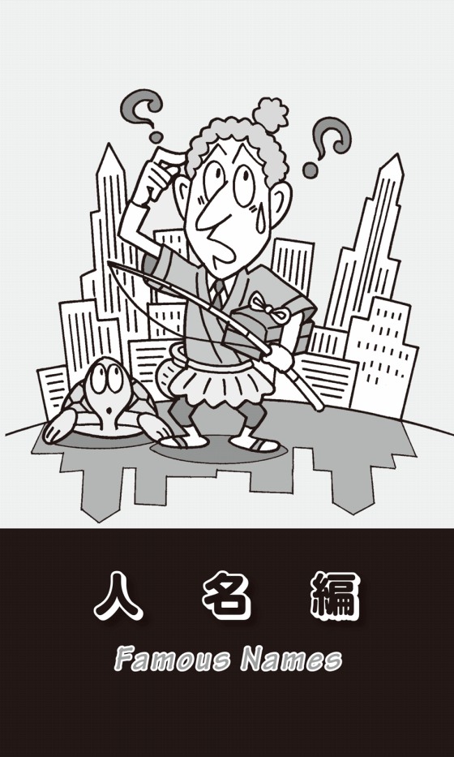
John Bull誕生秘話
人の名前というのは不思議だ。多くの名前がずらっと並んでいるリストの中に、例えば長嶋茂雄とか村上春樹、池上彰、中山伸弥、吉永小百合、柏木由紀といった名前が混じっていたとしよう。ざっと眺めていっても、その名前だけ目立って見える。どこにでもあるような平凡な名前であったとしても、その人の活躍度や注目度の高さ次第で名前が光って見えるのである。そんなことを考え始めたのは、つい最近のことだ。
アメリカでは人名が空港や通りの名前になったりする。そのような固有名詞だけでなく、人の名前がある特定の意味の名詞になったり形容詞になったり、場合によっては動詞になったりもするのだ。
まず、John Bullという名前から始めよう。John Bullは「イギリス」という国を擬人化した架空の人物名で、保守的な典型的イギリス人も、同様にこのように呼ばれる。
この名前は、Dr. John Arbuthnotという風刺作家が生み出したと言われている。彼は18世紀初頭に"The History of John Bull"という一連の小冊子を発行し、そのころ戦闘状態にあったフランスとの停戦を主張した。国を直接名指しして論を展開するのではなく、それぞれの国を擬人化したり、国家元首にもニックネームをつけて、大衆にわかりやすく描いたのである。イギリスはタイトルにもあるJohn Bull、オランダはNicholas Frog、スペインのフィリップ王はLord Strutt、フランスのルイ14世はLewis Baboonといった具合だ。frogはもちろん「カエル」、struttは最後のtを除いてstrutとすると「気取った」という意味になる。ルイ14世のbaboonは「ヒヒ」のことで「とんま」といった意味もある。イギリスのJohn Bullだけが、いやにまともに思える。
Uncle SamはU.S.から
John Bullに対して、アメリカのニックネームはUncle Samだ。大統領選挙の時など、しばしば星条旗柄のシルクハットやジャケット、ズボンを身につけた老人の絵が掲げられる。アメリカを擬人化した架空の人物で、国の象徴となっている。アメリカ（政府）やアメリカ人をUncle Sam「サムおじさん」と呼ぶこともある。でも、なぜUncle Samが、このような国の象徴となったのだろうか？
19世紀の初期、ニューヨークにSamuel Wilsonという精肉業者がいて、Uncle Samというニックネームで呼ばれていた。彼は米英戦争（1812−14）の際、アメリカ軍に卸す肉の検査官も務めていて、肉が入った樽にUnited Statesの頭文字のU.S.というスタンプを押していた。誰かが、このU.S.は、彼のニックネームであるUncle Samのことではないかと茶化したことから、「アメリカ政府」のことをUncle Samと呼ぶようになったという。
もうひとつ似通った説がある。これも19世紀のこと、アメリカ海軍専用に卸されていた肉の樽には"E.A.U.S."というスタンプが押してあった。これは肉の販売会社のElbert AndersonとUnited Statesの頭文字だったのだが、ある時、兵士がこのイニシャルの意味を聞かれた際に、「Elbert Anderson's Uncle Samのことだろう」と冗談を言った。そのジョークが多くの人の心をとらえて、イギリスのJohn Bullに対抗して、Uncle Samがアメリカの代名詞となったというのである。
両方とも同じ19世紀の話で、肉が入った樽に押したスタンプのU.S.から来ているという。ひょっとしたら、この2つの説は出所は同じなのかもしれない。
「名なしの権兵衛」を英語で
日本でも川や海で溺れ死んだ人、つまり溺死体のことを「土左衛門」という。これは江戸時代の力士「成瀬川土左衛門」からきている。この力士は、あまりにもブクブクと太っていたので、ある人が溺死人の膨れあがった死体を「土左衛門のようだ」とふざけて言ったことが始まりとされる。
それと似ているが、英語でも「身元不明者」のことを男性はJohn Doe、女性はJane Doeと言う。「名なしの権兵衛」のことだ。AKB48の高橋みなみのファースト・ソロ・シングルのタイトルが"Jane Doe"（秋元康作詞・早川暁雄作曲）で、「君は誰なんだ／答えてくれ」という歌い出しになっている。こんな英語の人名の意味まで知っているとは、秋元康という人は何と広く深い知識の持ち主なのだろうか。
話をもとに戻すと、裁判で訴訟を起こした当事者が匿名だったり不明だったりした場合にも、John DoeあるいはJane Doeと言うし、被告の名前が不明の場合にはRichard Roeと呼ぶ。そのことからJohn DoeやJane Doeは「普通の人」「一般人」という意味でも使われるようになった。The result of the election is up to John Doe.と言えば「選挙の結果は一般人次第である」などとなる。「一般の人（の浮動票）に委ねられている」ということだ。
もちろん、男性ならJohn、女性ならJaneというファースト・ネームが多いことから、このようなニュアンスが生まれたのだが、アメリカで使われるJohn Q Publicという表現も、同じように「普通の人」「一般市民」を意味する。特に政治やマスコミの世界で使われることが多い。例えば、This TV program is just for John Q Public.と言ったら、「このテレビ番組は一般人向けだ」となる。
このJohnには、もうひとつ「（男子用の）トイレ」という意味もあって、I want to go to the john.と言えば、「トイレに行きたい」ということになる。
「署名」はJohn Hancock
アメリカのChicagoにJohn Hancock Centerという100階建て、高さ457メートルの高層ビルがある。この建物の名前は、アメリカの政治家で「独立宣言」に最初に署名したことで知られるJohn Hancockにちなんでつけられた。彼は「独立宣言書」に署名する時に、イギリス王ジョージ3世がメガネをかけずに読めるようにと大きく太い文字で署名した。それ以降、John Hancockが一般名詞としてsignature、つまり「署名」「サイン」を意味するようになったのである。だから"Please put your John Hancock here on this document."と言ったら、「書類のここにサインをしてください」ということになる。
悲しきDear John letter
これもまた、Johnという名前が使われている表現だが、Dear John letterというのがある。これは「女性が恋人や夫に出した別れを告げる手紙」のことだ。第二次世界大戦中、アメリカのラジオ番組で戦地にいる兵士に向けて手紙を読むコーナーがあった。その「別れを告げる」手紙の最初が"Dear John"で始まっていることが多かったために、人々の耳にこの表現が残り、「女性から男性への別れの手紙」「離縁状」という意味になったのだ。
1953年のアメリカのヒット曲に"Dear John Letter"（Barton Billy /Talley Lewis A /Owen Fuzzy作詞・作曲）がある。Jean ShepardとFerlin Huskyという女性と男性のデュオが歌ったカントリー・ソングだ。女性から戦地にいる兵士にあてた「別れの手紙」の中身が、そのまま歌詞になっている。「Dear John、この手紙を書くのはとてもつらいのですが、私は今夜、他の男性と結婚します」という歌詞で始まる。そして、厚かましくも「私の写真を送り返していただけますか？ 夫が欲しがっているのです」と続く。そして、その後にさらなる驚愕の事実が明らかになる。結婚相手というのが何と"your brother"だという、残酷このうえない歌なのである。英語のbrotherは兄か弟かわからないが、私には「お兄さん」のような気がする。
このレコードが発売されたのが、1953年の7月である。第二次世界大戦が終わって8年が経過しているが、その後始まった朝鮮戦争が、ちょうどこの月に終わっている。いや正確に言えば、休戦しただけで、現在もまだそのままの状況が続いているのだが......。そのような厳しい時代状況の中で、祖国と戦地に引き裂かれた恋人たちや家族の気持ちにマッチして、この曲は大ヒットしたのであろう。
実は、この歌には"Forgive Me, John"（Adams Bryan Guy /Lange Robert John作詞・作曲）というアンサー・ソングがある。やはりJean ShepardとFerlin Huskyが歌っていて、同じ年の9月に発売されている。ということは"Dear John Letter"の2か月後である。その歌詞が、「許して、ジョン！ 私はやっぱりあなたのbrotherを愛することができないの。あなただけが私の愛するただひとりの人。あなたとsister-in-law（義理の姉妹）ではなく、妻として再会したいの」と、まあ何と自分勝手なのだろう。
きっと、前の曲が「あまりにも戦場にいるJohnがかわいそうだ」というバッシングを受け、このような歌になったのではないか。あるいは戦意高揚に悪影響を及ぼすという批判もあって、前の歌の"残酷さ"を和らげる意味で、こんな内容になったのではないか、と私は思っているのだが、どうだろうか？
幸せな老カップル
男性のJohnという名前の女性版がJoanだ。この名前を使った表現をぜひ紹介したい。Darby and Joanで「仲睦まじい老夫婦」「幸せな老年のカップル」という意味になる。1735年にイギリスで発行された雑誌"The Gentleman's Magazine"にHenry Woodfallという人が書いた詩に、この2人の名前が出てくる。
"Old Darby, with Joan by his side /You've often regarded with wonder /He's dropsical, she is sore-eyed /Yet they're ever uneasy asunder"
「年老いたDarbyと傍らのJoan／しばしば驚異の目で見つめられてきた／彼はむくみ彼女の目も腫れている／だが、ふたりはどんなことがあっても離れ離れになることはできない」（小泉訳）
この詩を書いたWoodfallは、実際にJohn Darbyと妻のJoanが経営していた印刷会社で働いていた。この老夫婦のいつも仲睦まじい姿に感動して、この詩を書いたのだという。それ以来、Darby and Joanは仲の良い老夫妻の代名詞となって広まった。
DarbyとJoanが年老いた夫婦なら、Jack and Jillは「若い恋人同士」という意味の代名詞だ。1937年にアメリカでOscar HammersteinⅡとJerome Kernというヒットメーカーのコンビがつくったミュージカル・ナンバー"The Folks Who Live on the Hill"には、こんな一節がある。
"We'll sit and look at the same old view, /Just we two, /Darby and Joan who used to be Jack and Jill"
「僕たちは腰かけ、昔から変わらぬ景色を見るだろう／僕たちふたりだけで／かつてJackとJillだったDarbyとJoanが」（小泉訳）
いかがだろうか？ 最後の1行は、「今は年老いても仲睦まじい夫婦が、かつては若い恋人同士だった」という時の流れを4つの名前で効果的に表現している。さすがプロの作詞家はすごいと思うが、英語の歌詞ならこんな洒落た表現も可能になるという例だ。
Johnnyは「身許の知れない人」
JohnnyはJohnの愛称だが、このファースト・ネームの人もかなり多い。だからなのだろう、Johnnyにも「身許がわからない人」「知らない人」、さらに「重要でない人」というニュアンスもある。
Johnny-come-latelyという表現もある。「最近来た人」「後から来た人」で、「最近（何かを）始めた人」「新入り」「新米」ということだが、「他の人が切り開いた分野の仕事に途中から加わって、ちゃっかり成功をおさめた人」というマイナスのニュアンスもある。それはそれとして、この表現を使えば、I'm not exactly a Johnny-come-lately in this field.「僕は、この分野では新米という訳じゃない」などと言うことができる。
Johnny-on-the-spotという表現もある。「必要な時に都合のつく人」「便利な人」という意味だ。日本では、かなり前に「アッシー君」という言葉がはやった。ある女性にとって、絶対に本命とはなりえないが、どこかに行ったり家に帰ったりする時に、連絡すればすぐに車で駆けつけて来てくれるような便利な男のことだ。まさにこれがJohnny-on-the-spotなのだが、英語にはもっと別な意味もある。「いつでも待っていましたとばかりに、何でも積極的にできる人」あるいは「機転の利く人」というポジティブな表現なのである。A policeman always has to be a Johnny-on-the-spot.と言ったら、「警察官は、いつでも必要な時に頼りになる存在でなければならない」ということだ。
Jonesもとても多いfamily name（名字）なので、the Jonesと言ったら「並みの家庭」のことになる。複数形でthe Jonesesという単語は「近所の社会的地位や生活水準が同程度の人たち」というニュアンスがある。ゆえにkeep up with the Jonesesと言うと「近所の人と生活レベルを競い合う」「最新の流行を追って見栄を張る」といった意味になる。これを使えば、I moved to another town, because I got tired of keeping up with the Joneses.「私はご近所に負けないように見栄を張ることにうんざりしたので、別の町に引っ越した」などと言うこともできる。
この表現は、1931年に発行されたA. R. Mamandという漫画家が描いた"Keeping Up With the Joneses"というコミックのタイトルからきている。最初はthe Smithsにしようと思ったのだが、語呂がいいのでthe Jonesesに変えたのだという。
覗き見するTom
Tomもどこにでもある名前だが、peeping Tomという不名誉な表現がある。「覗き見する人」、ちょっと古い日本語でいえば「出歯亀」という意味だ。11世紀、英国のCoventryという町でLeofricという領主が重税を課し、住民が苦しみにあえいでいた。その悲痛な声を聞いて、妻のGodiva（ゴダイバ）が夫に「税金を軽減してほしい」と頼むと、夫は「もし、お前が裸で白馬に乗って町中を歩けば、税金を安くしよう」と答えた。妻は、町中の人に家のドアを閉めて窓に覆いをすることを約束させて、これを実行に移した。だが、仕立屋のTomだけが、誘惑に負けて裸のGodivaの姿を覗いてしまった。その罪でTomの目はつぶされたと言われる。それ以降、性的興味から「覗き見する人」のことをpeeping Tomと言うようになった。
ちなみに、ベルギーのチョコレートメーカーに"Godiva"がある。創業者が、このGodiva夫人の勇気と慈愛の精神に感銘し、その名を冠したという。ベルギー南部ではフランス語を話すので、発音は「ゴディバ」となり、日本でも、その名で知られている。
もうひとつ、Tomを使った表現を紹介しよう。Tom, Dick and Harryと言うと「普通の人たち」と言う意味になる。DickもHarryも平凡な名前だ。every Tom, Dick and Harry、あるいはany Tom, Dick and Harryと言うと、「みんな」「誰でもかれでも」「猫も杓子も」という意味になる。everyoneの意味だ。例えば、They invited every Tom, Dick and Harry to the wedding party.「彼らは誰かれかまわず結婚パーティに招待した」とかNowadays, every Tom, Dick and Harry goes to college.「最近は、誰もかれもが大学に行く」などというふうに使える便利な表現だ。この文の動詞がgoではなく、goesになっていることに注目してほしい。主語はevery Tom, Dick and Harryとなっている。everyに続く名詞は単数扱いなのである。
英語版「浦島太郎」
日本で浦島太郎というと、昔話や童謡でもお馴染みだ。浜辺で子供たちにいじめられている亀を助けた浦島太郎は、その亀に「お礼に」と言われ、海の底にある「竜宮城」に連れていかれる。そこで乙姫様たちに「飲めや歌えよ」の大歓待を受ける。楽しい時間を過ごし、帰る時に乙姫様から「玉手箱」を渡される。だが「決してこの箱を開けてはなりません」と言われる。元の地上に戻ってみたら、全く様子が違っていた。玉手箱を開けると煙が上がり、浦島太郎は白髪の老人になってしまった。「竜宮城」で過ごしている間に数十年の月日が流れていたという話だ。
アメリカにも、これとよく似た話がある。作家Washington Irvingが1819年に発表した"Sketch Book"（邦訳『スケッチ・ブック』吉田甲子太郎訳・新潮文庫）という短編集の中のひとつのストーリーにRip Van Winkleという男が登場する。この男は、妻が口うるさく、いつもガミガミ怒鳴られていたので息抜きに山をほっつき歩いていた。日が暮れて、もう家に帰ろうと思っていた時に小人の集団に出会う。彼らに酒を勧められ、一緒に酌み交わしているうちに眠りに落ちてしまった。翌朝、目覚めて山を下りて行くと、町の様子はすっかり変わっていた。彼は、20年間も山の中で眠り続けていたのである。
ここからRip Van Winkleは「世の中の現状を知らない時代遅れの人」という意味で、He is a Rip Van Winkle.と言えば、「彼は時代遅れの人だ」ということになる。また例えば、「10年ぶりに海外から本社に戻ってきて、浦島太郎のような気分だった」と言いたい時には、I felt like a Rip Van Winkle when I went back to our head office after 10 years overseas.などと表現することができる。
Hobsonの選択
またまた馬に関連する古い表現になるが、Hobson's choiceという言い方がある。17世紀の初頭、イギリス・ケンブリッジにThomas Hobsonという馬を貸し出す商売をしている男がいた。大学の近くで、次から次へと学生がやってきては馬を借りたので、とても繁盛していた。馬をお客に選ばせるようにすると、人気のある馬を頻繁に貸し出すことになるので、Hobsonは馬屋の入口に一番近い馬から順番に貸し出していった。そうすることによって、特定の馬にかたよらずに万遍なく馬を貸し出すことができたのだ。このことから「選択の余地がありそうに見えながら、えり好みの許されない状態」のことをHobson's choiceと言うようになった。I didn't want to go to the New York office. It was a case of Hobson's choice.「私はニューヨーク支社に転勤したくはなかった。他に選択の余地がなかったのだ」などと言うこともできる。
これも主にイギリスで使われるのだが、Bob's your uncle.という表現も興味深い。19世紀にBob Cecilという首相がいて、甥のArthur Balfourをアイルランドの長官に任命した。Balfourの能力については疑問視する向きも多く、首相の身内びいきで長官になれたと多くの人が思っていた。そのような批判の渦中で、Bob's your uncle.という悪意のある表現が生まれた。「Bobはあなたのおじさんだ」とは「Bobおじさんがついてるから、どうにかなる」「大丈夫だよ！」という皮肉たっぷりの表現なのである。
もうひとつ、Bob's your uncle.の使い方がある。例えば、あなたがイギリスに行って道に迷ってしまったとしよう。通りがかりの人にホテルへの帰り方を聞くと、"Go straight on until you reach the park, take the first right, and Bob's your uncle. You're there."などと教えてくれるかもしれない。このBob's your uncle.には皮肉は含まれていない。「この道を公園に着くまでまっすぐに行って、最初を右に曲がってください。簡単です。そこですから」という意味で、Bob's your uncle.をあえて別の英語にするなら、It's easy.ということになるだろう。
本物のMcCoy
the real McCoyという表現もある。McCoyは「マッコイ」というfamily nameだが、はて「本物のマッコイ」とは何なのだろうか？ なぜ、このような表現ができたのだろうか？ 諸説紛々ではっきりしていないのだが、そのうちのいくつかを紹介しよう。
昔、アメリカにKid McCoyという強いボクサーがいた。多くのボクサーが、彼の強さと人気にあやかりたいとMcCoyというリングネームをつけたのだが、そのうちに誰が本物かわかりにくくなったために、本物をthe real McCoyと呼んで区別したのだという。
こんな話もある。このKid McCoyが酒場で酔っぱらいに絡まれた。酔っぱらいは、まわりの人から「やめといた方がいい。この人はボクサーのKid McCoyだから」と止められたが信じようとしない。暴言はますますひどくなり、とうとう堪忍袋の緒が切れたMcCoyがパンチ一発で酔っぱらいをノックアウトしてしまった。意識を取り戻した男は"You're right, that's the real McCoy."「あんたの言うことは本当だったよ。確かに本物のMcCoyだった」と言ったというのだ。
もうひとつ、19世紀のスコットランドで勢力を誇っていたMacKay（マッカイ）という氏族からきているという説もある。その当時、MacKay一族は2つに分裂し、どちらが正統な本家なのかをめぐって常に争っていた。どちらも「こちらがthe real MacKay（本家本元のマッカイ）だ」と主張していたのである。
そのような複数の説はあるが、人物でも物であっても、たくさんの中でまがい物ではなく「本物」「最高品」のことをthe real McCoyと言うようになった。例えば"In this restaurant, they serve delicious French cuisine, the real McCoy."「このレストランでは、おいしいフランス料理を出す。本格的だよ」などと言うこともできる。
Boycottは「ボイコット」された人
19世紀の後半、アイルランドの農地の多くがイギリス人の不在地主の所有で、農民は小作料の強引な取り立てに苦しんでいた。折も折、Charles Boycottという陸軍大尉が退役して、アイルランドのある地方の土地管理人になった。不在地主に代わって畑や農場を管理し、農民から小作料の取り立てをするのが、その役目だった。
その年は農作物が不作で、農民たちはBoycottに小作料の引き下げを要求したが、彼は断固として拒絶して強引な取り立てを行った。そして、支払いのできない小作人の土地を取り上げて追い出したのである。
すると、農民たちによる組織的な排斥運動が始まった。全員で農作業を拒否し、Boycottとは一切接触しないという作戦に出た。お店も彼に商品を売ることを拒否し、彼の家に貯蔵していた農作物は盗まれて餓死寸前になった。さらに脅迫状も舞い込み、銃で命を狙われる事態に至り、Boycottは命からがらイギリスに逃げ帰ったのである。
Boycottは一連の出来事を"The Times"の記者に語り、記事が一面に掲載されたことで、この出来事が多くの人の知るところとなった。それ以来、人の名前であったboycottが「排斥（する）」「不買運動（をする）」という意味で使われるようになったのである。こうして、労働運動の効果的な戦術「ストライキ」として、Boycottの名前は後世に残った。
リンチ大佐の「私刑」
「リンチ」とは「私刑」のことだ。「死刑」ではなく「私刑」だ。国の法制度に基づいた正式の裁判で刑罰を与えるのではなく、個人や私的集団が独自に自分たちの判断で制裁を加えることである。英語のlynchは動詞であり、名詞で「私刑」という時にはlynchingとしなければならないので、注意が必要だ。
この単語はLynchという人名からきている。18世紀の後半、アメリカのペンシルヴァニアで自警団を組織していたWilliam Lynch大佐に由来するのだ。彼は、法律上の正当な手続きを経ずに、勝手に略式の裁判で刑罰を下していた。
それはLynch lawと呼ばれ、この法のもとでは絞首刑は例えばこんなふうに行われた。絞首刑を言い渡された男は、馬にまたがった状態で両手を縛られ、口には一杯に布を詰め込まれる。そしてロープで首を巻かれて一方の端は上の木の枝につながれる。するとLynchと仲間は、その場を離れるのである。馬はいつまでもじっとしていない。馬が動くと、男は枝の下にダランとぶら下がる。Lynchとその一味が戻って来た時には、その人は首を吊った状態で発見される。この時に、口の中の布を取り除き手首に巻いた縄はほどいておくのだ。
連邦政府の公の犯罪捜査機関が彼らに嫌疑を向けると、「私たちがこの場を離れた時には、とても元気だったんですけどね。なぜ自殺なんかしたのか、全く理解できません」としらばくれたのである。
もうひとつ、18世紀にアイルランドのGalwayという町の市長だったJames Lynch Fitz-Stephensに由来するという説がある。この市長の息子が、人を殺し死体を海に遺棄するという事件が起こった。市長だけでなく裁判官も兼ねていたLynchは息子を死刑にするという判決を出した。まわりには死刑の宣告を覆すように説得する人もいたが、彼は法に照らして正義を貫き、自ら息子の首にロープを巻いて家の窓から吊るして絞首刑にしたのである。
さらに、ヴァージニアのCharles Lynchという保安官に由来するという説もある。この保安官自身が人を殺すことはなかったものの、ささいなことを口実にして、多くの人々を監獄送りにしたと言われている。
日本語では「リンチ」というと、単に陰に隠れて行われる「暴力行為」を意味するが、英語では主に公の法律に基づかないで「私的に処罰（特に絞首刑）を行う」ことを意味する。
催眠療法の先駆者
かなり前になるが、「江川る」「桑田る」という言葉がはやった。「他人の迷惑を考えずに自分の願望だけをごり押しする」という意味だったような記憶がある。英語でも同じように、人の名前を若干アレンジするかたちで動詞にしているケースがある。
ちょっと難しい単語だが、mesmerizeという動詞がある。「催眠術をかける」「魅惑する」という意味だ。この単語は、18世紀のオーストリア人医師で、催眠療法の先駆者と言われているFranz Anton Mesmer（日本では「メスメル」あるいは「メスマー」と呼ばれる）からきている。
メスメルは、宇宙は見えない磁気や電気で満ちていて、人間の神経や精神に作用していると考えた。その磁気の正常な流れが体内で妨げられると病気になるとして、指で患部に触れて流れを良くする治療を行ったのである。
その後、彼は自らの治療法を発展させるかたちで、患者たちを一部屋に集めてオカルト的な儀式を行うようになる。リラックスできるように部屋を暗くして静かな音楽を流し、患者の不安や苦しみに関して、早口で容赦ない質問をぶつけた。そのような集まりの中で、患者はしばしば気を失ったり発作に見舞われたりしたという。
メスメルのもとには多くの患者が治療を求めてやってきて、ある程度の成功は収めたが、他の医師や学者からは認められることはなかった。しかし、世界で初めて精神医学への扉を開き催眠療法の先駆者となったことで、後にSigmund Freud（ジクムント・フロイト）の思考にも影響を与えたと言われている。
そのFreudに関連して、Freudian slipという表現がある。Freudianとは「フロイトの」「フロイト的な」という形容詞、slipは「口がすべること」「失言」という意味の名詞だから、つまりは「フロイト的失言」ということになる。
人は誰でも多くの願望がある。しかし、その中には社会的規範に反するものや、親の意思に反するもの、自分には都合の悪いものも含まれていて、普段は無意識の中に閉じ込められている。しかし、そのような抑圧された思いは、いつでもはけ口を求めていて、ふとした時に表に出てしまう。フロイトは、そのような抑圧された感情が強すぎた場合、人は精神に支障をきたすと考えた。
フロイト自身が体験したこんなエピソードがある。有名な話なので、ご存じの方も多いと思う。ある会議の冒頭で司会者が「会議を"閉会"します」と言ってしまった。すぐに「開会」と修正してことなきを得たが、フロイトは会議終了後、なぜ言い間違えたのか尋ねた。すると司会者は、「実は、早く帰りたかった」と答えたという。これをきっかけに、フロイトは「言い間違いには、無意識の中に隠されている深層心理が反映している」と考えるようになった。これがFreudian slip「フロイト的失言」である。
ここまで、人の名前がいろいろな意味やニュアンスを持つケースを紹介してきたが、他にも聖書に登場する人、歴史上の人物、架空の人物など名前に由来する英語表現は数多い。それらはイギリスやアメリカの文化に埋没し、その中で生活しなければ、なかなか理解できないことかもしれないが、このような興味深い英語の世界があることも、ぜひ知ってほしいと思う。
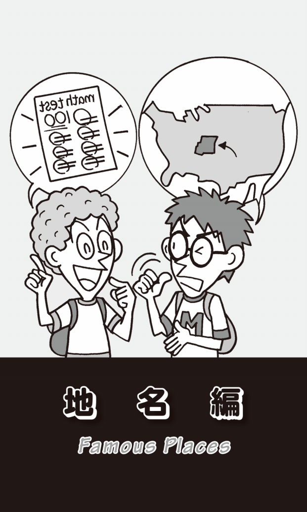
トルコと七面鳥
学校で、japanが「漆」を意味すると習った時には、ちょっと驚きだった。戦国時代に日本にやってきた西洋人が、日本特有の「漆」や「漆器」のことをjapanと呼んだとか、漆で文様を描き金・銀・錫の粉を蒔いて定着させた「蒔絵」がヨーロッパにもたらされ、キリスト教の祭具となったために、japanと言われるようになったという。chinaは「陶磁器」のことで、もちろん中国からイスラム圏やヨーロッパに輸出されたために、そう言われるようになった。
地名と別の物が同じ例を思い浮かべてみると、他にもTurkey「トルコ」とturkey「七面鳥」がある。七面鳥は北米に広く生息する鳥で、アメリカ大陸に渡った清教徒が初めての感謝祭（Thanksgiving Day）でこの鳥の肉を食べたことから、今もこの風習が残っている。
アメリカとトルコは遠く離れている。だから私は、この2つは全く関連がないものと思っていた。偶然の一致だろうと。しかし、いろいろ調べてみると、大いに関連があったのである。アフリカに棲息していた「ホロホロ鳥」は、かつてオスマン帝国（オスマントルコ）が支配していた北アフリカのトリポリ経由で、トルコ人の商人によって、ヨーロッパに輸入されていた。そこから、この「ホロホロ鳥」のことをturkeyと呼ぶようになった。そして、アメリカ大陸に渡ったヨーロッパ人がホロホロ鳥によく似た七面鳥をturkeyと呼んだ。ここで混乱が生じたのである。
フライド・ポテトとfrench fries
卵と牛乳を混ぜてパンに染み込ませ、それをフライパンで焼き直したものをFrench toast「フレンチ・トースト」という。4、5世紀にヨーロッパで作られていたという記録が残っている。その後も、主にフランスからアメリカやカナダに移住した人々が、このトーストをさまざまにアレンジして食べていたという。
もうひとつ、アメリカでFrenchを使った食べ物としてはFrench friesがある。日本では「フライド・ポテト」と言うが、これは和製英語だ。このFrench friesのFrenchを、アメリカ人でも「フランスの」という意味だと理解している人が多い。事実、2003年のイラク戦争の際に、アメリカに批判的なフランスへの抗議の意味を込めて、一部のレストランでFrench freisを"Freedom fries"「自由フライ」と言いかえたことがあった。
しかし、このFrench friesはFranceという国名とは関係がなく、料理用語で「短冊切りにする」という意味の動詞frenchからきているのだ。つまり、「ポテトを細長く切って油で揚げた」ものがfrench friesなのである。この話をアメリカ人の友人にしたら、ものすごく驚いていた。彼はもう60歳になるが、この年になって人生観が変わるほどのショックを受けたという。
ビートルズの「ノルウェイの家具」
国とその国民・言語の呼び方でおもしろいのがNorway「ノルウェイ」である。正式な国名はthe Kingdom of Norwayだが、「ノルウェイの」「ノルウェイ人（の）」「ノルウェイ語（の）」はNorwegianとなる。何とgも入って、英語の発音をカタカナにすれば「ノルウェイジャン」となるのである。
これで思い出すのが、ビートルズの名曲"Norwegian Wood"（John Lennon /Paul McCartney作詞・作曲）だ。日本語タイトルは「ノルウェイの森」で、あの村上春樹の同名の小説も冒頭と最後のシーンで、この曲が流れる。
だが、ビートルズ・マニアなら、この曲のタイトルが誤訳だと知っている人も多いのではないだろうか。正しく解釈すると「ノルウェイの家具」ということになる。もし「森」ならばwoodsになるのが普通だ。
この曲の歌詞はとても難解で、いろいろな解釈が成り立ち、ビートルズ・マニアの間では永遠の謎となっている。ひとつの解釈は、イギリスでは貧しい労働者階級が住むアパートには、粗末なノルウェイ産の家具があり、安いノルウェイ産の木材で内装を施されていたりすることが多く、そのような部屋に住む貧しい恋人のことを歌った歌だというものである。
それはともかく、最近よく考えるのは、もし日本語タイトルが「ノルウェイの家具」だったら、村上春樹のあの名著は誕生していなかったかもしれないのではないか、ということだ。
Tokyoiteは「東京人」
New Yorkに住む人のことをNew Yorker、Londonの住人はLondonerというふうに-erをつける。それではRomeに住む人をRomerと言うかというとそうはならない。Romanだ。ParisもPariserではなくParisianとなる。-anや-ianをつけるケースだ。さらに-iteをつける場合もある。何とTokyoがそのパターンで、Tokyoiteで「東京人」「東京都民」を意味する。-iteはあえてカタカナにすれば「アイト」と発音する。他に、-iteを使う例としては、kyotoite「京都人」、Muscovite「モスクワ市民」、Sydneyite「シドニー市民」、Vancouverite「バンクーバー市民」などがある。
Shanghai「上海」が動詞になると
Shanghaiは「上海」、もちろん中国東部の揚子江河口近くの大港湾都市である。もう死語になりつつあるが、最初のsを小文字にしてshanghaiという動詞にすると、「誘拐して船に連れ込む」という、とんでもない意味になる。
19世紀のこと、船員をかき集めるための「強制募集隊」が組織されていた。その手口というのが、とても巧妙だった。彼らは、港街をくまなく歩きまわり、船乗りになれそうな屈強な若者を見つけると、一緒に酒を飲んだり麻薬を吸ったりして仲良くなる。そして、若者が前後不覚になった時に、船に連れ込んで無理やりに船乗りにしてしまうのだ。
目を覚ました若者が「嫌だ、帰りたい。陸地に戻してくれ！」と叫んでももう遅い。すでに船は港を出てしまっている。特に上海行きの船の乗員を、このような方法でかき集めたことから、shanghai「誘拐する」「拉致する」と言う動詞ができた。kidnap「誘拐する」と同じ意味だ。ちなみに動詞shanghaiの過去形と過去分詞は、-edがついてshanghaiedになる。
今や中国を代表する近代的大都市となった上海にとっては、不名誉なことなので、このように紹介するのは控えた方がよかったのかもしれないが、もうすぐ過去の言葉となって消えそうになっていることもあり、絶滅危惧種を保護するような気持ちで、あえて紹介してみた。
Newcastleに石炭を送る
主にイギリスで使われる表現だが、set the Thames on fire「テームズ河に火をつける」で、「大成功を収める」「（人々を）驚かせる」という意味になる。使い方としては、Her performance didn't set the Thames on fire, but the audience enjoyed it.「彼女の演技は大成功とはいかなかったが、観客はそれを大いに楽しんだ」というふうになる。アメリカではthe Thamesがthe worldとなり、set the world on fireとなる。
これもイギリスで使われることわざだが、carry coals to Newcastle「ニューカッスルに石炭を運ぶ」という表現もある。Newcastleはイギリス北部にあり石炭の産地だった。そこに石炭を運び込んでも全く無駄なことなので、「余計な骨折りをする」という意味になる。
私にもこんな経験がある。学生時代の友人が長野県でぶどうの栽培をしていて、毎年夏から秋になると注文しておいしく食べていた。ある時、仕事でとてもお世話になった人がいたので、ぶどうを直送してもらった。ところが、その人が山梨県の勝沼の出身だということに後から気づいたのだった。まさにcarry coals to Newcastleならぬsend grapes to Katsunumaをしてしまったのだ。これは「無駄なことをした」というよりは、「恥をかいた」といった方がいいかもしれない。
このcarry coals to Newcastleという表現には、もうひとつ「釈迦に説法」という意味もある。Telling a doctor how to cure a cold is like carrying Coals to Newcastle.で、「医者に風邪の治し方を教えるなんて、釈迦に説法だ」ということになる。
send a person to Coventryという表現もある。Coventryはイギリスのほぼ中央に位置する都市だ。「人をコベントリーに送る」とは、「他人との交際を断つ」「他人と交際ができる社会から人を放逐する」という意味なのである。かつてCoventryの住人は軍人をとても嫌い、軍隊と一般市民の間には全く交流がなかった。故に、軍人がこの町に送られるということは、「人との交際を断つ」ことを意味したのである。
もうひとつ、17世紀の英国の内乱の時に、手に負えない王党員の捕虜をCoventryに送ったことからきているという説もある。この町は反対勢力である議会派の拠点で、王党員に対する反発が強かったために、彼らは冷遇され、住人と交流することが難しかったという。
ところで、このCoventryという町が人名編で登場したことを、記憶の良い読者は覚えているかもしれない。あのpeeping Tom「覗き見」という言葉が生まれた町だ。
「ミズーリ州」が意味すること
目をイギリスからアメリカに転じると、from Missouriという表現がある。「疑い深い」「証明してくれなければ信用しない」という意味である。例えば"I got a perfect score on the math test."「僕は数学のテストで満点を取ったよ」と友達が言った時に、もしそれが信じられなければ"Come on, I'm from Missouri."「冗談だろ。証拠を見せてくれなければ信用できないね」などと言うことができる。
しかし、なぜそんな表現が誕生したのか？ これは1899年のアメリカで、ミズーリ州選出のWillard Vandiver下院議員が行った"I come from a country that raises corn and cotton, cockleburs and Democrats, and frothy eloquence neither convinces nor satisfies me. I'm from Missouri, and you have got to show me."「私はトウモロコシや綿、オナモミや民主党員を育てている州から来ました。口で何と言おうが、私を納得させ満足させることはできません。私はミズーリ州選出です。証拠を見せてください」（小泉訳）という演説からきているといわれている。
つまり、「ミズーリ州では地に足をつけて農作物の生産をしている人が多く、とても現実的なのである。空理空論は通用せず、確実なことでないと信用しない」ということだ。そして、このエピソードからミズーリ州は"The Show Me State"というニックネームで呼ばれるようになったのである。
オランダ人への罵詈雑言
オランダは、英語ではthe NetherlandsあるいはHollandと言う。Nederlandはオランダ語で「低い土地」という意味で、北海沿いの低地の呼び名が国名となった。司馬遼太郎は『オランダ紀行』（朝日文庫）の中で、このNetherlandsのnetherという言葉に強いこだわりを見せて、このように書いている。「単に低いということなら他に言いかたがあるのに、nether（オランダ語はneder）という言いかたは、辞書で語感を探るかぎりおとしめ方がひどいように思える。英語の辞書ではnetherは、"地底にあると信じられている地獄"とか"冥界"だという。が、オランダ人は平然としている」
そして、もうひとつの国名、Hollandは、国内の州のひとつ「ホラント州」からきている。この地域が外国との戦争で大活躍したために、国全体の俗称となったものだ。
「オランダの」「オランダ人（の）」「オランダ語（の）」はDutchだが、これが英語表現の中には頻繁に登場する。まずDutch treatは「割り勘」、go Dutchは「割り勘にする」となる。Dutch auctionというのもある。「逆競り」のことだ。つまり普通のオークションとは逆に、まず実際の価格よりも高い値段を提示して、買い手がつくまで値段を下げていく競売方法のことなのである。なんてケチ臭いのだろうか？ Dutch generosity「オランダ的寛容」が「ケチ」という意味なのだから仕方ないのかもしれない。
酒にまつわる表現も多い。Dutch headache「オランダ人の頭痛」はhangoverつまり「二日酔い」のことだし、Dutch concert「オランダ人のコンサート」とは「酔っぱらいの大騒ぎ」、Dutch courageは「酔った勢いの空元気」のことだ。Dutch bargainとは「酒を飲みながら結ぶ売買契約」のことで、「どちらか一方だけが得をする契約」ということになる。先に酔っぱらった方が訳がわからなくなり、だまされてしまうからだ。
それからDutch rollという表現がある。これは「航空機の機体が揺れて蛇行を繰り返すこと」を言う。1985年の日本航空機墜落事故の時に、墜落前の旅客機が「ダッチロールしていた」という証言があり、この専門用語が一般にも広まった。これはオランダ人兵士が行進すると、みんな酔っぱらっていて、あっちに行ったりこっちに来たり蛇行したことからきている。
さらにDutchには、「いかさま」「いいかげん」「マナーが悪い」といったニュアンスもある。Dutch goldは、Dutch metalとも言い、「銅と亜鉛の合金でつくる偽の金箔」のことだ。Dutch leave「オランダ人の暇乞い」となると、「無断退出」あるいは「借金を払わずに蒸発すること」を言う。これはFrench leaveとも言われ、18世紀のフランスで客が主人に挨拶をしないで帰った習慣があったことからきているのだが、オランダ人にも、そんな失礼な態度がよく見受けられたのだろう。
If ..., I am a Dutchman.という表現もある。Ifの後には、真実でないことが入る。例えば、「この魚は絶対に腐っている！」と主張したい時には、If this fish is fresh, I am a Dutchman.「もしこの魚が新鮮だったら、俺はオランダ人だ」となる。あまりにもひどい言い方で、オランダ人がかわいそうになってくるが、Dutch uncleという表現を見ると、それほど捨てたものではないように思える。talk to a person like a Dutch uncle「オランダのおじさんのように人と話をする」と言うと、「厳しく叱る」「諭す」ということになる。普通、おじさんは気をつかって自分の兄弟姉妹の子供を厳しく叱ることはしないが、オランダではそんなことはお構いなしに甥や姪を叱りつけるというニュアンスがある。
昔の日本では自分の子供だけでなく、隣近所の子供のことを叱ってくれた「こわいおじさん」がいた。これがさしずめDutch uncleだ。世の中には、人生には、こういう人が絶対に必要だ。
イギリスの敵対意識
もうひとつだけDutchを使った表現を紹介しよう。長縄跳びで、2人で2本のロープを素早く回し、そこに他の人が入って飛ぶことをDouble Dutchと言うが、double Dutchと小文字で始めると、「ちんぷんかんぷんな言葉」「訳のわからないもの」という意味になる。His speech was double Dutch to me.「彼のスピーチは、私には理解できなかった」などとなる。
もうひとつ「ちんぷんかんぷん」を意味する英語をご存じの読者も多いことだろう。そう、Greekだ。これも「ギリシャ語（の）」「ギリシャの」「ギリシャ人（の）」という意味だが、「全く意味がわからない」ということなのである。シェイクスピアが『ジュリアス・シーザー』の中で、"It was Greek to me."「それは私にはギリシャ語だ」と使ったのが始まりだといわれる。当時、ギリシャ語は教養語で、一般庶民には理解できなかったからだ。
さて、ここまでずいぶんオランダ人に関するひどい表現を並べてきた。でも、オランダ人とは本当にそんな人たちなのだろうか？ 少し差し引いて考えなくてはいけないのではないかと思う。なぜなら、オランダとイングランドは17世紀後半から18世紀にかけて4回も戦争をしている。まさに犬猿の仲だったからである。
この両国は、極東アジアでも覇権を争っていた。1600年にイギリス東インド会社が設立されると、その2年後にはオランダ東インド会社が誕生した。オランダは日本にまで進出し、ポルトガルやスペインを追い落とし、鎖国時代の日本でもヨーロッパ諸国では唯一、長崎出島での交易を認められたほどである。イギリス東インド会社は、東アジアや東南アジアとの交易を断念し、インド経営に専念せざるをえなかった。
Dutchという単語が、多くの英語表現にネガティブなかたちで使われているのは、イギリス人のオランダ人に対する「恨み」「つらみ」「敵対意識」からきているのではないかと思う。また、オランダ人は世界のありとあらゆる場所に進出していたので、英語表現の実例としてもわかりやすかったこともあるだろう。
オランダは、他の国で思想信条の自由が侵され迫害されてきた人々を数多く受け入れてきた"寛容の国"だ。戦国時代の日本でも、キリスト教の布教禁止令に即座に応じている。何と柔軟でしなやかな考え方をする人たちなのだろうか？ 首都のアムステルダムに行くと、教会のすぐ隣に「飾り窓」という政府公認の売春地帯があるし、麻薬も合法で同性婚も認められている。
きっとオランダ人は振幅が広く清濁併せ呑むような性質を持っており、ある意味、日本人とは対極にあるのではないかと思う。一口にオランダ人といってもいろいろな人がいるだろうから、決めつけはいけないのかもしれないが、一般的にいって、オランダ人は"建前でなく本音で"生きている人々なのではないだろうか。Dutchを使った数々の表現を通して、私にはそんな冒険心と独立心に満ちた、したたかなオランダ人の横顔が垣間見えたのである。
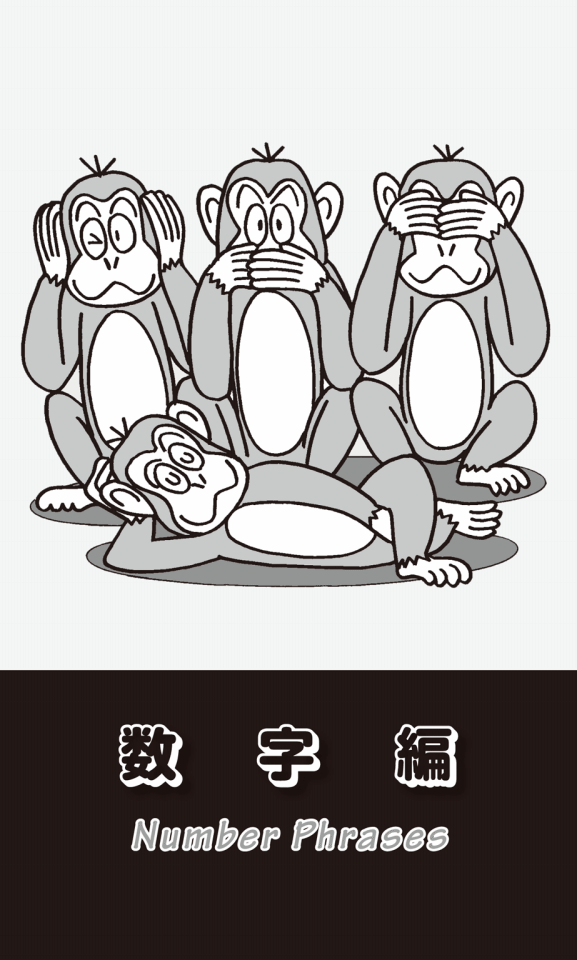
「ゼロ」と「無」
zeroが動詞でも使われることをご存じだろうか？ zero inという熟語で「銃の照準を合わせる」「ねらいを定める」という意味になる。zero in onは「的を絞りこむ」「集中する」ということで、My son zeroed in on the new computer game.と言えば、「息子は新しいコンピューターゲームに夢中になっていた」という意味だ。concentrate onやfocus on、center onと同じ意味になる。俗語でzero outという表現もある。「削除する」「破産する」「完全に失敗する」という意味だが、「節税して税金を払わずに済ます」というような場合にも使われる表現だ。
テニスでは0点を「ラブ」という。もともとテニスはフランスで始まった。0が卵の形をしていることから、フランス語で卵を意味するl'oeuf（ルフ）と呼んでいたのだ。テニスがイギリスに伝わった時に、「ルフ」が「ラブ」と言われるようになったというのだが、有名な話なので知っている人も多いと思う。
だが、英語でもegg「卵」が0を意味することがあるということを知っている人は、それほどいないのではないだろうか。「卵を産む」はlay an eggというが、eggが丸い形をしているため、lay an eggが「ゼロを産む」から「無になる」を意味するようになった。そこから「公演などが大失敗に終わる」「ギャグなどが観衆に全く受けない」というふうに意味が広がったのである。
英語で「無」はnothingだが、nilという単語もある。労働組合が会社に給料アップなどを要求しても、何の改善もないことを「ゼロ回答」というが、英語ならnil returnとなる。また、スポーツの点数を言う場合、野球で「ジャイアンツが3対0で勝った」と言いたい時には、The Giants won the game three to nil.と表現できる。
「無効」の重複
もうひとつ「ゼロ（にする）」「無（にする）」を意味する単語にはnullがある。このnullは、よく法律や契約においてnull and voidというフレーズで使われる。「無効の」という意味だ。nullもvoidも同じ「無効の」という意味で、同じ意味の単語が2つ重なっている。これはやはり法律用語が厳密でなくてはならないからだ。
よく言われるのは、ヨーロッパの中世においては戦争が多く、占領したりされたりの連続だったからだということだ。つまり、厳密性を求められる法律用語は、異なる言語の同じ意味の単語を重ねたり、上流階級の人々の言葉と庶民の言葉を続けて、誰でも理解できるように明確にしなければならなかった。例えば、法律用語では「所有地」のことをlands and tenementsと言うことがあるが、これは英語とフランス語の重複だ。will and testament「遺言」となると、英語とラテン語の組み合わせとなる。このnullとvoidは両方ともラテン語からきているが、もとはnullには「ゼロ」、voidには「空」という意味合いが強かった。
ちなみに「有効な」はvalidと言うが、すごく簡単な言い方がある。それがgoodだ。日常の会話では、よく"This ticket is good."「この切符は有効だ」と言う。いつかGrand Canyon国立公園に行った時に、入口のゲートで入場料を払った。窓口のレンジャーからチケットを渡された時、"This ticket is good for three days."「このチケットは3日間有効です」と言われたことが、今も鮮明に思い出される。validなどという難しい単語を使わなくても、こんな簡単な単語で会話ができるのである。
グラウンド・ゼロの記憶
ground zeroは、もともと「（物事の）始まり」「出発点」という意味だった。それが長崎・広島の「原爆投下爆心地」を意味するようになり、さらに2001年9月11日のアメリカ同時多発テロで倒壊したニューヨークの世界貿易センタービルの跡地も指すようになった。
私は、たった一度だけだったが、貿易センタービルの最上階と屋上まで上ったことがある。ビジター用のエレベーターは午前10時から動き出すというので、友人と一緒に9時に行ったのだが、すでに数十メートルの長い行列ができていた。10時になってもなかなか列は動き始めない。ひとりひとり徹底的に金属探知機で検査し、バッグの中身も厳重にチェックしていたからだ。やっとエレベーターに乗れた時には、もう30分が過ぎていた。
最上階に着くと、そこは展望台兼カフェレストランになっていて、コーヒーを飲んだ。一緒に行った友人は「マンハッタンはやっぱり地震が起こらないから、こんなビルがつくれるんだろうね」と言った。私も「もし火事が起こったら、どうやって避難するんだろう」と答えた。エレベーターに乗るまでに、あれほど時間がかかった訳だから、多くの人たちが一度にエレベーターに殺到したら、一体どうなるんだろうと思ったのだ。
階段はどこにあるんだろうと気になって探したが場所はよくわからなかった。火事になったらスプリンクラーが作動して消化することもできるし、それはその階だけに限定されたトラブルなので、ビル全体を巻き込むような大事にはならないのだろう。きっと、そういう前提で設計されたに違いないと思った。
私は高所恐怖症なのだが、友人が「どうしても」と言うのでしぶしぶ屋上に行った。想像したよりはるかに狭かった。そのうえ周囲の囲いも低く、日本のように高さが3m以上あるような金網ではなかったので、屋上のスペースの真ん中に立っているだけで、足がすくんでしまった。
2001年9月11日、仕事から早く家に戻った私は、煙が立ち上っている貿易センタービルに、飛行機が突っ込む様子をテレビのライブ映像で見た。かつて自分が最上階と屋上にいたことがあるだけに、本当に恐ろしくなってしまった。朝とはいえ、数えきれないほどの人がオフィスで働いている。エレベーターは使えないだろうから、階段を使って地上まで降りるのだろうか？
そんなことを考えていたら、いきなりビルが崩れ始めた。私が想像していた地震や火事ではなく、このようなかたちで貿易センタービルが倒壊するなんて、これを想定外と言わずして何を想定外と言うのだろう。
zero-sumという社会
zero-sum gameという表現もある。zero sumとは複数の人ができるだけ多くの得点を得ようと競っている場合、全員の得点と失点の合計が常にゼロになるような状況のことをいう。つまり誰かがプラスになるためには、誰かがマイナスにならなければならないということだ。
1980年代初めにアメリカの経済学者、Lester Thurowが書いた"The Zero-sum Society"（邦訳『ゼロ・サム社会』岸本重陳訳・阪急コミュニケーションズ）という本が評判を呼んだ。従来、イギリスにおいてthe greatest happiness of the greatest number「最大多数の最大幸福」という功利主義的な経済理論があった。Jeremy Benthamが唱えた「個々の生活の目標は幸福であり、社会全体における幸福とは最大多数がそれを享受することだ」という考え方である。また、laissez-faire（自由放任主義）という経済理論もある。Adam SmithがThe Wealth of Nations（『国富論』）で主張した「個々人が自由に利益を追求し競争すれば、社会全体が繁栄する」という考え方で、そこにはおのずから「見えざる手」が作用すると述べたのだった。
しかし、経済が高度に発達し社会が複雑化した現在においては、多くの人が利益を享受することが難しくなっている。ある人たちにとって利益をもたらすことが、他の人たちにはとんでもない損失となってしまうというのがZero-sum societyだ。「こちらが立てば、あちらが立たず」ということが、あまりにも多くなっているのである。
現代社会における問題の多くは、そのような状況により生じており、政治家も問題を抜本的に解決しようとしても、大胆な政策をとることができない。必ず大反対する人たちが出てくるからだ。そのために穏健で「玉虫色」な政策をとらざるをえない。環境問題でも脱原発の問題にしてもTPPを考えても、そのような傾向は21世紀に入った今、ますます顕著になっている。
zero to heroという表現もある。「ゼロから英雄へ」とは、「落伍者が急に成功した」「急に人気が出た」という意味だ。反対にfrom hero to zeroという表現もある。「英雄から普通の人になる」「いい暮らしから惨めな暮らしに落ちる」ということだ。例えばIn just one week he went from hero to zero.「たった1週間で、彼は英雄からただの人に落ちぶれた」などと言うことができる。
number oneとnumber two
number oneは「一番」という意味であることは誰でも知っているが、赤ちゃん言葉にnumber one、number twoというのがあることを最近知った。これはそれぞれpee /wee-wee、pooとも言う。「おしっこ」と「うんち」のことだ。アメリカ人に「何でこんなふうに数字で言うのか？」「なぜoneとtwoなのか？」などしつこく聞いたが、彼は「そんなにはっきりした根拠はない」と答えた後、しばらく考え続けていたが、「これは僕の想像だけど......」と言って説明をしてくれた。
日本だと子供が「トイレ！」と言えば、お母さんは「大きい方？ 小さいの？」などと聞くが、それに似た表現ではないか、と言うのである。お母さんといっても、うら若き女性が「おしっこ？」「うんち？」などと他の人の前で子供に聞くことははばかられる。それはアメリカでも同じだ。だから日本の「小」「大」を英語では、便宜的にnumber one、number twoというふうに婉曲表現で呼ぶのではないか......。これが彼の解釈である。
「ランボー」はFirst Blood
Sylvester Stallone主演の映画「ランボー」をご覧になった方もいると思う。ベトナム帰りの主人公の名前がRamboなので、私は英語のオリジナル・タイトルも当然"Rambo"だと思っていたが、そうではなかった。原題は"First Blood"なのだ。日本語版のタイトルを「ランボー」としたのは、主人公の名前と「乱暴」をかけたものだろう。
このfirst bloodは「最初の一撃」「先制攻撃」「先手」のことで、もともとボクシングの「最初の出血」のことなのである。
日本でもこの映画が大ヒットとなり、アメリカでもこの「ランボー」というタイトルが受け入れられたため、以降このシリーズ映画のメインタイトルは英語でも"Rambo"となった。第2作目は"Rambo：First Blood Part II"（日本では「ランボー／怒りの脱出」）、第3作は"Rambo III"（同「ランボー3／怒りのアフガン」）、第4作目はシンプルに"Rambo"というタイトルで、最初の日本語版の題と同じになってしまった。でも日本版の題は「ランボー／最後の戦場」だ。
2＋2＝4と2＋2＝5
two timesといえば「2回」、あるいは「2倍」という意味だが、何とtwo-timeが動詞で使われることがある。これは「配偶者や恋人を裏切る」「不貞を働く」という意味になる。Her husband was two-timing her.といえば、「彼女の夫は彼女を裏切って不倫している」ということだ。
数字といえば「計算」だが、two and two make fourという表現がある。もちろん「2と2で4になる」「2＋2＝4」ということだが、これは「事実や証拠から判断した当然の結果・結論」という意味にもなる。
似た表現にput two and two togetherがある。「2と2を足す」ということで、「複数の証拠や情報を突き合わせて正しい結論に達する」「手に入る情報から判断する」という意味だ。例えば、She put two and two together and realized that he was lying.という英文は「彼女は確固たる証拠から判断して、彼が嘘をついているとわかった」ということになる。
これも計算式だが、put two and two together and make fiveという表現もある。「2＋2＝4なのに答えを5にしてしまう」ということで、「ある情報から間違った結論に達する」という意味だ。My husband got transferred to New York, and my neighbors thought we'd divorced. I guess they put two and two together and made five.と言えば、「夫がニューヨークに転勤したので、近所の人たちは私たちが離婚したと思ったようだ。ある情報から間違った結論に至ったのだ」ということになる。
second「2番目（の）」を使った代表的な表現は、人体編で紹介したsecondhandだが、second bestも忘れてはならない。最近日本の会社でもよく使われるようになっているからだ。「次善（の人・物）」、つまり「最善の次」ということで、second-best solutionなら「次善の解決策」を意味する。このsecond-bestには、他に「二流（の）」「やや見劣りする」という意味もあるので、文脈で解釈しなければならない。
second thought(s)と言うと「第2の考え」で「再考」ということになる。I'm having second thoughts about marriage.で「私は結婚について迷っている」とか「考え直している」となる。on second thoughtは「考え直した結果」ということで、I was going to make dinner, but on the second thought, I ordered pizza.なら、「夕飯をつくろうとしていたけど、考え直してピザを注文した」ということになる。
最近、日本でもsecond opinion「セカンド・オピニオン」という言葉がよく聞かれるようになった。「あるひとつの病院、ひとりの医師だけでなく、他のところで診断を受けて意見を聞くこと」を意味する。
ちょっと変わったところでは、second sightという表現がある。これは「透視力」「予知能力」「千里眼」のことだ。She has second sight.と言うと、「彼女は千里眼である」「予知能力がある」という意味になる。
3人の賢者
the Three Wise Menという表現をご存じだろうか？ これはクリスチャンにとってはお馴染みの表現だろう。古代イスラエルで、誕生したばかりのキリストを探して歩きまわっていたのが、このThree Wise Menなのである。偉大な指導者が生まれる時、夜空には明るく光り輝く星が出現するといわれていた。その星の下の馬小屋で「3人の賢者」は生まれたばかりのキリストを見つけて祝福するのである。
the Three Wise Menは、聖書によって「3賢人」「3博士」「3人の占星術師」などと訳される。the Three Kings「3人の王」と記されているものもある。欧米では、クリスマスから12日目にあたる1月6日は"Three Kings Day"という祝祭日となっている。これは「3人の王」、つまり「3賢人」がキリストと出会った日なのである。英語ではEpiphanyと言い、ギリシャ語で「現す」を意味するepiphainōが語源になっている。日本語では「顕現日」あるいは「公現日」と呼ばれる。つまり、神が人間の姿で現れた日なので「顕現日」、その存在がthe Three Wise Menによって公になった日だから「公現日」なのである。
日本ではデパートでも、クリスマスが終わるとすぐにツリーを撤去し、正月用の飾り付けを始めるが、欧米では新年をはさんで1月6日、つまりThree Kings Dayまでがクリスマスなのである。
このthe Three Wise Menは、聖書にある古い言葉だが、現在でもニュースでよく使われる。例えば、国とか政党が3人の重要人物によって運営される場合、よく三頭立ての馬車にたとえて「トロイカ体制」などと呼ばれることがあるが、その3人を"Three Wise Men"と称する新聞記事も見受けられる。だいたいは「賢い」はずなのに「失政続き」で、一体何をやっているのかと皮肉っぽく扱われることが多いのだが......。
「三猿」は外国から
the three wise monkeysという表現は、「見ざる、聞かざる、言わざる」という格言を表す3匹の猿、つまり「三猿」のことだ。日光の東照宮には、それぞれ目・耳・口を両手でふさいでいる3匹の猿のレリーフがあり、江戸時代初期の彫刻職人、左甚五郎の作といわれている。
だから私は、この「見ざる、聞かざる、言わざる」という日本の表現がもとになって、three wise monkeysが世界に広がったものだと思っていた。「〜ざる」は「〜しない」という意味で、それが日本語の「猿」にかけられているからだ。英語のSee no evil, hear no evil, speak no evil.「悪事は見ざる、聞かざる、言わざる」ということわざも、日本語がもとになってできた表現だと信じ込んでいた。
しかし、実はそうではなかったのである。中牧弘允著『世界の三猿 見ざる、聞かざる、言わざる』（東方出版）や飯田道夫著『世界の三猿その源流をたずねて』（人文書院）を読むと、三猿の置物や絵、三猿という考え方自体も、古くから世界のいたる所にあったということがわかる。これは驚きだった。
世界各地には、何と「四猿」というものもある。4匹の中の1匹が股間に手を当てている。「見ざる、聞かざる、言わざる」に続いて、「せざる」というエッチな意味が込められているのだ。
Three Rs「3つのR」という表現もある。Reading, wRiting, aRithmetic「読み・書き・算術」という3つの単語のRのことをいう。ちょっと古い日本語でいえば「読み、書き、そろばん」のことだ。
さらにthird partyと言うと、「第三者」のことになる。事件や事故などの当事者ではない人のことだ。あるいは契約においては、契約を結ぶ当事者ではなく、全く関係ない人のこともいう。もうひとつthird partyには、二大政党の国における「第三党」という意味もある。日本の政治の世界でも、ひと頃「第三極」という言葉がしばしば使われ、多くの小政党が乱立して、キャスティングボードを握ろうとしたことがあった。まさにあれがthird partyなのである。
4つの「自由」
four freedomsと言うと、アメリカにおける「4つの自由」のことで、ルーズベルト大統領が1941年の年頭教書で政策の目標として宣言したものだ。その4つとは、freedom of speech「言論の自由」、freedom of worship「信仰の自由」、freedom from want「欠乏からの自由」、freedom from fear「恐怖からの自由」である。
私は、この中のfreedom of speechという言葉を耳にするたびに思い出すことがある。アメリカ人の出版エージェントと一緒にニューヨークの出版社を訪ね歩いていた時のことだ。ニューヨークのタイムライフ・ビルの前を歩いている時、彼はこんなことを言った。「このビルの地下には、自家発電式の輪転機があって、どんなことがあっても印刷ができるようになっているんだ」。
私は「でも、ニューヨークには地震もないし、それは火災への備えなのかい？」と聞いた。彼は、なんてのんきな奴なんだという驚きで目を丸くして言った。「いや、テレビ局や新聞社、出版社などのマスコミは、時として政府の方針とまったく正反対の論陣を張らなければならない。もし、政府が対抗措置として電気を止めてしまったら、どうなるんだ？ そのような時でも自らの印刷機によって発行を継続し、freedom of speechを守らなければならないんだ」と言ったことが忘れられない。「言論の自由」を国や政府から与えられるものだと思っていた私は、自らの手で獲得した人々との意識の違いに愕然としたのだった。
アメリカと「言論の自由」
アメリカ合衆国という国が、どのようにしてfreedom of speechを獲得したのかを知るのに最適の本がある。Gail Jarrowというノンフィクション作家が書いた"The Printer's Trial"（邦題『印刷職人は、なぜ訴えられたのか』幸田敦子訳・あすなろ書房）という本だ。残された全ての裁判記録・政府の書類・新聞・私信を含む手紙をもとに真実に肉薄したものだ、と「まえがき」にある。
アメリカの独立宣言が採択される半世紀ほど前のこと、北アメリカは13のイギリス植民地に分かれていた。そのひとつニューヨーク植民地にウィリアム・コスビーという男が、イギリス国王の任命を受けた新総督として赴任する。彼には多額の負債があり、この植民地で埋め合わせをしようと数多くの不正を働く。総督の権限は絶大で、司法権は総督と議会にあり、総督は最高裁判事と議員の任命権を持っていた。ということは、彼の方針に背く者は、議員であろうと最高裁判事であろうと罷免できるということだ。
コスビーは、その地位を利用して想像を絶する悪辣な方法で搾取を働き続け、住民の生活も困窮し大混乱に陥る。当然、猛烈な反発を受けるが、議会の代表がイギリス本国に訴えても、大西洋のはるか向こうの新大陸で起こっていることなどに関心はなく、梨のつぶて。そんな中で、コスビー総督の不正を暴き批判を続ける新聞社の印刷発行人ジョン・ゼンガーが逮捕、投獄される。
ちょっと「ネタバレ」気味だが、この本を読めば「言論の自由」を獲得するのがいかに大変なことなのかよくわかる。特にジャーナリストやマスコミ志望の学生には必読の書であろう。
マスコミの階級
fourth estate「第四階級」という言葉がある。これは「言論界」、つまり「マスメディア」「ジャーナリズム」を指す。かつて新聞の社会的影響力が急激に増大したことで、聖職者・貴族・市民の三階級に次ぐ第四の社会的勢力と考えられたことでできた表現だ。だが現在では、もうひとつ別の解釈もある。司法・立法・行政の三権に加えて、「報道」を第四の権力ととらえる考え方だ。報道機関は司法・立法・行政を監視し、その動きを広く国民に伝えるという使命を持っている。その意味で、三権分立ではなく、今は「四権分立」によって、それぞれの権力の暴走が抑えられ、均衡も保たれているという考え方も成り立つのである。
Take Fiveは「5分の休憩」
"Take Five"というジャズの名曲をご存じだろうか？ 1959年に発表されたthe Dave Brubeck Quartetというグループの曲で、この曲を作曲したPaul Desmondのアルトサックスの軽快なメロディーとリズムが印象的なナンバーである。ちなみに、リーダーのDave Brubeckは2012年12月に亡くなった。彼の訃報を伝える日本国内のニュースのバックには、もちろんこの"Take Five"が流れていた。
この曲は4分の5拍子という変則的なリズムなのだというが、素人の私にはそれがどんなものなのか全く想像もできない。音楽に詳しい人に聞いてみたら、「4分の3拍子」の次に「4分の2拍子」が来ると考えればいいんだよと言われ、もっとわからなくなった。
私が若い頃、一番一生懸命に英語をトレーニングした時に使った教材は、NHK「ラジオ英語会話」で、講師は大杉正明清泉大学助教授（現・教授）だった。その年の会話文は、雄二とリサというジャーナリストがthe real America /Americanを探して取材するというもので、その回は雄二が当時は珍しかった女性のサックス・プレイヤーのライブを聴き、その後でインタビューするというストーリーだった。
彼女がステージで"Take Five"を演奏し終えると、"Let me take five."と言った。日本語訳には「5分間休憩させてください」となっていた。この時は、ちょっと無理のある駄洒落で言っていると思ったのだが、後に辞書にも載っている正式な表現であることを知った。辞書には「5分休憩する」の他に、「小休止する」「一息つく」という意味もあった。
high-fiveという表現もある。これは友情や勝利の喜びを表すために、「手のひらを高く上げて相手の手のひらと互いにパチンと打ち合う行為」のことだ。日本では「ハイタッチ」と言っているが、これはJapanese Englishで、アメリカ人やイギリス人には通じない。
2013年には、ワールド・シリーズでBoston Red Soxが優勝したが、ピッチャーの上原がチームメイトやファンと、大切な右腕を上に上げて手のひらをパチンと合わせていた。このシーンはずいぶんテレビで流れたので覚えている人も多いと思う。
いくら同じチームのファンだといっても、すれ違う見ず知らずの人といきなり手のひらを叩き合おうと思っても、相手に準備ができていないか、その気がないかもしれない。そんな時には、"Hey, give me five!"などと言いながら手を上げて、互いの手をパチンと合わせるのである。
相手と両手を合わせる場合には、10本の指が合わされるので、give me tenと言う。最初はスポーツで行われていたが、今では若者の間で挨拶代わりにも盛んに行われている。
the Fifthは「黙秘権」
takeやgiveではなくtake the Fifthという表現もある。これは「黙秘権を行使する」「証言を拒否する」という意味で、the Fifthは「アメリカ憲法修正第5条」のことだ。日本だと「憲法改正」というと、条文そのものを変更することになるが、アメリカでは修正条項を追加していくことで、時代に即した内容にしている。1791年に追加された「修正第5条」には、「何人も、刑事事件において、自己に不利な証人となることを強制されない」（アメリカ大使館ホームページより）という一文がある。
takeではなくpleadを使って、plead the Fifthとしても同じ意味になる。pleadは「嘆願する」ということだが、法律用語になると「主張する」「申し立てをする」という意味の動詞になる。これも「憲法修正第5条を主張する」で「黙秘する」ということになるのだ。2つとも大げさな表現だが、友人に冗談めかして「それは秘密」とか「そんなこと言えないよ」などと言いたい時や、芸能人が記者からの質問に答えたくない時などにも、「ノーコメント」の代わりに、"I'll take the Fifth."と言ったりする。
5本指のディスカウント
「人体編」で、手の指にまつわる表現をいくつか紹介した。その時に「英語では通常、手には1本のthumb（親指）と4本のfingersがあると考える」と書いたが、その例外的な表現のひとつとしてfive-finger discount「5本指のディスカウント」がある。はて、なぜ「5本の指でディスカウント」ができるのだろうか？ 実は、これは別の英語で言えば、shoplifting、つまり「万引き」のことなのである。5本の指で商品をつかんでバッグとかポケットの中に隠し、レジでお金を払わずに店を出てしまうことだ。
「万引き」に関連する表現としては、これ以外にsticky fingers「ベトベトした指」がある。指がベトベトしているということは、お金やお店の棚にある商品がくっつきやすいということだ。例えばThis guy has sticky fingers.と言ったら「奴は手癖が悪い」ということになる。
ついでにsticky fingersの良い例を紹介しよう。アメフトでHe has sticky fingers.と言ったら、「彼はパスを受けるのがうまい」という意味になる。どんなに遠くからのボールでも、ハンブルすることなく正確に受けることができるので、「くっつきやすい指を持っている」ということになるのだ。
5つ目の車輪
アメリカでよく使われるfifth wheelという表現がある。「5つ目の車輪」ということだ。四輪車のfifth wheelというと「スペアー・タイヤ」のことだが、「余計な人・物」「無用の長物」ということになる。例えばI felt I was the fifth wheel at the party last night.なら「昨晩のパーティでは、私は余計な人のような気がした」、つまり「雰囲気になじめず気づまりだった」「居心地が悪かった」ということになる。
このfifth wheelだが、全く同じ意味でthird wheelと言うこともできる。なぜだかおわかりだろうか？ 自動車ではなく自転車を考えてみれば、「3つ目の車輪」が余計だからである。
6と7の混乱
sixth senseと言えば、説明するまでもなく「第六感」のことである。five senses「五感」は、the sense of sight「視覚」、hearing「聴覚」、smell「嗅覚」、taste「味覚」、touch「触覚」だが、その5つの感覚以外の「物事を直観的、感覚的にとらえる勘」のことだ。
イギリスで使われる表現に、be at sixes and sevensがある。これは「ひどく混乱して」「取り乱して」という意味だ。The government is at sixes and sevens over the issue of domestic security.「政府は、国内の治安問題をめぐって揉めに揉めている」などと言うことができる。しかし「6番目」「7番目」とは何を意味するのだろうか？
これにはいろいろな説がある。中世からヨーロッパではサイコロを使ったazarという賭博があった。この言葉が、時を経てhazardと呼ばれるようになったのである。今ではhazardというと「危険」とか「偶然」を意味するが、このギャンブルが「偶然に大きく左右され、身を滅ぼすような危険なゲーム」だったことから生まれた言葉だ。このゲームでは、フランス語で5を意味するcinqと6のsisの目が一番点数が低く危ない数字だった。これが人々の間で誤解されて伝わり、いつの間にか英語でat sixes and sevensが「混乱した」という意味になったのだという。
もうひとつ、中世のロンドンで毎年行われたパレードがあり、2つのギルドが「6番目」に行進するのか「7番目」かで揉めて混乱したことがあった。その結果、1年ごとに順番を交互に変えることで決着がついたという出来事から、この表現が生まれたという説もある。
同じくsixを使った表現に、six and half a dozenがある。「6でも、2分の1ダースでも結局は6になる」というたとえで、「どちらでもかまわない」「どっちもどっちだ」「五十歩百歩だ」という意味になる。
ラッキー・セブン
欧米では、「7」がラッキーな数字だといわれている。聖書で、神は天地創造を始めて7日目を安息日としたことで、神を称える日とされた。そのことから7が「聖なる数字」となったという説がある。
もちろん一番よく知られているのが、野球のlucky seventhだ。かつてNew York Giants（昔はNew YorkがGiantsのフランチャイズだった）がなぜか7回に多くの点を取ったということからできた表現である。一般的に言って、なぜ7回に逆転が多いのだろうか？ 先発投手がちょうど疲れてきて球威がなくなってくる頃なのでバッターが打ちやすくなるとか、打席が三順する頃なのでピッチャーの球に目が慣れてくるからではないかなどといわれる。あるいは先発した一線級のピッチャーが中継ぎに交代する頃だからではないかともいう。今は分業が進んでおり、中継ぎやセットアッパーにも凄いピッチャーがいる。途中まで勝っていて、このピッチャーが出てくればもう安心という「勝ちパターン」があるチームは強い。
メジャーリーグの試合では、7回の表が終了した時に観客が起立して、体を伸ばしてリラックスする。いよいよホームチームの7回の攻撃が始まる前だ。このブレークはseventh-inning stretchと呼ばれる。この時に観客みんなで歌うのが"Take Me Out to the Ball Game"「私を野球に連れてって」という歌だ。これは、もうアメリカの国民歌といっていいほど有名な歌になっている。球場によっては、電光掲示板に歌詞が表示されるが、アメリカで野球観戦する際には、ぜひ事前に覚えて行ってほしい。
7つの海
the Seven Seas「7つの海」を全部言えるだろうか？ the Arctic Ocean「北極海」、the Antarctic Ocean「南極海」、the Indian Ocean「インド洋」、後はthe Pacific Ocean「太平洋」とthe Atlantic Ocean「大西洋」......これで5つだ。あと2つはthe Mediterranean Sea「地中海」だろうか、the East China Sea「東シナ海」だろうか、それともthe Sea of Japan「日本海」だろうか？
これは、よくクイズに引っかけ問題として出題される。正解は「太平洋」と「大西洋」を南北に分けるのである。つまり太平洋はthe North Pacific Oceanとthe South Pacific Ocean、大西洋がthe North Atlantic Oceanとthe South Atlantic Oceanに分かれ、これで「7つの海」になる。
世界の7不思議
the Seven Wonders of the World「世界の七不思議」をご存じだろうか？ 古代ギリシャの数学者フィロンが選んだ「7つの驚異的な建造物」のことだ。まずは、紀元前2600年頃にエジプトのギザに建設されたthe Great Pyramids「ピラミッド」。これについては特に説明する必要もないだろうが、「世界の七不思議」の中で唯一、現存している建造物である。
2つ目は、the Hanging Gardens of Babylon「バビロンの宮中庭園」。紀元前600年頃バビロニア帝国の首都バビロンにつくられた美しい庭園である。名前からして空中に浮かんでいると思われがちだが、高台の上につくられたものであった。
3つ目がthe Temple of Artemis at Ephesus「エフェソスのアルテミス神殿」。紀元前550年頃に古代のイオニアの港湾都市エフェソスに建設された巨大な神殿で、完成までに120年かかったといわれている。
4つ目がthe Statue of Zeus at Olympia「オリンピアのゼウス像」で、紀元前500年に古代ギリシャの彫刻家フェディアスによって建造された天空神ゼウスの像である。高さ12mの黄金の座像で、金の王座に安置されていたそうだ。
5つ目がthe Mausoleum at Halicarnassus「ハリカルナッソスのマウソレウム」。紀元前353年、小アジアのカリア地方を統治していたMausolus「マウソロス王」のために、女王が新都のハリカルナッソスに建造させた大理石の大霊廟である。ちなみに、この霊廟があまりに見事だったために、それ以降「壮大な霊廟建築」のことをmausoleumと呼ぶようになった。
6つ目がthe Colossus of Rhodes「ロードス島のヘリオスの巨像」。紀元前280年頃、エーゲ海に浮かぶロードス島の港の守護神として建造された太陽神ヘリオスの像だ。全長は34m、台座まで含めると50mの高さだったという。
そして、最後がthe Lighthouse of Alexandria「アレクサンドリアの大灯台」である。紀元前280年頃、ナイル川の河口の港湾都市アレクサンドリアに近いファロス島に建造された巨大な灯台である。高さは120mとも130mともいわれ、昼間は太陽の反射光、夜はかがり火が50km以上離れた場所からも確認できたという。紀元前に、このような美しく壮大な建造物が長い年月をかけてつくられたことは、まさにwonder「驚異」以外の何物でもない。
ちょっと余計な付け足しだが、映画"King Kong"の副題は"the Eighth Wonder of the World"となっている。「世界の8番目の不思議」ということだ。もちろんthe Seven Wonders of the Worldからの発想で、現在における「不思議」や「奇跡」のことを、このように表現することも多い。
「9の雲」とは？
人生編でcloud nineという表現に触れた。on cloud nineあるいはup on cloud nineで「とても幸福な」「心が高揚して」という意味になる。まさに「天にも昇る気分で」ということだ。これには気象学的な解説が必要となる。雲が到達する一番高いところは地上から8マイル（12.8キロ）あたりにあり、それより高いところには雲はできないという。だからcloud nineは、雲の最高地点の8マイルより高い「9マイル」の地点を意味し、雲よりもさらに上を漂っているような「最高の気分」のことになる。
もうひとつの説は、空の一番高い地点まで到達する「積乱雲」のことをcloud nineと呼ぶというものだ。アメリカ気象庁は雲を9つに分類していて、「9番目の雲」が積乱雲なのだという。だから、on cloud nineは「積乱雲の上の」という意味になる。
この積乱雲の俗称が「入道雲」だ。日本語の「入道雲」は、白い雲の形が入道の坊主頭のように見えることから、そういわれるようになったという。入道とは、修行僧や仏門に入った貴族のことだが「坊主頭の妖怪」という意味でも使われる。
私は、週に一度は家の近くの緑豊かな公園に行き、芝生に寝転んで空を見上げることにしている。自分がこの大きな空と地球の中では、ほんの小さな存在であることを再確認すると、悩みも何もかもが本当に小さなことのように思えてくる。真夏には、青い空に「入道雲」が白い力こぶのような盛り上がりを見せ、どこまでも続いている。心は浮き浮きとした高揚感で満たされる。それだけで、何と幸せなんだろう、もうこれ以上のものは何もいらないとまで思える。これが、私にとってのon cloud nineだ。
9日間の奇跡
通常の会社の勤務時間は、「朝9時から夕方5時まで」で英語ではnine to fiveだ。nine-to-five jobとなると「定時の仕事」「残業もなく楽だが、刺激のない退屈な仕事」というネガティブな意味もある。
ジェーン・フォンダ主演の1980年のハリウッド映画に"Nine to Five"があった。上司のセクハラとパワハラに耐えかねた3人が、その上司を懲らしめようとしたことから大騒動が起こる。会社で起こりそうな出来事を面白おかしく描いたブラック・コメディーだった。
「9」を使ったdressed to the ninesという表現がある。「正装している」「いちばん良い服を着ている」「めかしこんでいる」ということだ。The new hire was dressed to the nines.と言ったら「その新入社員はいい服を着ていた」ということになる。
「9」は10点満点中の9点という意味でも使われるし、1桁の中では一番大きな数字なので「最高」を表しているところからできた表現だといわれる。あるいは99.9999％というように9が並ぶと100％に限りなく近くなるからという説もある。
nine times out of tenという表現もある。「10回のうち9回」とは「ほとんどの場合」ということだ。Nine times out of ten, my son turns to the music channel when he watches TV. と言えば、「息子がテレビを見る時は、ほとんどの場合、音楽チャンネルを見ている」ということになる。
a nine days' wonder「9日間の奇跡」という表現をご存じだろうか？ 「一時的に注目を浴びてもすぐに忘れ去られるような人や出来事」のことだ。日本でいう「一発芸人」が、まさにこれに当たる。束の間の栄光を味わっても、周りの人からすれば他人事なのですぐに忘れられてしまうのだ。
反対に「何か悪いことがあっても、ちょっと時間が過ぎれば、すぐに忘れてしまう」という意味もある。この表現はA wonder lasts but nine days.「世間を騒がせることも9日しか続かない」ということわざから来ているのだ。日本語でいえば「人の噂も75日」だ。
なぜ英語では「9日」、日本語では「75日」なのだろうか？ 欧米では、中世の宗教的なお祭りが「9日間」連続で続いた。その間は、飲んで騒いでのドンチャン騒ぎが続き、それが終わるともとの静かな日常の生活に戻ったことからきているのではないかという説。また1600年にWilliam Kempeという喜劇役者がロンドンからノーウィッチまでの160kmをMorris danceを踊りながら歩き、その旅行記のタイトルを"Nine Days' Wonder"というタイトルで出版したことに由来するという説もある。
そして、日本では昔、春・夏・秋・冬とそれぞれの間に挟まれた約18日の「土用」を合わせて、5つの季節があった。1年365日を5で割ると73日となり、「悪い噂も、季節がひとつ過ぎ去る頃にはみんな忘れてしまう」、だから「どうでもいい他人の噂は気にしない方がいい」という意味になる。
10点満点の女性
1976年のアメリカ映画"10"（Ten）ご存じだろうか？ 私も見たことは見たのだが、主演のボー・デレクが水着で砂浜を走るシーン以外は記憶に残っていない。
ジョージという作曲家が主人公で、彼は町で会う女性を観察して10点満点で何点になるかと採点する習慣があった。ある日、車に乗って信号待ちをしていると、隣の車に「10点満点」の女性が乗っていたことで、ストーリーが動き始める。この映画から、She's a perfect ten.「彼女は10点満点の美人だ」という表現が生まれた。
モーセの十戒と大誤植
the Ten Commandments「十戒」については、チャールトン・ヘストンとユル・ブリンナーの主演で映画にもなっているし、ご存じの方も多いだろう。エジプトで虐げられ、数多くの災難にも遭っていたユダヤ人を率いてこの地を脱出したモーセが、シナイ山の上で神から授かった「10の戒律」である。
具体的には、宗派や解釈によって、2つの戒律がひとつになっていたり、戒律が11あったりする場合もあり、なかなか難しいのだが、私なりに日本でも一般的な"Good News Bible"『聖書 新共同訳』を引用しながら、10の戒律をピックアップしてみたい。
１．Worship no god but me.
「わたしをおいてほかに神があってはならない」
２．Do not make for your selves images of anything.
「いかなる像もつくってはならない」
３．Do not use my name for evil purpose.
「神、主の名をみだりに唱えてはならない」
４．Observe the Sabbath and keep it holy.
「安息日を心に留め、これを聖別せよ」
５．Respect your father and your mother.
「父母を敬え」
６．Do not commit murder.
「殺人を犯してはならない」
７．Do not commit adultery.
「姦淫してはならない」
８．Do not steal.
「盗んではならない」
９．Do not accuse anyone falsely.
「隣人に関して偽証してはならない」
10．Do not desire another man's house.
「隣人の家を欲してはならない」
ひとつ補足をすると、4のSabbathは「安息日」のことだ。sabbatical leaveというと、大学の教授や准教授に与えられる「研究休暇」のことで、研究職にある人にはとても身近な言葉だ。
このTen Commandmentsに関連して、必ず登場する話題が「史上最悪の誤植」のことだ。ご存じだろうか？ 7つ目のDo not commit adultery.「姦淫してはならない」の"not"を落としてしまい、"Do commit adultery"「姦淫せよ」となってしまったという印刷ミスだ。これでは、神が不貞を命じるということになってしまう。印刷を請け負ったロンドンの印刷業者は莫大な賠償金を請求されたが支払うことができず、投獄されそのまま獄死したといわれている。
「十戒」には、聖書以外にもいろいろなバージョンがある。「犬の十戒」は、犬の気持ちを「お願い」として飼い主に伝えたもので、読むと涙が出てくる。最初の1項目だけ紹介すると「私の一生はだいたい10年から15年。あなたと離れるのが一番つらいことです。どうか、私と暮らす前にそのことを覚えておいて欲しい」となっている。他には「ドライバーの十戒」というのもあって、「汝、殺すなかれ」から始まっている。
さらに、以前フランスの友人の家を訪ねた時に、部屋の壁に貼ってあった「兵士の十戒」を読んだことがある。彼はフランス空軍の軍人だったので、軍隊で配られたものだったのだろうが、あまりにもいやらしくて不謹慎な内容だったので、残念ながらここでは紹介できない。
11番目の時間
これも聖書に由来するeleventh hour「11番目の時間」という表現がある。古代イスラエルでは、日の入りから日の出までを12分割した時間を使っていた。季節にもよるが、日の出を午前6時とすると、9時がthird hour「3番目の時間」、正午がsixth hour「6番目の時間」となり、eleventh hour「11番目の時間」はというと、今の午後5時頃ということになる。つまり「日没の直前」ということだ。
この表現は、新約聖書のMatthew「マタイによる福音書」に出てくる。イエスは、「どのような人が天国に行けるのか」と問われて、「ぶどう園の労働者」というたとえ話をする。ある家の主人がぶどう園で働く労働者を雇うために、夜明け（1番目の時間）に広場に出かけていき、そこにいた人に1日1デナリオンを支払う約束でぶどう園に送った。9時頃（3番目の時間）にも広場でたむろしていた人に同じ金額を払うことを条件にぶどう園に行かせた。さらに5時頃（11番目の時間）にも広場に行き、そこにいた人たちも同じ1日1デナリオンという約束で、ぶどう園に働きに行かせたのである。日が暮れてぶどう園の監督が報酬を支払う時に、主人は「最後に来た者から始めて、最初に来た者まで順に賃金を支払ってやりなさい」と命じた。全員が1デナリオンを受け取ったので、朝早くから長時間働いた人から文句が出たが、主人は「約束の金を支払っただけだ」と言って聞き入れなかった。
イエスは、このたとえ話をしてから、「このように後にいる者が先になり、先にいる者が後になる」と言い、天国に入る心がけは、入信の早い遅いではないと諭したのである。
ここからthe eleventh hourが「直前の」「ギリギリ土壇場の」「瀬戸際の」を意味するようになった。例えばThe president's visit was called off at the eleventh hour.「大統領の訪問は土壇場で中止になった」などと言うことができる。
2007年にレオナルド・デカプリオが中心となって制作したドキュメンタリー映画のタイトルが、"The 11th Hour"だった。地球上の自然破壊の深刻さを、もう後戻りのできない「ギリギリ土壇場」の状況だと訴える環境映画である。
13は不吉な数字
13が不吉な数字とされている。それはなぜだろうか？ ひとつには、キリストが十字架にかけられる前に、12人の使徒と「最後の晩餐」をともにしたからだという。そこから13人で食事をすると、だれかひとりが死ぬという迷信が生まれた。
はっきりと文書として残っている訳ではないが、キリストが処刑されたのが13日の金曜日だという話もある。そこから「13日の金曜日」がもっとも縁起が悪いとされ、ホラー映画のタイトルにもなっている。ちなみに、この映画は、実際に13日の金曜日に公開されている。
欧米では、ビルには13階がないことが多い。13階を飛ばして、12階の上が14階になったり、12b階になっていたりする。
不吉な13に関して、よく話題になるのが、アポロ13号の事故のことだ。アポロ13号の打ち上げには、あえて打ち上げ時刻を13日の13時13分にするなど、人類が作り出した科学技術の「迷信への挑戦」という意味合いもあった。だが、月に向かう途中、船内で突然火花が飛び散り燃料タンクに引火し、酸素タンクが爆発してしまった。これで電気と酸素の供給ができなくなり、3人の宇宙飛行士は窮地に陥ったが、着陸船に乗り換え無事に地球に帰還したのである。この経緯は、Tom Hanks主演の"Apollo 13"「アポロ13号」をご覧になれば、詳しくわかるはずだ。
13恐怖症
これも13に関連する表現なのだが、triskaideka-phobiaという長ったらしい単語がある。これは「13という数字を恐れること」つまり「13恐怖症」のことだ。triskaidekaはギリシャ語で「13」、phobiaは「恐れ」「恐怖」のことだ。ちなみに、英語でも「恐怖症」はphobiaと言い、「高所恐怖症」はacrophobia、「閉所恐怖症」はclaustrophobia、「外国人嫌い」「外人恐怖症」はxenophobiaとなる。反対に、「〜が好きな人」を表現する場合には-phileを最後に付けて、例えば「本好きの人」はbibliophileと言う。
「13」に話を戻すと、triskaidekaphileという単語もある。あえて日本語にすれば、「13を溺愛すること」、いわば「13愛好者」ということになるのかもしれない。実際にthe Society of Triskaidekaphiles「13愛好協会」という団体があり、その創立者は1913年4月13日に生まれた。そして、会員は「13が大好きで、縁起が良い数字だと信じている」人ばかりなのだ。
さらにもうひとつ、13という数字に関連して、the same old seven and sixという表現がある。same oldは「相変わらず」ということだが、seven and sixとは一体何だろうか？ これは7と6を足した「13」のことなのである。「13」は、前述のように不吉な数字だから、使いたくない。だから、代わりに「7」と「6」を使って、the same old seven and sixは「相も変わらず運が悪い」「物事がうまくいっていない」を表すようになった。"How are things?"「調子はどう？」などと聞かれた時に、"The same old seven and six."などと答える。もともとアメリカの軍隊で使われ出した表現で、それが一般にも広まったものだという。
13と４
私は若い頃、ひとりでバックパックを背負って海外を歩きまわっていた。フランスにBeauneというブルゴーニュ・ワインの産地があるが、その町をほっつき歩いていた時に、雪が降ってきてしまった。ホテルを探して速足で歩いていると、Hotel Dieuという表示があった。「神のホテル」という意味だ。入口に入って"Vous avez une chambre pour moi?"「部屋はありますか？」と聞くと、年老いた上品な女性が「ここはホテルではありません」と言う。かつての「施療院」、つまり病院とホスピスを兼ねた教会で、その人はガイドを兼ねたシスターだった。「もし、よろしければ中を案内しますので、ご覧になりませんか？」と誘ってくれたので、入場料を払って案内してもらうことにした。
「15世紀に建てられた病院を兼ねた教会で、貧しい人々を無料で治療しました」という。病人の食事をつくっていた厨房や当時の医薬品を展示してあるスペースもあり、医学博物館にもなっていた。最後に礼拝堂に案内された。祭壇の前には本来長椅子が並んでいるはずなのに、ベッドがたくさんあった。
シスターが言った。「この教会はホスピスも兼ねていました。死を目前にした病人が、このベッドで静かに神に祈りを捧げながら過ごしたのです。ベッドには番号がついていますが、13がないでしょう。これは縁起の悪い数字だからです」
私は、ちょっとお節介かとは思ったが、「日本ではquatre（4）がmort（死）と同じ発音なので、4がないんです」と説明した。そのシスターは嬉しそうに答えた。「そうなんですか。観光シーズンには、たくさん日本の方が見えるのに、誰もそんなこと教えてくれませんでした。今度、日本人のツアー客が来たら、ぜひそれを言ってみましょう」と言って、握手を求めてきてくれた。
ちょっとした体験だが、私には決して忘れられぬ青春の思い出である。
15分間の名声
先ほど紹介したnine days' wonder「9日間の奇跡」という表現に似ているが、fifteen minutes of fameも有名な表現だ。「15分間の名声」ということである。
American pop cultureの旗手と称えられた人気アーチストのAndy Warhol（アンディ・ウォーホル）が、自分の名声について聞かれ"In the future, everyone will be world-famous for 15 minutes."「将来、誰でも15分間は世界的な有名人になれるだろう」と語ったことからきている。カナダ人の高名なメディア学者、Marshall McLuhan（マーシャル・マクルーハン）が残した「テレビの電波が飛び交うような世界においては、誰でも15 minutes of fame（15分間の名声）がある」という言葉を強く意識して語られたものである。
確かに、テレビというメディアでは一夜にしてスターが誕生するし、大きな犯罪を起こした人は、一瞬だけ世間からの大バッシングを浴びることがある。テレビ放送の創世期に、このような未来を予言したマクルーハンは、やはり偉大だったと思う。
Catch-22という「ジレンマ」
数字の「22」といえば、Catch-22という表現がある。これはJoseph Hellerというアメリカ人の作家が1961年に発表した小説のタイトルからきている。戦争の狂気を描いたこの作品は、ベトナム戦争が拡大していく状況の中でアメリカ国内で1000万部を超える大ベストセラーとなった。
この小説の舞台は第二次大戦中のイタリア、主人公Yossarianは空軍爆撃隊に所属するパイロットで、ドイツ軍陣地への爆撃を繰り返していた。彼は1日も早く除隊したいと強く思っていたが、除隊するまでに必要な爆撃回数はどんどん増やされていく。彼は狂気を装ってまでも、除隊したかったのだが、ある軍規のためになかなか任務を解いてもらえなかった。その軍規というのがCatch-22だった。catchとは「軍規」、22はその「22項」を意味する。
その「軍規22項」とは、「精神に異常をきたした者は、自分から申告すれば除隊できる。しかし精神に異常をきたしている者は、自分の異常さを認識できないはずだ」という相矛盾したものだった。そこからCatch-22という表現が、「矛盾する規則」と「その規則によって身動きがとれない状況」を意味するようになった。日本語で言えば「不条理」「理不尽」「あちらを立てれば、こちらが立たず」ということになるだろう。
こういうことは世の中にたくさんある。例えば、自分にどうしてもやりたい仕事があったとしよう。その仕事につくためには「経験者であること」という条件があるのだが、その仕事につかなければ経験を積むことができない。このような状況も、またCatch-22 situationなのである。
聖なる数字
40という数字は、聖書にもしばしば登場したために、昔は神聖にして犯すべからざる数字とされていた。旧約聖書の「出エジプト記」で、モーセが神から十戒を授かった時に、シナイ山にこもっていたのが40日、「ノアの方舟」の節では豪雨が40日続き、その後40日してノアが方舟の窓を開いた。
fortyには「40」以外に、「たくさんの」というニュアンスもある。アメリカの俗語のようだが、forty ways to Sundayという表現が複数の英和辞典に出ている。「日曜日までに40ものたくさんの方法がある」ということで、「あらゆる方向で」「全てを含んで」「完全に」という意味だと記載されている。しかし、何人かのアメリカ人に聞いたが、このフレーズを知っている人は皆無だった。やはり「ある意味、辞書は死んだ言葉の墓場である」のかもしれない。
forty winksという表現は多くの人が知っていた。これは「短い昼寝」のことで、特に「食後のうたた寝」のことをいう。I had forty winks in the afternoon.なら、「私は、ちょっと午睡をした」ということになる。
40エーカーとラバ1頭
アメリカにはforty acres and a muleという表現がある。南北戦争の後に、解放された黒人奴隷に対して約束した補償で、「40エーカーの土地」と鍬代わりの「ラバ1頭」を与えるというものだった。ところが、リンカーン大統領の暗殺後、後継者のアンドリュー・ジョンソン大統領が、この約束を反故にしたのである。それ以降、この表現は「破られた約束」の代名詞となった。
1960年代の黒人運動の指導者といえばMartin Luther King, Jr.だが、そのキング牧師が非暴力を貫いて公民権運動を推し進めたのとは対照的に、より過激な運動を展開したのがMalcolm Xだった。彼の人生を描いた"Malcolm X"という映画をご覧になった方もいると思うが、その映画を監督したSpike Leeは自らの映画制作会社を"40 Acres & A Mule Filmworks"と名付ている。
こんな話もある。2008年にアメリカ初の黒人大統領、バラク・オバマが当選を決めた時、黒人ジャーナリストのLarry Wilmoreが"The Daily Show"というテレビ番組に出演してこう言った。"We would have been happy with 40 acres and a mule"──と。これは、つまり「われわれ黒人が約束通り40 acres and a muleをもらっていたら、それで満足して、大統領になろうなどとは思わなかっただろう」という皮肉に満ちたコメントだった。
49とゴールドラッシュ
アメリカン・フットボールにSan Francisco 49ersというチームがある。「49」は1849年のことで、ゴールドラッシュの年を意味している。そしてforty-ninersとは、ゴールドラッシュの際に、一攫千金を夢見てカリフォルニアに押しかけてきた人たちのことだ。
この49という数字の印象が強いためか、金が発見されたのが1849年だと思っている人も多いかもしれないが、これはゴールドラッシュ・ブームが始まった年で、実際の金の発見は1848年1月24日のことだった。James Marshallという男が、カリフォルニアのコロマ近くのアメリカン川沿いで金色に輝くかけらを見つけた。その噂はすぐに広まり、世界中から30万人もの採掘者が押し寄せることになる。
東京・渋谷に"Gold Rush"という人気のハンバーグ店がある。エレベーターを降りて店内に入った、すぐ右側の壁に店名の由来を記したプレートがある。その最後に「Gold Rushはフォーティナイナーズの勇気と情熱を敬服し、讃え続けます」と記されている。
脱線のついでにどうでもいい話を続けると、このゴールドラッシュ・ブームがきっかけとなって誕生したのが、リーバイスのジーンズだ。金の採掘者たちのズボンがすぐに擦り切れて破れてしまうことに目をつけたリーバイ・ストラウスという男が、馬車の幌やテント用のカンバス地で丈夫なズボンを作り、これが鉱夫の間で大人気となった。
411は「情報」の意味
日本では電話の番号案内は「104」だが、アメリカでは「411」（four-one-oneあるいはfour-elevenと読む）になっている。そのため「411」はスラングで「情報」という意味を持つ。特に「個人のプライベートな情報」や「大きな事件や人気のイベントに関する情報」を表す。
I want to get the 411 on him.と言ったら「私は彼に関する情報を得たい」「彼のことをもっと知りたい」ということになるし、Give me the 411 on her.なら「彼女についての情報を教えて」という意味だ。「私は彼女のことをよく知っている」と言いたい時には、それが他の人が知らない秘密情報だったような場合には、I have the 411 about her.と言うこともできる。
小説家と2000ポンド
Jeffrey Archerというイギリス人をご存じだろうか？ イギリスのスラングで"Archer"と言ったら「2000ポンド」のことになる。なぜだろうか？ それを知るためには、このJeffrey Archerの波乱の人生を語らなくてはならない。
Jeffrey Archerは、29歳の時に史上最年少で下院議員に当選した。ところが北海油田をめぐる国際的な株式投資の詐欺事件に巻き込まれ、全財産を失い、破産宣告を受けて議員を辞職する。しかし、この悲惨な体験をバネに、36歳の時に処女作"Not a Penny More, Not a Penny Less"（邦訳『百万ドルをとり返せ！』永井淳訳・新潮文庫）を執筆。この小説は大ベストセラーとなり借金を完済したのである。
Archerは、その後も作家活動を続けながら政界に復帰し、43歳で保守党の副幹事長という要職につく。しかし、今度はコールガールと性交渉を持ったという大スキャンダルが持ち上がる。日本よりもはるかに清廉潔白さを求められるイギリスの政治家としては致命的である。彼は、この醜聞を報じたタブロイド紙を名誉棄損で訴える。裁判に勝利して高額の損害賠償金を得たものの、代償としてまたしても政治の表舞台から姿を消さなければならなかった。
そして、60歳を前にして保守党のロンドン市長候補となり3度目の政界復帰を目指していた、まさにその時、旧友が売春スキャンダル裁判で勝訴の決め手となったアリバイ証言は真っ赤な嘘で、Archerから偽証するよう頼まれたと暴露したのである。今度の裁判では、司法妨害や偽証罪などで懲役4年の実刑が確定し、いくつかの刑務所を転々とする。しかし、獄中で手記を執筆して新聞に連載、出所後には服役者から聞いた犯罪や身の上話を多くの小説にまとめたのである。
さて、ここでなぜArcherが「2000ポンド」を意味するのかを明かそう。これは売春スキャンダルが起こった時に、Archerがコールガールに支払った口止め料の額なのである。取材陣が殺到して彼女が真相を話さないように、海外へ逃がすための「逃亡資金」でもあった。
それにしても、なんと浮き沈みの多い人生だろうか。しかし、身から出た錆とはいえ、もしあのような逆境に陥らなければ、Jeffrey Archerは世界的に名の知れたベストセラー作家にはならなかっただろう。
逆境は「姿を変えた幸福」
Jeffrey Archerの人生を思うたびに、私はblessing in disguiseという英語表現が頭をよぎる。blessingは「恩恵」「福音」「祝福」などと訳されるが、つまりは「幸福」ということだ。in disguiseは「変装した」「見せかけの」という意味で、blessing in disguiseとは「姿を変えた幸福」ということになる。つまり、その時には不幸のどん底にあると思っても、後で考えてみると、その苦しみがあったからこそ人生が良い方向に向かい、幸せになれるということを意味している。
今まさに、逆境の真っ只中にいるという人もいるだろう。そんな人は、ぜひこの英語の表現を思い出してほしい。あなたが経験しているのは、きっと「不幸に変装した幸福」なのだ。コツコツ地道に努力を続けていけば、いつか幸せがやって来ると信じてほしい。その時に、きっとblessing in disguiseという表現の意味をしみじみと味わうことになるだろう。
100万回の「ありがとう」
人にお礼を言う時には、いろいろな表現がある。一番よく使われるのは、Thank you very much.だろう。他にもThank you so much.やThanks a lot.あるいはMany thanks.という言い方もある。
thank以外の単語を使って、I'm much obliged to you.と言うこともある。obligeは「強制させる」という意味で覚えている人も多いと思うが、「親切にする」という意味もある。
appreciate「感謝する」を使えば、I appreciate your kindness.「ご親切に感謝します」とか、I appreciate what you have done for me.「あなたが私のためにしてくださったことに感謝します」などとなる。
thankに話を戻すと、もうひとつ口語でThanks a million.という表現がある。Thank you a million times.の短縮形で、「100万回お礼を言います」という意味だといわれている。この表現を覚えたのはかなり前のことだが、その時のことは今も鮮烈な記憶として残っている。
昔のNHK「ラジオ英語会話」に、リサという新聞記者がmillionaire「億万長者」を取材するという会話文があった。リサがFlorida州Fort Lauderdale空港に着くと、その億万長者がヘリで迎えに来てくれていた。「家では今ボストン交響楽団がリハーサルをやっているので、私のヨットで取材を受けよう」と言って、ヘリで港に向かう。豪華なクルーザーで取材を終えた後、「お礼に夕飯をご馳走したいので、これから一緒にNew Yorkのレストラン"Four Seasons"に行こう」と誘う。この億万長者が自ら自家用ジェットを操縦してFloridaからNew Yorkへ向かおうとするが、そこに緊急の電話がかかってくる。「ちょっと急用ができて私は行けなくなった。他のパイロットが操縦するので、申し訳ないが、ひとりでニューヨークでディナーを楽しんできてください」と言う。その時に、リサが言ったお礼の言葉が、"Thanks a million."だった。
説明するのも野暮なのだが、お礼を言う相手が「億万長者」だから"Thanks a million."なのである。何と洒落ていて微笑ましい会話なのだろう。この時、Thanks a million.が私の脳に刻まれ、決して忘れることのないフレーズとなった。
英単語や表現を必死になって暗記している方も多いと思うが、この会話文のように、ひとつのストーリーの中で英語を覚えたらどうだろうか？ 会話文でなくとも、自分がそれを使う場面を想像しながら学んでみたら、もっと脳裏に強く深く刻みこまれるのではないだろうか？
あまり語られることはないが、私は英会語の学習には「妄想力」がとても大切だと思っている。あなたの「妄想力」で、英語を少しずつ身につけていってほしい。そして、いつか世界中の人々との交流を楽しんでほしいと願っている。
さて、ここまで取り留めのない私の文章をお読みいただいた皆様に、心からお礼を申し上げたい。
Thanks a million!
参考文献
Ivor H. Evans,Brewer's Dictionary of Phrase and Fable, Cassell Publishers
William and Mary Morris,Morris Dictionary of Word and Phrase Origins, Harper & Row Publishers
Marvin Terban,Scholastic Dictionary Idioms: more than 600 phrases saying & expression, Scholastic
Marvin Terban,In a Pickles and Other Funny Idioms, Clarion Books
Gyles Brandreth,Everyman's Modern Phrase & Fable, J.M. Dent & Sons
Nigel Rees,Dictionary of Word and phrase Origins, Cassell Publishers
Norton Juster,A Surfeit of Similes, Morrow Junior Books
Joseph T. Shipley,The Origin of English Words: A Discursive Dictionary of Indo-European Roots, The Johns Hopkins University Press
Walter W. Skeat,The Concise of Dictionary of English Etymology: The Roots and Origins of the English language, Wordsworth Editions
The AmericanHeritage Dictionary, A Dell Book
WilliamShakespeare Complete Works Ultimate Collection: 213 Plays, Poems, sonnets, Poetry, including the 16 rare 'hard-to-get' Apocryphal Plays PLUS Annotations, Commentaries of Works, Full Biography ［Kindle版］, Everlasting Flames Publishing
John Arbuthnot,The History of John Bull ［Kindle版］, A Public Domain Book
『聖書 新共同訳』／Good News Bible: Today's English Version 日本聖書協会
梅田修著『英語の語源物語』大修館書店
ジョーゼフ・T・シップリー著『シップリー英語語源辞典』（梅田修・眞方忠道・穴吹章子訳）大修館書店
井上義昌編『英米故事伝説辞典』冨山房
浅見ベートーベン編著『ビジネスパーソンのための英語イディオム辞典』NHK出版
久野揚子・久野えりか著『通な英語 アメリカ人の上等句』くろしお出版
久野揚子著『通な英語2 文字・数・動植物編』くろしお出版
久野揚子著『通な英語3 からだ編』くろしお出版
寺澤芳雄編『英語語源辞典』研究社
小島義郎・岸暁・増田秀夫・高野嘉明編『英語語義語源辞典』三省堂
アリストパネス『鳥』（呉茂一訳）岩波文庫
庄司薫『白鳥の歌なんか聞えない』新潮文庫
シャルル・ペロー『ペロー童話集』（天沢退二郎訳）岩波少年文庫
ウィリアム・シェイクスピア『シェイクスピア全集 ジョン王』（小田島雄志訳）白水Uブックス
新田次郎・藤原正彦『孤愁 サウダーデ』文藝春秋
松尾弌之『不思議の国アメリカ 別世界としての50州』講談社現代新書
スタンダール『赤と黒』〈上・下〉（桑原武夫・生島遼一訳）岩波文庫
ウィリアム・シェイクスピア『ヴェニスの商人』（福田恆存訳）新潮文庫
ウィリアム・シェイクスピア『十二夜』（安西徹雄訳）光文社古典新訳文庫
ウィリアム・シェイクスピア『オセロ』（三神勲訳）角川文庫
森村桂『天国にいちばん近い島』角川文庫
ワシントン・アーヴィング『スケッチ・ブック』（吉田甲子太郎）新潮文庫
司馬遼太郎『オランダ紀行』朝日文庫
ウィリアム・シェイクスピア『ジュリアス・シーザー』（安西徹雄訳）光文社古典新訳文庫
レスター・C・サロー『ゼロ・サム社会』（岸本重陳訳）阪急コミュニケーションズ
中牧弘允『世界の三猿 見ざる、聞かざる、言わざる』東方出版
飯田道夫『世界の三猿 その源流をたずねて』人文書院
ゲイル・ジャロー『印刷職人は、なぜ訴えられたのか』（幸田敦子訳）あすなろ書房
ジョーゼフ・ヘラー『キャッチ＝22』〈上・下〉（飛田茂雄訳）ハヤカワ文庫
ジェフリー・アーチャー『百万ドルをとり返せ！』（永井淳訳）新潮文庫
ジェフリー・アーチャー『誇りと復讐』〈上・下〉（永井淳訳）新潮文庫
Epilogue
The police caught him red-handed.という英文と偶然出会い、「赤い手で」が「現行犯で」を意味することを知って英語表現に興味を持ったのは、もう30年も前のことです。その後、アメリカ旅行中にphysically challenged personという表現もみつけました。handicapped person「障害者」のことです。「障害者」を「身体的挑戦者」と呼ぶ英語とは、なんと凄い言語なのでしょうか。アメリカの障害者団体は、この表現はきれいごとすぎるとして反対しているのですが、ただこれだけは言えます。英語は人をとても元気で前向きにする言葉だ──と。
difficult「難しい」をchallenging「挑戦しがいのある」と言い、「自分はもうダメだ」と思った人にIt's not the end of the world.「世界の終わりじゃないさ」と励ます言葉。日本人にとってはとても難しい英語ですが、このような興味深い表現に私はどんどん魅了されていきました。
こうして私は、心に響く英語表現を発見するたびに単語カードに記すようになったのです。本書はその数多くの単語カードをもとに執筆したものですが、最初はかなり安易に考えていました。おもしろい英語表現とその意味と例文を紹介し、そこに私自身の忘れえぬ記憶を加えていけば、それだけで1冊の本になるだろうと思っていたのです。
しかし書き進むうちに、もっと深遠な情報を盛り込む必要があるのではないかと感じ始めました。「赤ちゃんが生まれた人に、なぜ銀のスプーンを送るのか？」「なぜ緑が嫉妬の色なのか？」「なぜ、ゴマすりのことをbrown noseと言うのか」といった表現の成り立ちはもちろん、多くの単語やフレーズの語源をできうる限り記そうと考えました。
しかし、この"語源"というのが、なかなかの難物でした。日本語なら、古典として残された文献をもとに、例えば「おかし」がもともと「趣がある」という意味で、今では「滑稽でおもしろい」というふうに変わってきたということが、はっきりわかっています。また「背水の陣」や「臥薪嘗胆」などは中国の故事からきているということも、疑いようのない定説です。
しかし、英語ではそうは簡単にはいきません。時代的にも、6000年も前に使われていたとされるインド・ヨーロッパ語族、ゲルマン語、ケルト語、ギリシャ語、ラテン語、古期英語などまでさかのぼらなくてはなりません。空間的にも、イギリス、アイルランド、アメリカ、カナダ、オーストラリア、南アフリカだけでなく、世界中に網を広げなければならないのです。
故に、多くの文献を調べてみると、ひとつの英語表現の語源として複数の説があることがわかります。時代も地域もバラバラですし、たとえ同じ出来事に由来する語源でも、細かな部分が違っていたりします。中には眉唾物だとしか思えない"なんちゃって語源"もありました。しかし、今となってはどれが正しいか間違っているかは、タイムマシーンでもなければわかりません。ですから、どれかひとつだけに絞り込むことは諦めました。文献に残されている複数の説をできるだけ多く紹介し、あとは読者のみなさんの判断に委ねようと思った次第です。
そのような語源も含めた英語のチェックは、イギリス人のRachel Fergusonさん、アメリカ人のJeff Clarkさんという2人の"超インテリ"にお願いしました。私の英語に関する解釈など日本語原稿についても、細かなニュアンスも含めて見ていただきました。Jeffさんの「アメリカ人の僕が読んでも、とても勉強になったよ」という言葉は、私にとって「一生の宝」となることでしょう。
最後に、海のものとも山のものともつかない私の原稿を本にしてくださったIBCパブリッシングの浦晋亮社長に心から御礼申し上げます。
2014年6月 小泉 牧夫
小 泉 牧 夫 Makio Koizumi
英語表現研究家、英語書籍・雑誌編集者。1953年東京都西多摩郡羽村町（現羽村市）生まれ。1977年青山学院大学卒業、出版社に入社。英語書籍・雑誌を中心に編集を行い、数多くの出版物を世に送り出す。同時に海外版権担当としてブックフェアに参加、世界各国の出版社と商談を行う。35年に及ぶ語学書の編集者としての集大成が本書である。
世にもおもしろい英語
あなたの知識と感性の領域を広げる英語表現
電子版発行日
平成26年12月15日
著者
小泉牧夫
発行
IBCパブリッシング株式会社
〒162-0804
東京都新宿区中里町29-3 菱秀神楽坂ビル9F
http://www.ibcpub.co.jp
発売
株式会社インプレス
©2014 Makio Koizumi All rights reserved.